This is a list of release notes for Alpha Anywhere 2.0 to verify/move into the help system. The following directories are associated with this file: "Alpha_4.3.2_ReleaseNotes_files"
As this content is moved into the help system, please delete it from this file.
Guidelines:
Web Application - PhoneGap - If you have a lot of applications in PhoneGap build, retrieving the app icon for each app can be slow because the PhoneGap build API does not have a call to retrieve all icons at once. You have to call the API once for each app. Therefore, a new property has been added to the Get Icon Timeout Threshold property. If you set this property to <disable>, a default icon will be used.
AlphaDAO - MySQL - Numeric Fields with 7 or More Decimals - Fixed an issue with MySQL where you could not enter numbers with more than 6 decimal places.
Grid Component - Setting State Variables - Fixed an issue where setting state variables using the e._state pattern was not working in the AfterInsert, AfterUpdate and AfterDelete server-side events.
| UX Component | Multi-select List Control - Icon to Indicate Selected Rows | The Button List control (and the Checkbox control - configured to render as a Button List) can show an icon on selected items. The List control can also be configured to allow multiple selections (like a Button List or Checkbox), but it does not show an icon on the selected rows to indicate the row has been selected (it shows selected rows using a different row color).
In this video we show how you can easily display an icon on the selected rows. The technique uses a custom CSS class. Watch Video - Part 1 Watch Video - Part 2 Download Component |
| UX Component | Making a TextArea Fill a PanelCard | Controls such as Lists and Maps have a 'Fill container' property that allow you to automatically cause the List or Map to fill the Panel Card in which the control is contained. Other controls, such as Text Areas, do not have this property.
In this video we show how you can configure the UX so that the Text Area control automatically fills the Panel Card in which it is contained. Watch Video Download Component |
UX and Grid Component - Image Upload Action - Image Scaling - Fixed issue with scaling image after it was uploaded.
Calendar Component - Editing Events - Fixed an issue editing an event the second and subsequent time. This issue was introduced in build 2089.
UX Component - Phone Gap - Fixed an issue with PhoneGap where Ajax callbacks were failing and images that were loaded from the server were failing.
AlphaDAO - SQL::TableInfo - ParseTableName() Method - A new static method has been added to the SQL::TableInfo object. The .ParseTableName() method takes a fully qualified tablename and returns the base table name, owner, schema and catalog for the table.
For example
dim CatalogName as C
dim SchemaName as C
dim OwnerName as C
dim BaseTableName as C
dim FullName as C = "dbo.[hello.world]"
dim ti as sql::tableinfo
?ti.ParseTableName(CatalogName, SchemaName, OwnerName, BaseTableName, FullName)
= .T.
?CatalogName
= ""
?SchemaName
= ""
?OwnerName
= "dbo"
?BaseTableName
= "dAgency.06"
?fullname
= "[dAgency.06]"
UX Component - Action Javascript - Panel Actions - Navigate Action - History - The 'Navigate' action now has new options. The options with the 'History' prefix allow you to navigate through the Panel Navigator's history (much list the way a browser's history button works).
Code Editors - Xbasic and Javascript - Bookmarks - You can now get quick access to any bookmarks you insert into the script or function you are editing by clicking the 'Bookmark' icon on the status bar.
A bookmark is any comment that starts with //.
For example:
'//bookmark1 (Xbasic)
//''Bookmark1 (Javascript)

AlphaDAO - Listing Tables in a Database - When you use the <connection>.listTables() or <connection>.listTablesWithTypes() methods to list the tables in a database, by default, only the first 1,000 objects are listed.
As a result of this, many of the builders you use in AlphaAnywhere that require you to select a table only present a list showing the first 1000 tables in the database. Now, a new setting in the Settings dialog box allows you to set the maximum number of tables returned in a table listing.
To open the Settings dialog box, select the top-level View menu, then select Settings.
If you are using AlphaDAO to get your own listing of tables in an object, the SQL::TableFilter object which is passed into the .listTables() and .listTablesWithTypes() method now allows you to set the .MaximumTablesInList property on the SQL::TableFilter object. Set this property to -1 for no limit.
For example:
dim sqlFilter as sql::TableFilter
sqlFilter.IncludeAliases= .t.
sqlFilter.IncludeAllCatalogs= .F.
sqlFilter.IncludeAllOwners= .F.
sqlFilter.IncludeAllSchemas= .T.
sqlFilter.IncludeLinkedTables= .f.
sqlFilter.IncludeSynonyms= .t.
sqlFilter.IncludeSystemTables= .f.
sqlFilter.IncludeTables= .t.
sqlFilter.IncludeViews= .t.
sqlfilter.MaximumTablesInList = 2000
dim cn as sql::connection
cn.open("::name::myconnection")
dim list as c
list = cn.listTables(sqlFilter)
Tip: You can use the Xbasic helper function to list tables and automatically honor the setting you have defined in the Settings dialog. The helper functions are a5_list_tables() and a5_list_tables_with_types(). The functions take the connection object as the first parameter and the sql::tableFilter object as the second parameter.
AlphaDAO - Connection Strings - Postgres - Specifying the Default Schema - When working with a Postgres database that contains multiple schemas, you can specify the default schema in the connection string. Unfortunately, at this point, the connection string dialog does not let you specify the default schema, but you can easily edit the generated schema to add the necessary directive to set the schema.
For example:
{A5API='PostgreSQL',A5Syntax='PostgreSQL',A5UseServerSidePrepare=Y,A5InitialCommand='SET SCHEMA ''TestSchema''', Database='Alphasports', Password='alpha',Port='5432',Server='localhost',UserName='postgres'}
In this example, the following directive has been added to the connection string:
A5InitialCommand='SET SCHEMA ''TestSchema'''
Notice that the entire argument to the A5SetInitialCommand is enclosed in single quotes. Therefore the schema name, which must also be enclosed in single quotes uses escaped single quotes (a double single quote).
UX Component - List Control - Multi-Select - If the List control was configured to allow multiple rows to be selected, when the UX was submitted, the selections in the List were not being returned as an array, as they should have been. Instead, they were being returned as a '\n' delimited string. This bug was introduced in the last update.
| Grid Component | Opening a UX from a Button on a Grid and Passing Information Into the UX | You can open a UX component from a button on a Grid using several different actions in Action Javascript. For example, there are built-in actions to edit the data in the current row of a Grid using a UX.
But sometimes you want to simply open a UX and pass information from the current row in the Grid to the UX. In this video we show how this is easily done by defining arguments in the UX component and then automatically setting the value of these arguments when the UX is opened. Watch Video - Part 1 Watch Video - Part 2 Download Component |
Application Server - OpenSSL - 'HeartBeat' Bug - The Application server now uses Version 1.0.1g of the 3rd party OpenSSL library which Alpha Anywhere uses. This updated library patches the so called 'HeartBeat' vulnerability in the OpenSSL library.
UX Component - List Control - Group Summaries - If you are using the {dialog.object}.groupSummary() method in a Group header or footer, you will need to edit the component and change the method to
this.groupSmmary()
The .groupSummary() function is now a method of the List object. Previously is was a method of the UX object.
Application Server - Warning. A change has been made to the web security system to load the security much faster. This change alters one of the published security files. If a project is published from the latest pre-release to an older application server, the older application server will report a 500 internal server error as it won't be able to read the new file. The application server should be the same build
as the development program.
| UX and Grid Component | E-mailing a Report | A common pattern in both the UX and Grid component is to place a button on the component to print a Report and display the Report in a window, div or TabbedUI pane. However, instead of displaying the Report, you might want to send it as an email.
The Action Javascript action to Print a Report has an option to call an Xbasic function when the Report has printed. In this video we show how you can use this option to e-mail the report using the Mandrill e-mail service. (Note: The sample function prototype shown in the video is only available in build 4241 or above.) Watch Video - Part 1 Watch Video - Part 2 |
| UX Component | Cross-domain Ajax Callback | A cross-domain Ajax callback is a callback that takes places to a server that is in a different domain than the domain from which the component was loaded.
In this video we show how a callback is made to the Apple iTunes store and we contrast the difference between making the callback directly to the Apple site versus making a callback to the Alpha server first and then having the Alpha server make the call to the Apple site. Watch Video - Part 1 Watch Video - Part 2 Watch Video - Part 3 Download component |
| UX and Grid Component | Using CSS Icons from the Font-Awesome Icon Font Library | The Font-Awesome CSS Icon library (http://fontawesome.io) is bundled with Alpha Anywhere and can be used in the UX, Grid and TabbedUI components.
In this video we show how to use the Font-Awesome font library and CSS icons in general. Watch Videos - Part 1 Watch Videos - Part 2 Watch Videos - Part 3
|
| UX and Grid Component | Using 3rd Party Icon Font Libraries (CSS Icons) | There are many 3rd party Icon Font (CSS Icons) libraries that can be used with Alpha Anywhere. In this video we show how you can go to a source of icon fonts (http://www.fontello.com/)and download a font library that can then be installed into Alpha Anywhere.
Watch Video |
| UX Component | Using CSS Icons in a List - List Menus | A common pattern in mobile applications is to use a List control as the menu. This list control is then displayed in a Panel Window that animates in from the left side of the screen. Icons are typically displayed for each menu choice. CSS Icons are ideal for these types of icons. In this video we show how a List can be easily configured to display a menu. Each item in the List has a CSS Icon in it.
Watch Video |
| UX Component - Mobile Applications | Creating a 'Split-View' using the Pre-Defined 'Split-View' Template | A common pattern in mobile application is the 'split-view' which shows a menu on the left and a work area on the right. On a phone, were space is limited, the menu is hidden and only shown on demand, but on a tablet, the menu is always shown. In this video we show how you can quickly create a UX component that implements a split-view by selecting one of the pre-defined 'split-view' templates. We then explain some of the concepts behind the component.
Watch Video - Part 1 Watch Video - Part 2 Watch Video - Part 3 |
| UX Component | Split Buttons | A split button is displayed as a regular button and a smaller button with a dropdown icon. You can have different event handlers for the dropdown button portion of the button and the regular portion of the button. When space is constrained, you can use a single split button to perform many tasks, while still giving the user single click access to the last selected task.
In this video we show how you can use split buttons in your applications. Watch Video - Part 1 Watch Video - Part 2 Watch Video - Part 3 Download components |
| UX Component | List Control - Lookup Columns | The List control allows you to define 'lookup columns' where the data in the column is 'looked up' either by calling a Javascript function (that you define), or by looking up the value in some other List.
A typical use case for this is a List that shows Order Details. Each row in the list has a 'productId' field. You would like to display the product name for each product id. In this video we show how to define Lookup Columns in a List. Watch Video Download Component (You will need to change the connection string for both lists to point to the sample Northwind database). |
| UX Component | List Control - Client-side Grouping and List Navigator | Group breaks can be inserted into the List control. The group breaks can be 'server-side' group breaks, or 'client-side' group breaks. The advantage of 'client-side' group breaks is that they can be dynamically applied to the data in the List. That means you can easily switch from grouping the data by 'Lastname' to grouping by 'City', etc. You can also display summary values in the group headers and footer.
For lists that have group breaks (regardless of whether the group breaks were computed server-side or client-side), you can also display a List Navigator, which allows the user to easily scroll a long List. In this video we give an overview of client-side group breaks and the List Navigator. Then, we go into depth on setting up client-side grouping using Action Javascript (to apply the group breaks after the List is initially rendered) and in the List definition itself (so that when the List is initially rendered, the group breaks are shown). We also show how summary data can be inserted into a List header or footer. Watch Video - Overview Watch Video - Part 1 Watch Video - Part 2 Watch Video - Part 3 Watch Video - Part 4 Download components |
| UX Component | List Control - Using Native SQL For List Data | When you create a List control that is based on SQL data, you must use Alpha Anywhere 'portable' SQL. If you want to base you List on 'native' SQL (which includes stored procedures), you must define a 'custom' data source for the List and then in the Xbasic function that returns the data, you can use your native SQL.
In this video we show how this can be done. Watch Video - Part 1 Watch Video - Part 2 Download Component |
| UX Component | Drag and Drop - Dragging Rows from a Source List to a Target List | A common design pattern in applications is to allows users to drag items from one List to another.
The Alpha Anywhere Javascript library contains powerful drag and drop functions that allow you to easily enable this type of functionality. In this video we show how you can create a UX with two List controls and drag rows from one List to the other. Watch Video In this video we explain the Javascript code that enables this functionality: Watch Video - Part 1 Watch Video - Part 2 Watch Video - Part 3 Watch Video - Part 4 Download component Addendum. The previous videos show drag/drop on a List using a mouse. However, the previous examples do not work on some mobile devices because on iOS (for example), the 'up' event fires on the element that initiated the 'down' event (and not on the element on which the up event took place, as you might have expected). The next video explains how the component shown in the previous videos can be slightly rewritten so that it works on a mobile device (and as a bonus, also allows re-ordering of the rows within a List). Watch Video Download component |
| UX Component | List Control - Range Searches | The List control has a built-in action in Action Javascript to filter the List. An Ajax callback to the server is made and the query that populates the List is executed with a filter that is computed based on values in the search control on the UX. Now, you can easily perform 'range' searches, as shown in this video.
NOTE: Another way to perform a 'range' search is to use a single search control, turn on the 'Allow QBF' option and then enter the search value as a range using the .. (two dots) synax. For example, to search for quantity between 10 and 20, you would enter 10..20 in the search control. Watch Video |
| UX Component | Absolute Layout Container - Save as PDF | The Absolute Layout container in a UX allows you to place controls at absolute locations, typically using a bitmap image of a form as a background. You can use an action in Action Javascript to save the contents of the Absolute Layout container as PDF file and then download the PDF to the client, or call some Xbasic function to process the PDF file.
This video shows how this is done using Action Javascript. Watch Video |
| UX Component | Internationalization - Language and Text Dictionary Tags | Language or Text Dictionary tags are typically used to internationalize the strings in a UX component. However, adding the tags to a large component can be tedious. This video shows how the Internationalization Helper can be used to automate this task.
Watch Video |
| UX Component | Client-side Formatting for Numeric Data and Templates | You can use format directives in the Templates that the UX component List control uses to display data. This allows you to easily format numbers (for example show thousands separated by commas with 2 decimal places) and apply templates to strings (for example, show '5551234567' as (555) 123-4567)
The video shows how you can insert a format directive into a List template using the Number Format Genie. Watch Video |
| UX Component | Using a List Control to Display Detail Information (in Field/Value Pairs) for a Record | A common pattern in mobile applications is to display a List of records and then when the user clicks on a row in the List to display a list of fields and corresponding values for the row the user clicked on, with one field/value pair per line.
In this video we show how a second List can be used to display the field/value pairs and how this List can be dynamically populated when the user clicks on a row in the main List of records Watch Video - Part 1 Watch Video - Part 2 Download component Addendum: In this video we show how you can enhance the UX by showing a message in the Detail List when no record is active in the primary List. Watch Video |
| UX Component | Dynamically Populating a List with Data from a SQL Database | Populating a List dynamically with data from a SQL database is a very common pattern in application development. In this video we show how this is easily done.
In the video we show how a List control on a UX can be populated with customers in a country. The country is selected from a dropdown control. Watch Video - Part 1 Watch Video - Part 2 Download component |
| UX Component | Transform Data Type of List Data | By default, the data type for each field in a List is a Javascript string. In some cases you might want the data type for a column to be a Javascript date or number object.
A benefit of transforming dates into true Javascript date objects is that you can then use date formatting in the template for the List. For example, when displaying a field called OrderDate in the the List, instead of specifying {OrderDate} in the template, you might specify {OrderDate:date('yyyy-MM-dd')} Watch Video Download component |
| UX Component | List Virtualization - Optimizing the List for Large Number of Rows | When you are working with List controls that contain a large number of rows (say several thousand rows), it is advisable to turn on the List's 'virtualization' feature. With virtualization turned on, the List will only render a small number of rows at a time (the visible rows and some additional rows above and below the visible rows).
Turning on List Virtualization will dramatically reduce both the time taken to load the List and the amount of memory consumed by the List. Watch Video Download component |
| UX Component | List Control - Modeless Preview Window in List Builder | When you are designing a List control in a UX component, the List Builder is a modal dialog. This means that you need to first close the List Builder before you can preview the UX component to see how your List control looks.
However, while you have the List Builder open, you can click the Preview button to open a modeless preview window which you can keep open whiel you are working in the List Builder. Simply clicking on the Preview button will quickly refresh the preview shown in the window. Watch Video |
| UX Component | Action Javascript - Merge Data into Template | Alpha Anywhere has a very powerful client-side template engine that allows you to merge Javascript data into templates to produce HTML output that can then be displayed on your component.
This functionality is exposed in the 'Merge data into client-side template' action in Action Javascript. NOTE: Other videos explain the template syntax in more detail. Watch Video Download Component |
| UX Component | Using the Template Tester to Help Design Templates - Tutorial on Template Syntax | The client-side template engine in the UX component is very powerful, but to be able to take full advantage of its power it is necessary to understand the syntax used in the templates.
In this video we demonstrate how to use the Template Tester and we walk through the various examples that are built into the Template Tester. The video gives an extensive overview of the template syntax. Watch Video - Part 1 Watch Video - Part 2 Watch Video - Part 3 Watch Video - Part 4 Watch Video - Part 5 Watch Video - Part 6 Watch Video - Part 7 Watch Video - Part 8 |
| UX Component | List Control - Column Resizing | The List control allows you to specify that columns in the list are resizable.
This video shows how you can set the resizable property at the individual column level. Watch Video Download Component |
| UX Component | Destroy Child UX Component | A common pattern when building large mobile applications is to break the app into multiple sub-component which are called from a master component.
Once the child component is no longer needed, it is useful to be able to delete the component from memory in order to conserve the limited memory available in the browser. The {dialog.object}.destroyChildComponent() method can be used to delete child UX components from memory, as shown in this video. Watch Video Download Components |
| UX Component | Generate a component at run-time using Xbasic | In most cases, the UX components that your application uses will be built at design-time. However, there may be use cases for UX components that are generated dynamically at run-time using Xbasic.
The a5wcb_createDialogUsingXbasic() allows you to generate a UX component using Xbasic. In this video we show how a button on a UX makes an Ajax callback to generate a UX on the fly. Another button then opens this dynamically generated UX component. Watch Video Download Component |
| Code Editor | Highlighting Opening and Closing 'Pair' Delimiters | When editing Xbasic or Javascript code, html, JSON etc. it is often helpful to be able to see the start and end of different 'pairs'. For example in an Xbasic function call, highlighting the opening an closing parentheses. Or in a Javascript function, highlighting the opening and closing curly braces. In some HTML text, the opening and closing tags (e.g. <div>, <body>, <p> , etc.)
In addition, once a 'pair' has been identified, keyboard shortcuts (Control ] and Control-Shift ] ) allow you to quickly move focus from the start of the 'pair' to the end of the 'pair' or to select all of the text inside the 'pair'. Watch Video |
| UX Component | Using the List Scroller to Move Through the Rows in a List | When working with virtualized Lists, it is possible to have Lists that have a very large number of rows. Navigating a very large List by drag scrolling on the List body could be cumbersome. To facilitate navigating large Lists, a 'List scroller' can be added to the List. The scroller shows a message while you are dragging on it showing which row in the List will be shown if you were to stop dragging on the scroller.
Using the scroller, you can very quickly navigate to any row in the List. The List Scroller is not limited to virtualized Lists. It can also be used with non-virtualized Lists. In this video we show how to add a List Scroller to a List and we show how you can quickly navigate to the last row in a virtualized List that contains 100,000 row of data. Watch Video Download component |
Application Server - OpenSSL - 'HeartBeat' Bug - The Application server now uses Version 1.0.1g of the 3rd party OpenSSL library which Alpha Anywhere uses. This updated library patches the so called 'HeartBeat' vulnerability in the OpenSSL library.
Postgres ODBC Driver - Version 9.03.01.00 - Bugs - Postgres has introduced a bug in the latest version of their ODBC driver that affects the Grid component. The only solution is to roll back to a previous version of the ODBC driver, or turn off write conflict checking for all updateable fields in the Grid.
Specifically, the driver fails when an expression is included in the WHERE clause that tests a bound variable for NULL-ness.
Here is a summary of the bug:
Consider the following sample Interactive window session:
dim args as sql::arguments
args.add("tags", "rain, snow")
?cn.execute("select * from test_table where :tags is null", args)
This will fail and the error reported is:
The PostgreSQL ANSI ODBC driver reports 42P18 - ERROR: could not determine data type of parameter $<n>; when preparing SQL with an expression of the form:
<bound parameter> IS NULL.
Update: A work around has been added in the SQL generated by the Grid Component so that Grids will work with the 9.03.01.00 ODBC driver.
AlphaDAO - Postgres - Connection String - Changes In Default Values Set By the Alpha Anywhere PostgreSQL Extension Driver
The Alpha Anywhere PostgreSQL extension driver now defaults the following connection string attributes:
Protocol=7.4-1
UseServerSidePrepare=1
Previously only the following were set:
B8=1 // B8 = UnknownsAsLongVarchar (rather than varchar)
B9=0 // B9 = Bools as Char
ByteaAsLongVarBinary=1
If these defaults do not work for your installation for some reason, you will need to create and ODBC DSN and use the Alpha Anywhere ODBC driver.
Setting Protocol=7.4-1 has been demonstrated by one customer to dramatically improve performance with PostgreSQL 9.3 on large batches of inserts (about 25%).
Reports - HTML Reports - Export to PDF, Excel, Word - International Dates - If your date format was set to dd/mm/yyyy then if you printed an HTML report that used dates in its filter expression and then you clicked a toolbar icon to export the report to PDF, Excel, or Word, the date filter was not applied correctly.
Reports - Quick Report Genie - Summary Fields - Fixed a bug where the Genie would crash if you edited a field that had summary values.
UX Component - Responsive Design Genie - Absolute Layout Containers - Textbox Controls with In-Place Buttons - Fixed an issue that caused the textboxes to not display.
TabbedUI Component - HTML Reports - Reports with Parameters that are Set to Prompt at Runtime - If you had an HTML report that was set to prompt for parameters at runtime, the first time you ran the report, the report would render correctly. But if you tried to run the report a second time (by entering new parameter values, but NOT first closing the Tab Pane), the report did not render.
UX Component - AbsoluteLayout Container - Text Control - Fixed a bug with text controls in an AbsoluteLayout container which caused controls that followed the text control to render in the wrong position.
Reports - Export to Word - In some cases, numeric fields in a report would not export correctly to Word.
UX Component - Absolute Layout Container - PanelOverlay Container - Content in an AbsoluteLayout container that was inside a PanelOverlay container did not render correctly.
Web Applications - Security Framework - MySQL - Under certain circumstances using MySQL tables for web security, deleting a user could fail. This has now been fixed.
Web Security Framework - CSS Icon Fonts - The new iOS7 and Android style sheets use icon fonts. The images were not displaying if the security framework was enabled because the font files did not have the appropriate security settings.
The web security framework will now recognize the the
new font files for CSS icon fonts. The page security
must be opened from the web security menu to add the new
types to the page security. Then publish any page to
add the new settings to security. If the Security cache
lifetime is set to 0, the application server must be
stopped and restarted to apply the changes.
UX and Grid Component - Edit-Compo - Populate using Ajax Callback - If an edit-combo is dynamically populated using an Ajax callback, previously, the Order By property was ignored and the list was automatically ordered by the columns in the display list. Now, the order by clause is honored. Many SQL databases do not allow an order by clause on columns that are not in the select list. Therefore, you may need to ensure that the columns in your order by clause are also in the list of fields to display.
Grid Component - Font-Awesome - Live Preview - When you did a Live Preview from a Grid component that used Font-Awesome CSS Icons, the Font-Awesome files were not getting published to the Live Preview folder.
Layout Table Reports - Absolute Position Cell - Calculated Fields - If you created a cell in a Layout Table report that used Absolute Positioning and placed calculated fields in the absolute layout, the calculated fields were not shown in the Absolute Layout editor when you opened the editor a second time to make edits to the cell.
Web Applications - Report Server - SQL Reports - Under some circumstances, a report based on a SQL database would fail to print when using the Report Server. The error message was reporting that the connection string could not be resolved.
UX Component - Signature Capture Control - Tab Control - If a signature capture control was placed in a tab pane that was not initially visible, when the tab pane was made visible the control did not work.
Desktop Applications - Security - If you set permission on a .dbf table to disallow edits, changes or deletes, the permissions were not being honored.
UX Component - Server-side Save Records to Table(s) Action - User Defined Events - Aborting the Action - The help in the function prototype for the various events (such as beforeRecordInsert, beforeRecordUpdate, etc.) describe that you can abort the action by setting
rtc.abort = .t.
The help is wrong. It should have read:
e.rtc.abort = .t.
e.rtc.abortReason = "Reason"
Desktop Applications - Forms - Embedded Browses - Entering New Records - There was a cosmetic issue during data entry into a one-to-one child table in an embedded browser. Consider the following set:
TableMaster===>TableChild1---->TableChild2
If you were entering a new record into the embedded browse and you entered a value in the field in TableChild1 that links TableChild1 to TableChild2 and there was no matching record in TableChild2 (in other words, you were creating a new record in both TableChild1 and TableChild2, rather than the more common case of a new record in TableChild1 that links to an existing record in TableChild2), then as soon as you tabbed out of a field in TableChild2, the data you entered would disappear. When you saved the record, the data you entered would then show up. This is fixed.
UX and Grid Component - Edit-Combo - Static Choices - The 'Filter method for required selection' property was not shown if the choices were set to 'Static'. (This property was shown for 'Dynamic' choices).
On Firefox, if you do not set this property to 'Progressive' and you have set the 'User must select from list' property to true, then you will not be able to hit the tab key to tab out of the control to the next control in the form.
Xbasic - Passing Function Arguments By Referencing - Array Indexers - If a numeric value was passed into a function and then that value was as an array indexer, it failed. For example:
function myFunc as c (arr as p, byRef myIndex as n)
dim result as c
result = arr[myIndex].name
myFunc = result
end function
However, if you did this, it would have worked:
function myFunc as c (arr as p, byRef myIndex as n)
dim result as c
result = arr[myIndex.value].name
myFunc = result
end function
Desktop Applications - Forms and Browse - Lookup Field Rules - Display a Dropdown - Fixed an issue when you could not edit entries in a control that was defined as a lookup.
Calendar Component - TabbedUI - If you had a TabbedUI component that opened multiple calendar components, then buttons in the popup UX component would only render in the last calendar component that was opened.
UX Component - Signature Capture Control - Data Binding to .DBF Tables - Fixed an issue in the signature control if the UX was bound to .dbf tables.
Grid Component - Tree Control Navigator - Session Variables in Custom SQL Statement - If you specified a custom SQL statement for any level of the tree and used session variables in the WHERE clause, the query would fail.
Grid Component - Search Part - Cascading Dropdown Boxes - 'Explicit' Option - If the 'Explicit' option was used for defining the filter for the child Dropdown box, the child Dropdown was not populated correctly when its parent's value was changed. This bug only happened for controls in the Search part.
Grid Component - Radiobutton and Checkbox Controls - 'Not in List' Rule - Numeric Fields - The 'Not in List' property was not exposed for Numeric fields.
UX Component - Map Control - Bulk Add Marker - If the latitude sub-series name in the Data Series was not called 'latitude' and the longitude sub-series name was not called 'longitude' the action would throw an error.
UX Component - RadioButton and CheckBox Controls - Render as ButtonList Option - Events - When you check the property to render a RadioButton or CheckBox control as a ButtonList, the standard Javascript events that can be defined for a RadioButton or CheckBox are meaningless. ButtonsLists expose two Javascript properties:
Therefore, when you check the 'Render as ButtonList' property all of the standard Javascript properties in the Property Sheet are hidden and the onClick and onSelect events, which are standard for ButtonLists are now exposed.
UX Component - Panels - Internet Explorer V11 - Fixed some issues with Panels not working correctly under IE11.
Security Framework - Security Log in - The security log in process no longer checks user id and password values to see if they meet validation rules. The process will now attempt to log in with any non-blank value. This check is now only performed when user credentials are created or edited.
Xdialog - UpperCase Only Input Control - A new directive, ^, allows you to specify that an input control will only accept uppercase characters. If the user types in a lowercase character, it will convert to uppercase. Previously you could have created a template to only accept uppercase, but that would have prevented the user from entering non-alphabetic characters.
For example:
ui_dlg_box("Convert to Upper","[%^%.10name]")
Using a template:
ui_dlg_box("Convert to Upper","[%X=LLLLLLLLLL%.10name]")
UX Component - Additional Resource Files Property - A new property has been added to the UX builder that allows you to specify the names of any additional resource files. These are files in the Web Project folder that you want to ensure get published every time you publish the UX component.
This property is in the 'Other' section of the UX Properties pane in the UX builder.
Additionally, if this component has been specified as the 'initial' component in a PhoneGap project then these files are automatically copied into the PhoneGap project that is submitted to PhoneGap build.
The files entered into this list must be in the form of a cr-lf list of relative filenames (relative to the Web Project folder).
UX Component - List Control - Scrollers - List scrollers allow you to quickly navigate to a particular record in a List. You can drag on the scroller in much the same way that you drag on the 'thumb' portion of a scrollbar in a desktop application. When you stop dragging on the scroller, the corresponding row in the List is brought into view.
Watch Video
Download component
While you are dragging on the scroller, a message is displayed showing what record would be shown if you were to stop dragging. The contents of the message is completely customizable. It is actually a standard HTML List template and it supports all of the template features for List controls. The message can display fields from the data in the List.
The List scroller is particularly useful for virtualized Lists because a virtualized List can contain a very large number of rows. Using the scroller you can quickly navigate to any row in the List without having to drag scroll one screen at a time.
However, List scrollers are not limited to virtualized Lists. They can also be used with non-virtualized Lists.
(See below for information on Virtualized Lists).

To turn on the List scroller, check the 'Has scroller' property on the List Properties pane in the List builder.
You can use placeholders for any field in the List in the template.
UX Component - Customizing the Scroll Indicator - When you are drag scrolling on a List (or any container that supports drag scrolling), scroll indicators are displayed. You can now customize the appearance of these scroll indicators (or even turn them off).
To customize the scroll indicator settings, click the smart field for the 'Custom scroll indicator settings' property.

UX Component - List Control - Fixed Headers and Footers - List controls have always supported 'data' headers and footers. Data headers appear before the first row of data (below the List titles) and after the last row of data. When the List is scrolled, the data header and footer can scroll out of view.
Fixed headers and footers, on the other hand, appear above and below the List and are always visible regardless of how the List has been scrolled.
To turn on fixed headers and footers, check the appropriate property in the List Properties pane in the List builder.
TIP: To insert controls in the header or footer (e.g. input controls, buttons, etc), add the control to the UX and wrap then in an 'Injectible' container. The inject the contents into the header or footer as shown in the image below. When you open the header or footer editor you will see a hyperlink that generates the required code.
Code Editor - Highlighting - The code editor now highlights opening and closing parentheses, curly braces html tags (when editing HTML text) and long string delimiter (e.g. <<%txt% .... %txt%).

In the image below, the long string has curly braces (it is a JSON object). Because the long string uses the special
%html% delimiter, the curly braces are highlighted.
When the braces are highlighted, the right click menu has a new option - Select Pair... - which selects all of the text between the opening and closing brace.
The following keyboard shortcuts can be use when a 'pair' has been identified (i.e. the editor is highlighting the start and end of a pair.
Grid Component - Action Scripting - Send e-mail Action - Mandrill - Now supports the Mandrill service as a method for sending the e-mail.
Grid Component - Action Scripting - Send e-mail Action - Dynamically Computing Message Body -
The message body can now be dynamically generated using an Xbasic function.
UX Component - Action Scripting - Send e-mail Action - A new action is now available in Action Scripting to send an e-mail. This is the same action that is exposed in server-side Action Scripting in the After Dialog Validate server-side event handler.
CSS Editor - Source View - Quick Navigator - When you are editing CSS in the Source tab of the CSS editor, the toolbar now has a quick selector that allows you to quickly jump to any rule. For example in the screenshot below, clicking on the down arrow icon in the status bar has opened a menu showing all of the selectors in the code being edited.
JSON_standardize() function - Takes non-standard JSON and standardizes it. Also corrects for trailing commas in the JSON (which are illegal)
For example:
?json_standardize("{name: 'Fred', age: 21}")
{
"name": "Fred",
"age": 21
}
?json_standardize("{name: 'Fred', age: 21,}")
{
"name": "Fred",
"age": 21
}
UX Component - {dialog.object}.destroyChildComponent()
Method - A common pattern when building large mobile applications is to break the app into multiple sub-component which are called from a master component.
Once the child component is no longer needed, it is useful to be able to delete the component from memory in order to conserve the limited memory available in the browser.
The {dialog.object}.destroyChildComponent() method can be used to delete child UX components from memory.
Watch Video
UX Component - List Control - Column Resizing - You can now specify that individual columns in the List can be resized by the user at run-time. To specify that a column can be resized, check the 'Resizable column' property.

UX Component - Customize Scroll Indicator - List, Panel and Containers - You can now customer the scroll indicator for List controls, Panels and Containers. By default the scroll indicator for vertical scrolled content is on the right edge and the for horizontally scrolled content, it is on the top. However, you can set the position to left or bottom, and you can control the class and various offsets.
In the image below, the scroll indicator is shown on the left edge with a 20px offset.
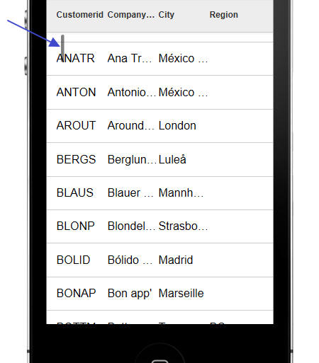
To open the scroll indicator customization dialog, click the smart field button:

Client-side Templates - Allows you to merge complex Javascript data in richly formatted templates to produce HTML that can be displayed in a UX or Grid component.
NOTE: A powerful tool is available when you working with templates. See section below: 'Using the Template Tester'
NOTE: Templates use the A5.u.template.expand() Javascript function in the Alpha Anywhere Javascript library. See section below 'The A5.u.template.expand() Function'
The basic idea of client-side templates is that you have some Javascript data - typically a Javascript object, or an array of Javascript objects, and a template (with placeholders for data) and you merge the data into the template.
For example, take the following trivial example. Say you have a Javascript object defined as follows:
var data = {Firstname: 'Fred', Lastname: 'Jones'};
And a template defined as follows:
var template = 'Hello {Firstname} {Lastname}';
When you merge the data into the template, you will get a string that looks like this:
Hello Fred Jones
Technical Note: The syntax for the template is identical to the syntax for free-form templates in the List control and for individual columns in a columnar List control.
Of course, in a real application the template will likely also include HTML markup. For example:
var template = 'Hello {Firstname} <span class="class1">{Lastname}</span>';
Array Data
The data for the template can be an array of objects, in which case the template will be expanded for each object in the array.
For example:
var data = [
{Firstname: 'Fred', Lastname: 'Jones'},
{Firstname: 'John', Lastname: 'Smith'},
{Firstname: 'Sally', Lastname: 'Rome'}
];
Using the same template as above, this will produce this output:
Hello Fred Jones
Hello John Smith
Hello Sally Rome
Object Data
The data object can include sub-objects. For example
var data = {Firstname: 'Fred', Lastname: 'Jones', Address: { Street: '123 Main St', City: 'Boston', State: 'Ma' }};
The template to consume this data could then be defined as follows:
var template = 'Hello {Firstname} from {Address.Street} in {Address.City}';
Alternatively, the template could be defined as follows:
var template = 'Hello {Firstname} from {Address} {Street} in {City} {/Address}';
Notice that the template includes {Address} and {/Address}. Inside the {Address} block, the placeholders do not need to be fully qualified. You can use {Street}, rather than {Address.Street}
The {Address} placeholder is referred to as a 'scope' placeholder.
Both of these templates will produce the same output:
Hello Fred from 123 Main St in Boston
Array Data and Object Data Combined
In the Array Data example above, the data was in the form of a Javascript array. In many cases it will be preferable have the data as an object. So, instead of specifying the data for the template as:
var data = [
{Firstname: 'Fred', Lastname: 'Jones'},
{Firstname: 'John', Lastname: 'Smith'},
{Firstname: 'Sally', Lastname: 'Rome'}
]
You could specify it as:
var data = {
Customers: [
{Firstname: 'Fred', Lastname: 'Jones'},
{Firstname: 'John', Lastname: 'Smith'},
{Firstname: 'Sally', Lastname: 'Rome'}
]
}
The template to consume this data could then be defined as:
var arr = [];
arr.push('{Customers}');
arr.push('Hello {Firstname} {Lastname}');
arr.push('{/Customers}');
var template = arr.join('\n');
NOTE: The template is created by pushing individual lines into a Javascript array and then joining the array. This is simply a convenient technique for creating long strings in Javascript.
This template will produce this output:
Hello Fred Jones
Hello John Smith
Hello Sally Rome
Notice that since the {Firstname} and {Lastname} placeholders are nested inside the {Customer}...{/Customer} scope placeholders, it is not necessary to use fully qualified placecholders (e.g. {Customer.Firstname}).
The benefit of placing your array as a property of an object, rather than at the top level, is that you can then use the {*header} and {*footer} constructs, and you can compute summary information (such as the number of items in the array, an average value of a field in the array, etc).
Client-side Template Syntax
There are a rich set of template directives that make templates both extremely powerful and also easy to use.
{scope} Placeholders
If the data passed to the template expand function contains nested objects, or arrays, you can use special {scope} placeholders, where scope is the name of nested object or array.
For example, consider the following simple data object:
{name: 'John Smith', address: {street: '1 Main', city: 'Boston'}}
The template to print this could be:
{name}
{address.street}
{address.city}
or more conveniently, a {scope} variable could be used:
{name}
{address}
{street}
{city}
{/address}
The {scope} variable acts like an 'with' statement in Xbasic.
Within the {scope}, it is not necessary to fully qualify the placeholder names.
In the case where the data contains a nested array, the {scope} variable indicates that the template should loop over the rows in the array.
For example, consider this data object:
[
{name: 'John Smith', children: [{name: 'Griffin'}, {name: 'Callie'}]},
{name: 'Toby Mohan, children: [{name: 'Kyle'}, {name: 'Katy', name: 'Luke'}]}
]
And the following template:
{name}<br>
<ul>
{children}
<li>{name}</li>
{/children}<br>
</ul>
Which will produce this output:
{[value]} Placeholder
The {[value]} Placeholder is a special placeholder to use when looping over arrays of values, rather than arrays of objects.
In the previous example, the data was specified as:
[
{name: 'John Smith', children: [{name: 'Griffin'}, {name: 'Callie'}]},
{name: 'Toby Mohan, children: [{name: 'Kyle'}, {name: 'Katy', name: 'Luke'}]}
]
The nested array is an array of objects.
However, the data could have been specified as:
[
{name: 'John Smith', children: 'Griffin','Callie'] },
{name: 'Toby Mohan, children: ['Kyle', 'Katy','Luke']}
]
In this case, the nested array is an array of values, not of objects.
To emit the data in the array, the template must use the special {[value]} placeholder. For example:
{name}<br>
<ul>
{children}
<li>{[value]}</li>
{/children}<br>
</ul>
NOTE: The [value] field can be followed by formatting directives, just like any other field. For example:
{[value]:number('$#,###.00')}
Missing Data - Alternative Text - The || Directive
In some cases the data you pass in to the template expander will have missing data. For example, consider the following data object:
{
employees: [
{firstname: 'Fred', lastname: 'Smith', city: 'Boston'},
{firstname: 'Laura', lastname: 'Linneker'}
]
}
The 'city' property has been specified for the first object in the 'employees' array, but not the second.
{employees}
Employee name: <b>{firstname} {lastname}</b> City: {city||Not available}<br>
{/employees}
The text to display for a missing value is specified in the placeholder after a || delimiter. In the template shown above, the missing text for the {City} property has been specified as 'Not available'.
The above template will render as follows
Employee name: Fred Smith City: Boston
Employee name: Laura Linneker City: Not available
NOTE: The missing data directive can be combined with formatting directives. For example: {price:number('#.00')||N/A}
Headers and Footer - {*header} / {*footer}
Headers and Footer can be used if the data object you pass into to the template expander contains array data.
For example, assume the data object looks like this:
{
employees: [
{firstname: 'Fred', lastname: 'Smith'},
{firstname: 'Laura', lastname: 'Linneker'}
]
}
And the template looks like this:
{employees}
{*header}
This is the header - it prints before the first item in the array.<br>
{/*header}
Employee name: <b>{firstname} {lastname}</b><br>
{*footer}
This is the footer - it prints after the last item in the array
{/*footer}
{/employees}
The merged data will look like this:
This is the header - it prints before the first item in the array.
Employee name: Fred Smith
Employee name: Laura Linneker
This is the footer - it prints after the last item in the array
Empty Arrays - Alternative Text - {*empty}
If an array does not contain any entries you can specify alternative text to display.
For example, consider the following sample data:
{
employees: [
{firstname: 'Fred', lastname: 'Smith', skills: [ {name: 'Javascript'},{name: 'CSS'}]},
{firstname: 'Laura', lastname: 'Linneker', skills: [{name: 'Xbasic'}]},
{firstname: 'Junior', lastname: 'Programmer', skills: [] }
]
}
Notice that only the last array instances does not have any rows in the skills array.
The template might be defined as follows:
{employees}
Employee name: <b>{firstname} {lastname}</b><br>
<div style="border:solid 1px green; margin-left:50px;">
{skills}
{*empty}
No skills yet
{/*empty}
Skill Name: {name}<br>
{*footer}
<i>Count of skills: {@countSkills}</i>
{/*footer}
{/skills}
</div>
{/employees}
The Javascript function for the countSkills function (called by the {@countSkills} directive) is:
function countSkills(data,context) {
return data[context].length;
}
The merged data looks like this:
Conditional Sections - {*if logicalExpression}, (*endif}
Templates can include conditional sections. Conditional sections are defined using the following template commands:
where logicalExpression is any Javascript expression that evaluates to a true/false value.
The logicalExpression can refer to data in the current 'row' of data.
For example, consider the following data:
{
employees: [
{firstname: 'Fred', lastname: 'Smith', state: 'MA'},
{firstname: 'Laura', lastname: 'Linneker', state: 'CA'},
{firstname: 'Junior', lastname: 'Programmer', state: 'MA'},
{firstname: 'Bill', lastname: 'Lindsey', state: 'NY'}
]
}
And the following template:
{employees}
Employee name: {[countOneBased]} <b>{firstname} {lastname}</b><br>
<div style="border: solid 1px blue; margin-left:20px; margin-bottom: 10px;">
{*if state=='MA'}
Employee is based in MA
{*elseif state=='CA'}
Employee is based in CA
{*else}
Employee is not based in MA or CA
{*endif}<br>
</div>
{/employees}
The merged data looks like this:
Formatting Directives
You can include formatting directives in the template placeholder to format numeric values and strings, and to format date values.
To format a numeric value, use the :number(formattingDefinition) directive in your placeholder.
For example, assume you have a field called Price, which contains this value: 123456.345.
You might define the template to emit this field as follows:
{Price:number('$#,###.00')}
This will result in the following output:
$123,456.35
You can also use the :number() directive to merge strings into templates. For example,, assume that you have a field called Phone, which contains 6715551234.
The placeholder for this field in your template could be defined as:
{Phone:number('=(###) ###-####')}
This will result in the following output:
(617) 555-1234
To format a date value, use the :date(formattingDefinition) directive in your placeholder.
You can use the following symbols in the formattingDirective.
You can also use the :uppercase and :lowercase directives to force string values to upper or lower case.
For example:
{name:uppercase}
{name:lowercase}
NOTE: The missing data directive can be combined with formatting directives. For example: {price:number('#.00')||N/A}
Expressions - {expression}
The placeholders in a template can be arbitrary Javascript expressions.
For example, assume that you have the following data and template:
{product: 'Book', qty: 4, price: 23}
Template:
Product: {product.toUpperCase()} - Price: {price}, Quantity: {qty} - Total: {price * total:number('$#,###.00')}
Result:
BOOK - Price 23, Quantity: 4 - Total $92.00
Functions - {@JavascriptFunctionName}
Your template can include calls to Javascript functions that compute values based on data in the current 'row'. To call a function you use the {@JavascriptFunctionName} placeholder in your template, where JavascriptFunctionName is the name of the Javascript function that you want to call.
The value returned by the function is emitted for the placeholder.
The Javascript function takes a single parameter, data, which allows you to reference data from the current row.
Consider the following simple data object:
{firstname: 'John', lastname: 'Smith'}
And the following template:
Hello {@fullname}
The fullname Javascript function might be defined as:
function fullname(data) {
return data.firstname + ' ' + data.lastname.toUpperCase();
}
The template result for the above data, template and Javascript function will be:
Hello John SMITH
Functions can also be used to compute summary data. For example, assume that the data object you define includes an array of data. You might want to output summary data that includes (say) the count of the number of rows in the array and the total of one of the fields in the array.
Consider the following sample data object:
{
customer: [
{name: 'Smith', amountDue: 345.34},
{name: 'Jones', amountDue: 35.43},
{name: 'King', amountDue: 45.14}
]
}
And the following template:
{customer}
{name} - {amountDue}<br>
{*footer}
Total amount due: {@amountDue} from {@count} customers.
{/*footer}
{/customer}
And the following definition for the 'amountDue' and 'count' javascript function:
function amountDue(data,scope) {
var arr = data[scope]
var tot = 0;
for(var i = 0; i < arr.length; i++) {
tot = tot + arr[i].amountDue;
}
return $u.n.round(tot,2);
}
function count(data,scope) {
return data[scope].length;
}
The above will produce this output:
Smith - 345.34
Jones - 35.43
King - 45.14
Total amount due: 425.91 from 3 customers.
In the above example, notice that the 'amountDue' and 'count' functions are in the {*footer}..{/*footer} block inside the {customer}..{/customer} scope. When the Javascript functions are called from inside a {*header} or {*footer} block the scope ('customer') is passed into the function along with the data. ('data' is the first argument, and 'scope' is the second argument).
What's in the 'data' object passed into a Javascript function depends on where the Javascript function is called from.
If a Javascript function is called from within a {*header} or {*footer} placeholder the data in the data object will be the same as if the function had been called from outside the scope. In other words, if the template has {@myfunction} after the closing {/customer} placeholder, the data passed to the 'myfunction' Javascript function will be the same as the data that would be passed to the function had it been called from inside a {*header} or {*footer} block inside the scope (e.g. {customer}...{/customer}.
On the other had, if the {@myfunction} placeholder is used anywhere within the scope (e.g. inside the {customer} ..{/customer} block), but not inside a {*header} or {*footer} block, the data object only contains data for the current array instance and the 'scope' value is blank.
The following example will help make this clear:
Data:
{
customer: [
{name: 'Smith', amountDue: 345.34},
{name: 'Jones', amountDue: 35.43},
{name: 'King', amountDue: 45.14}
]
}
Template:
{customer}
{name} - {amountDue} - {@data}<br>
{*footer}
In footer:<br>{@data}
{/*footer}
{/customer}
<br>
Outside the 'Customer' scope: {@data}
Javascript function:
function data(data,scope) {
if(scope == '') scope = 'BLANK';
var json = JSON.stringify(data,'\t');
var msg = '<div style="border: solid 1px red;"><b>scope</b>: ' + scope +
'<br><b>data</b>: ' + json + '</div>';
return msg;
}
The above produces this output:
Note that the 'data' Javascript function simply shows the data that is passed into the function (as a JSON string) and also shows the value of the 'scope' argument
The 'data' function is called in 3 different places:
As show, inside the {customer} scope, the data passed into the function is just the data for the current array instance and the 'scope' passed into the function is blank.
However, when the Javascript function is called from inside the {*footer} block, the data and scope passed into the function are the same as if the function had been called from outside the {customer} scope. In this case the data passed into the function includes all of the data in the scope.
With the above understanding of the what's passed into the Javascript function, let's re-examine the 'amountDue' and 'count' functions from the previous example. Here is the function definition again:
function amountDue(data,scope) {
var arr = data[scope]
var tot = 0;
for(var i = 0; i < arr.length; i++) {
tot = tot + arr[i].amountDue;
}
return $u.n.round(tot,2);
}
The amountDue function has been called from inside a {*footer} construct. Therefore the data passed into the function looks like this (in JSON format)
{"customer":[{"name":"Smith","amountDue":345.34},{"name":"Jones","amountDue":35.43},{"name":"King","amountDue":45.14}]}
Therefore we can get the array of data shown in the {customer} scope by using this Javascript statement:
data['customer']
However, the 'scope' variable that was also passed into the function contains 'customer', so we can get the array of data as follows:
data[scope]
Once we have the array of data, it is a simple matter of writing a Javascript loop to sum up the value in the 'amountDue' property for each row in the array.
Note that before we return the number we use the $u.n.round() function from the Alpha Anywhere Javascript library to round the result to 2 decimal places.
The 'count' function is even simpler. We simply return the length of the array.
function count(data,scope) {
return data[scope].length;
}
Here is a more complex example that shows an object with two arrays of data - 'charges' and 'payments'. Our template shows the total charges, total payments, and the net amount due (total charges - total payments)
Here is the data:
{
charges: [
{name: 'Smith', amount: 345.34},
{name: 'Jones', amount: 35.43},
{name: 'King', amount: 45.14}
],
payments: [
{name: 'Smith', amount: 123.34},
{name: 'Jones', amount: 45.45}
]
}
Here is the template:
<b>Charges</b><br>
{charges}
{name}<br>
{*footer}
Total charges: {@totaldue}
{/*footer}
{/charges}<br>
<br>
<b>Payments</b><br>
{payments}
{name}<br>
{*footer}
Total payments: {@totaldue}
{/*footer}
{/payments}<br>
<br>
Net amount due: {@netdue}
Here is the Javascript:
function totaldue(data,context) {
var tot = 0;
var arr = data[context];
for(var i = 0; i < arr.length; i++) {
tot = tot + arr[i].amount;
}
return tot.toFormat('$#,###.00');
}
function netdue(data,context) {
var arr = data['charges'];
var totDue = 0;
for(var i = 0; i < arr.length; i++) {
totDue = totDue + arr[i].amount;
}
arr = data['payments'];
var totPay = 0;
for(var i = 0; i < arr.length; i++) {
totPay = totPay + arr[i].amount;
}
var netDue = totDue - totPay;
return netDue.toFormat('$#,###.00');
}
And here is output produced by this template:
Notice in the above example that the same 'totalDue' function can be used to return both the total charges and the total payments (because in the first case the 'scope' passed into the function will be 'charges' and in the second case, the 'scope' passed into the function will be 'payments'.
The 'netDue' function that called from outside both the 'charges' and 'payments' scope gets called with the data for both arrays. This function gets the charges array using this syntax:
data['charges']
and then computes the total charges.
Then it gets the payments array, using this syntax:
data['payments']
and then computes the total payments.
Once the total charges and total payments are computed, the net amount due can be computed.
Using the [] directive to emit array instance data
When you are outside a scope that references array data, you can use a special syntax in the scope placeholder to display values from the scoped array.
For example, consider the following output from a template:
Notice that before the Employees are shown, the template shows:
Showing employees from: 'Smith' to 'Programmer'
Where 'Smith' is a value from the first row in the array, and 'Programmer' is a value from the last row in the array.
In the above example, the following template was defined:
Showing employees from: '{employees[0].lastname}' to '{employees[-1].lastname}' <br>
{employees}
{*header}
<b>Employees</b><br>
{/*header}
Employee name: {[countOneBased]} <b>{firstname} {lastname}</b><br>
<div style="border:solid 1px green; margin-left:50px;">
{skills}
{*empty}
No skills yet
{/*empty}
skillName: {[countOneBased]} {name}<br>
{*footer}
<i>Count of skills: {@countSkills}</i>
{/*footer}
{/skills}
</div>
{/employees}
Notice that outside the {employees} scope, the following template directives can be used to emit data from the employees array:
{employees[0].lastname} - 'lastname' property from the 1st array instance.
{employees[-1].lastname} - 'lastname' property from the last array instance.
Partial Templates - {*partial partialName}
Partial templates are named sub-templates. A template can reference these partial templates using the {*partial partialName} command. This is useful if a template has text that is repeated. For example, consider the following Javascript code:
//define the data
var _d = {firstname: 'Fred', lastname: 'Smith'}
//define the template
var arr = [];
arr.push('Welcome<br>');
arr.push('Hello {firstname} {lastname}<br>');
arr.push('{*partial partial1}');
var _t = arr.join('\n');
//define the settings object (template and partials)
var settings = {
template: _t,
partials: {
partial1: 'from partial1: {firstname} {lastname}<br>'
}
}
//merge the data into the template
var html = A5.u.template.expand(_d,settings);
This will produce the following output:
Welcome
Hello Fred Smith
from partial1: Fred Smith
NOTE: Several powerful new features for templates have been added in Alpha Anywhere V3. Please consult the Release Notes for additional information.
Using the Template Tester - The Template Tester is a powerful tool to help you design and test templates.
To open the Template Tester select the Tools menu when the Web Control Panel has focus and then select the 'JSON Data Template tester' command.
This will open a modeless window where you can enter test JSON data, template definitions and Javascript functions and then see the results in real-time.
NOTE: The Template Tester can also be opened from within the List control builder when you are defining a template for a column in a columnar list or you are defining a free-form template.
Watch Video - Part 1
Watch Video - Part 2
Watch Video - Part 3
Watch Video - Part 4
Watch Video - Part 5
Watch Video - Part 6
Watch Video - Part 7
Watch Video - Part 8

You can also click the 'Load Example' button to open a menu showing several different examples that illustrate different concepts.


Whenever you open the Template Tester, the text that you had last entered is automatically restored.
The A5.u.template.expand() Javascript Function - Templates are expanded using the A5.u.template.expand() Javascript function, which is part of the Alpha Anywhere Javascript library.
The syntax is
var html = A5.u.template.expand(data,settings);
Where data is a the data array or object to be merged into the template and settings defines the template (and any partial templates).
For example:
var data = {firstname: 'Fred', lastname: 'Smith'};
var template = 'Hello {firstname} {lastname}';
var settings = {
template: template,
partials: ''
}
var html = A5.u.template.expand(data,settings)
NOTE: For an example that uses partials, see 'Partial Templates - {*partial partialName}' above.
A5.u.template.parse() Function - If a template is used multiple times in a component, you can pre-parse the template so that when the template needs to be expanded you can use the pre-parsed template for improved performance.
For example, take the following Javascript:
var data = {firstname: 'Fred', lastname: 'Smith'};
var template = 'Hello {firstname} {lastname}';
var settings = {
template: template,
partials: ''
}
var html = A5.u.template.expand(data,settings)
The could be re-factored as follows:
var data = {firstname: 'Fred', lastname: 'Smith'};
var template = 'Hello {firstname} {lastname}';
var parsedTemplate = A5.u.template.parse(template);
var settings = {
template: parsedTemplate,
partials: ''
}
var html = A5.u.template.expand(data,settings)
Action Javascript - Templates - Merge data into client-side template' Action - This action allows you to define a data and a template, merge the data into the template and then set the innerHTML of a div, placeholder control, or Panel with the resulting HTML.
Watch Video
Download Component

When you open the builder, the genie shows this screen:

You can either specify static data to merge into the template, or you can specify the name of a Javascript function that will return the data to merge into the template.
Similarly, you can specify a static template, or the name of a Javascript function that will dynamically create the template.
Using Client-side Templates on the Server-side - a5_merge_JSON_into_template() Function - Because Alpha Anywhere has the ability to execute Javascript from an Xbasic script, you can actually use client-side templates in Xbasic using the a5_merge_JSON_into_template() function.
The syntax for the function is:
c Result = a5_merge_JSON_into_template(C jsonData ,C template [,C javascriptFunctions [,C partialTemplatesJSON [,C localCSS ]]])
For example:
dim data as c
data = <<%txt%
{firstname: 'Fred', lastname: 'Jones'}
%txt%
template = <<%html%
Name: {firstname} {lastname}
%html%
htmlOut = a5_merge_JSON_into_template(data,template)
showvar(htmlOut)
{grid.object}.getRowsInGrid() Method - Returns the number of rows in the current page of the grid. This is not the same as the number of rows in the Grid query.
Previously, users were using the internal ._rowsInGrid property to get the number of rows in the current page, but this value includes rows that have been deleted.
For example, say that the Grid is set to show 10 rows per page and that the refresh method is set to 'Auto' and that a minimal refresh is done after update, insert and delete operations.
If the user deletes a row from the Grid, the ._rowsInGrid property will still be 10, because the deleted row is not really deleted from the current page - it is just hidden and marked as deleted.
On the other hand, the {grid.object}.getRowsInGrid() method will return 9.
{grid.object}.getSelectedRow() Method - Returns the selected row number, or null if no row is selected.
Previously, users were using the internal ._selectedRow property to get the row number of the currently selected row. However, under some circumstances this property can return a confusing (but technically correct) value.
For example, if the refresh method on the Grid is set to 'Auto' and a minimal refresh is done after an update, insert or delete operation and the user deletes a row, the ._selectedRow property will return the row number of the row that was just deleted (which is actually correct internally, because the row that was deleted has simply been hidden in the page and it is still marked as selected).
On the other hand. the {grid.object}.getSelectedRow() method will return null, indicating that no row is currently selected.
UX Component - List Control - List Preview - Modeless - The List Builder has a 'Preview' button to do a quick preview of the List control while you are in the List builder. The Preview window is now modeless - which means you can keep it open while you are working in the List builder (and perhaps move it to a second screen if your computer has two monitors). This makes it very convenient to preview the List after every change you make.
UX Component - List Virtualization - Normally, when a List control is populated, the HTML for all of the rows in the List is rendered. If the list only has a few rows (say 200 rows), then there is no noticeable delay while the List is populated.
However, if the List has a lot of rows (say several thousand rows), then there will be a noticeable delay while the List is populated and also, a large amount of memory will be consumed by the List. On a mobile device where memory is more limited, the amount of memory consumed by the List could be a problem.
List virtualization allows you to only create HTML elements for a portion of the List - the portion that is currently visible and some additional rows above and below the currently visible portion. The number of rows that are rendered in the List is called the 'page' size.
When the user is scrolling the List and they hit a page boundary, the user can tap on a Next or Previous button (or optionally use a pull/release gesture) to populate the List with the next or previous page of data. It is important to recognize that tapping the Next or Previous button does not trigger an Ajax callback. It is simply rendering the next or previous page of data using the data that has already been loaded into the List and is in memory. Therefore, the time take to populate the next or previous page is practically instantaneous.
The advantage of virtualizing the List is that you can dramatically reduce the time taken to load large Lists and you can reduce the memory footprint of the List.
To turn on List Virtualization, set the Virtualization type property shown below to 'Dynamic'.
Watch Video
Download component
Once you do this, several additional properties will be shown

Virtualization type - Set to 'None' to turn virtualization off. Set to 'Dynamic' to turn virtualization on.
Size - The size property defines the 'page' size - the number of rows of data that should be rendered. This should typically be a multiple of the number of rows in the viewport. For example, say that your List can display 20 rows of data at a time, you might set the size to (say) 100 so that the user can scroll a fair amount before hitting the page boundary.
When you reach a page boundary (either on top or bottom of the page), there are 'Next' and 'Previous' buttons to get the next logical 'page' of data. The user can either tap on the Next/Previous button, or use a pull/release action to fetch the next page of data.
Max size - This is an advanced optional setting that can be used to specify a type of 'hybrid' virtualization. By default, this property is set to 0, which means that the number of rows that the List renders is always equal to the 'page' size. When you hit a page boundary, the current page is memory is replaced by the next page that is loaded.
However, if you set the Max size to -1 (which indicates that the max size is equal to the number of rows in the List), or some positive number that is greater than the size property, then when you are navigating forward and you hit a page boundary, the next page of data is automatically rendered (without requiring the user to tap the Next button). The number of rows in memory continues to grow as the user scrolls down in the List. In other words, the memory consumed by the List is initially very small (as only a single page of data are rendered) and the time taken to render the List is optimized (again, because only a single page of data are rendered), but as the user scrolls, the number of rendered rows in the List continue to grow and more memory is consumed. When the 'max size' is reached, then the user will then have to use the 'Next' button to continue to viewing additional records.
Offset - When you hit a page boundary, and click the Next/Previous button, the 'offset' indicates the number of rows from the page that is being discarded that should be included in the new view. If this number is less than the number of rows in the viewport, the List will appear to 'jump' when you navigate to a new page. It is recommended that this value be set to a minimum of the number or records that can be seen in the viewport at one time so that when the user taps the Next/Previous button, the scroll position of the List does not change. It is recommended that this number be no more than half of the 'page size'. The larger the number, the more rows the user can scroll backwards before hitting the Next/Previous buttons.
Navigate on pull - Allows the user to pull/release to navigate (in addition to tapping on the Next/Previous buttons).
Pull size - Number of pixels before the 'pull/release' gesture is recognized as a 'navigate' action.
UX Component - List Control - onBeforePopulate and onPopulate Client-side events - Two new client-side events have been added to the List control.
onBeforePopulate - fires before the List is populated. Allows you to transform the data that will be used to populate the List. The event handler gets passed in 'data' - an array with all of the data for the List.
onPopulate - fires after the List has been populated.
UX Component - List Control - Transform Data Type - Unless the List data source is a Javascript function (in which case you have complete control over the data types for each field in the List), all data in the List are string values.
Watch Video
Download component
The 'Transform data type' property allows you to transform the data type of the data in a List column to a Date, Numeric, or Logical data type.
To transform the data type, set the option in the 'Transform data type' property on the Fields pane in the List builder (as shown below).

The benefit of transforming dates into true date objects and numbers into true number objects is that you can then use the template formatting options to format date or numeric values.
For example, the template for a date field might be specfied as:
{DateOfBirth:date('MM-dd-yyyy')}
or a numeric field, the template might be specified as:
{Price:number('$# ###.00')}
NOTE: It is not strictly necessary to transform a string to a number in order to use the number format directive in the template. The sample template shown above ( {Price:number('$# ###.00')} would actually also work on a string value that contained a valid number.
Property Grids - Font Size - Property Grids are ubiquitous in the Alpha Anywhere builders. You can now change the default font size by selecting the View, Settings... menu item. Select the 'System Font's pane and then the 'Property Grid' category.

The image below shows a Property Grid with a 12 point font size:
word_i() function - A case-insensitive version of the word() function
Example
?word_i("alpha software corp",2,"SOFTWARE")
= "corp"
Web Applications - Session Object - .SaveSessionFileToFile() - A new method on the session object allows you to save a file that as previously stored as a session file to a permanent location.
The syntax is
session.saveSessionFileToFile(c Key, C DestinationFile)
Note: The session file might have been created in the first place using either of these methods:
session.saveFileToSessionFile( c fileName, c key)
session.saveDataAsFile( b data, c key)
Storage - Storage is an Alpha Anywhere abstraction for dealing with different types of storage using a standard interface. Currently, 3 type of storage are supported - Amazon S3, Azure and Disk storage.
Storage is used for storing files.
To work with Storage you will need a storage connection string to 'connect' to the storage object.
Named connection strings are typically used (in much the same way that named AlphaDAO connection strings are used when you connect to a SQL database).
To create a named storage connection string, select the Tools, Storage Connection strings menu item from the Tools menu when the Web Control Panel has focus.
This will open a dialog where you can create as many named storage connection strings as you want.
When you create or edit a named storage connection string, the Connection String dialog is shown:
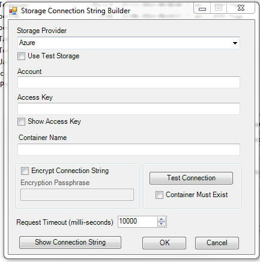
Named storage connection strings are published in the a5_application.a5i file when you publish your application.
Summary of Helper Functions for Working with Storage - Several Xbasic helper functions make it easy to work with the storage. These helper functions are written on top of the low level storage objects that are documented here.
The helper functions are:
Examples for each of these functions is shown below.
a5Storage_saveFile() - Saves a file to storage
Syntax:
L a5Storage_saveFile(C connectionString ,C filename ,C
itemName [,C mimeType [,* pResult ]] )
Where:
connectionString - Storage connection string with ::storage:: as a prefix.
filename - name of the local file to save in storage.
itemName - name of the object in storage. You can can specify a logical folder by using forward slashes in the name. For example: image/image1.jpg
mimeType - the mime type of the object. If you don't specify this property, the value can be inferred from the extension you assign to the itemName property.
pResult - an optional dot variable that you can pass in that will be populated with information about the object.
Example:
dim pr as p
flag = a5Storage_saveFile("::storage::Amazon_East","c:\images\4290.jpg","movies/4290.jpg","",pr)
?flag
= .T.
If you examine the pr dot variable that was passed into the function you will see the following properties:
hasError = .f.
timeTakenMilliseconds = 239
AbsolutePath = "https://<bucketName>.s3.amazonaws.com/movies/4290.jpg"
ContentType = "image/jpeg"
ModifiedTime = CTODT('03/15/2014 01:53:13 00 pm')
Name = "movies/4290.jpg"
size = 5880
The AbsolutePath property gives you a URL to the object. Note that in order for this URL to work you need to make sure that you have set the appropriate permissions on the storage container ('bucket' in S3 terminology).
a5Storage_saveData() - Saves data to storage
Syntax:
L a5Storage_saveData(C connectionString ,b blob ,C itemName [,C mimeType [,* pResult ]])
Same as a5Storage_saveFile(), except takes a blob as input rather than a filename.
A5Storage_getItemProperties() - Gets properties of an item in storage
Syntax:
P itemProperties = a5Storage_getItemProperties(C connectionString , C itemName)
Where:
connectionString - Storage connection string with ::storage:: as a prefix.
pResult - an optional dot variable that you can pass in that will be populated with information about the object.
Returns a dot variable with these properties
a5Storage_getItem_as_blob() - Retries data from an item in storage and put the data in a blob variable
Syntax:
b blob = a5Storage_getItem_as_blob(C connectionString ,C itemName [,* pResult ])
Where:
connectionString - Storage connection string with ::storage:: as a prefix.
pResult - an optional dot variable that you can pass in that will be populated with information about the object.
Example:
dim p3 as p
b3 = a5Storage_getItem_as_blob("::storage::Amazon_East","movies/4290.jpg",p3)
?b3.size()
?p3
'= contentType = "image/jpeg"
timeTakenMilliseconds = 297
a5Storage_getItem_as_file() - Retries data from an item in storage and create a local file
Syntax
L flag = a5Storage_getItem_as_file(C connectionString ,C itemName, C filename [,* pResult ])
Where:
connectionString - Storage connection string with ::storage:: as a prefix.
pResult - an optional dot variable that you can pass in that will be populated with information about the object.
a5Storage_listItems() - Lists items in storage
Syntax:
c List = a5Storage_listItems(C connectionString [, C searchPrefix [,* pResult ]])
Where:
connectionString - Storage connection string with ::storage:: as a prefix.
pResult - an optional dot variable that you can pass in that will be populated with information about the object.
a5Storage_deleteItem() - Delete an item from storage
Syntax:
L flag = a5Storage_deleteItem(C connectionString, C itemName [,* pResult ])
Where:
connectionString - Storage connection string with ::storage:: as a prefix.
itemName - name of item to delete
pResult - an optional dot variable that you can pass in that will be populated with information about the object.
Note: The flag value returned by this function is .f. if the connection failed, but is .t. if the item was not found in storage.
Web Applications - .A5W Pages - Debugging - You can now debug live running .A5w pages from within the HTML editor. The editor now has a new 'Live Preview' tab.
Simply insert a debug(1) statement in your Xbasic code and then switch to the 'Live Preview' tab pane.

UX Component - Pop-up Javascript Windows - Customize Title Direction - A new property has been added to set the default title direction for pop-up Javascript windows. By default, the direction is 'ltr' (left to right), but the direction can now also be set to 'rtl' (right to left - title on right and close button on left).
Grid Component and UX Component - Image and File Upload - Show Progress and Allow Cancel - The image and file upload features in the UX and Grid components have been enhanced.
The image below shows the File Upload window showing progress as a large file is uploaded.

You can now:
Display progress while a file is uploading
Allow a user to abort the upload after the upload has started
Check the maximum allowed upload size before the upload is started. (Previously the file was uploaded and then if the uploaded file exceeded the maximum allowed size an error was returned to the user).
Check the allowed file types before the upload is started. (Previously the file was uploaded and then if the uploaded file was not of the correct type, an error was returned to the user).
In order to enable this new functionality, edit your Image Upload, File Upload or File Upload - User Defined actions (defined using Action Javascript) and set the properties shown below.

In the case of the 'File Upload - User Defined' when the 'Allow multiple files' option is selected, the size check that takes place before the upload begins is the combined size of all selected files. You can set the maximum combined size property in the builder. The 'Maximum file size' property which applies to individual files will also be enforced after all of the files have been uploaded.
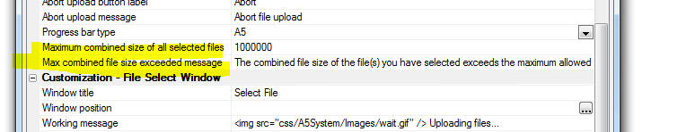
The Action Javascript builders allows you to specify the style for the progress bar. The 'A5' style blends in nicely with the component style, but for older styles, such as GrBlue, GrOlive, etc. the 'A5' style might be too subtle for your taste and you might prefer to use the 'Basic' style, wich uses a standard HTML progress element.
The image below shows how the slider is rendered using the 'A5' option (first slider - using the iOS style) and the 'Basic' option (second slider).
Grid and UX Component - HTML Editor - File and Image Upload - The File and Image upload features in the HTML editor have been enhanced.
You can now:
Display progress while a file is uploading
Allow a user to abort the upload after the upload has started
Check the maximum allowed upload size before the upload is started. (Previously there was no way to specify a maximum file size).
Check the allowed file types before the upload is started. (Previously there was no way to specify allowed file types).
UX Componet - Slider Control - Displaying Progress - A new property on the slider control has been exposed that allows you to turn off the slider handle. This is useful for displaying 'progress'. In the image below the first Slider has its handle turned off.
When you want to use the slider to show progress, you should also disable it so that the user cannot change the value by clicking on the slider. For example, enter '1=2' as the client-side Enable expression for the slider.

UX Component - Tab Control - Genie Style - Genie Button Position - When defining 'Genie Style' tab controls (shows buttons to advance through the tabs), you can now specify the button position (Above or Below the Tab Panes). Previously, the buttons were always shown below the Tab Panes.

Xdialog - Edit Combo - Case-Insensitive - The edit combo in Xdialog is case-insensitive by default. You can now force it to be case sensitive using the new %CS% flag.
For example
dim selected as c = ""
dim colors as c
colors = a5.color_enum()
ui_dlg_box("Select Color",<<%dlg%
Color combo: [%CS%.50selected^+colors];
Color edit-combo: [%CS%.50selected^=colors];
%dlg%)
UX Component - Abstract Events - downHold Information - Click, Tab, Swipe, Etc. events now have additional information in the event's 'abstractData' object that tells you if a 'downHold' event occurred. The motivation for this additional information is to allow you to add code to Click, Tap and other abstract events to prevent them from executing their standard code when a downHold abstract event fires.
For example, if you examine the 'e' object that is available inside the event handler for a click abstract event, you will see the following information (screen shot taken from Visual Studio Javascript debugger). As the screen shows, the e.abstractData object has a property called 'downHold'. In this case the property is true, indicating that the click event has fired as a consequence of the downHold event firing.

You might then write your click event handler as follows
var flagRunCode = true;
if(typeof e.abstractData != 'undefined') {
if(e.abstractData.downHold) flagRunCode = false;
}
if(flagRunCode) {
//code you want to run in a pure click event
}
Code Editors - Search and Search and Replace - Regular Expressions - The Search and Search and Replace dialogs now support the ability to use regular expression. In addition, the history feature that shows previous search and replace values is now case-sensitive.
UX Component - Internationalization - List Controls - The UX component Internationalization genie (described later in this document), now allows you to add language and text dictionary tags to column headings for List controls.
Xbasic - Dot Variables - .data() Method - The .data() method can be used to read the value of a property in a dot variable. However, the .data() method trims trailing spaces. Now you can use an option to preserve trailing spaces by adding the '.raw' suffix to the property name.
delete p
dim p as p
p.name = " "
?"a" + p.name + "b"
= "a b"
?"a" + p.data("name") + "b"
= "ab"
?"a" + p.data("name.raw") + "b"
= "a b"
UX Component - List Control - Client-side Numeric Formats - You can now specify format directives in the template for the List control. For example, the image below the template for the 'longitude' column in the List.
Notice that the placeholder in the template shows:
{longitude:number('#.0'}
The numeric format is specified in the placeholder, separated from the field name by a colon.
The builder has a link labeled 'Insert format directive' that will open a genie to help you define formatting directives.
NOTE: In the screenshot shown below the List is a columnar List. Client-side format directives can also be inserted into the template for Freeform Layout Lists.

See 'UX and Grid Component - Client-side Calculated Fields - Builder' below for more information.
Xbasic - Image Metrics Class - The new Image Metrics class gets both the pixel size and the logical size of an image.
The logical size is expressed in twips, and reflects the DPI stored with the image.
Example usage:
dim isize as Helper::ImageMetrics
isize.LoadImage("jpg",file.to_blob("C:\imgage.jpg"))
? isize
..
pixel_height = 1200
pixel_width = 1920
twip_height = 18000
twip_width = 28800
? *unit_convert(isize.twip_width,"tw","in")
= 20
? *unit_convert(isize.twip_height,"tw","in")
= 12.5
UX and Grid Component - Action Javascript - Open Grid
- The Action Javascript to "Open a grid component" now has an option to set Autorefresh on focus if the target is a TabbedUI Pane. When checked, the content in the tab pane will be refreshed automatically every time the pane gets focus.
UX and Grid Component - Masks - User Defined Formats - When you define a mask for an input control in either the UX or Grid you can select from a list of built-in masks, or you can define your own mask. Now, you can add your own entries to the list of built-in masks by creating a special text file in the executable folder. The text file must be called:
UserDefinedMasks.txt
The text in the file must be of this form:
{data=(000) 000-0000}US Phone number
{data=000-00-0000}Social Security Number
{data=00000}Zip code - 5 digit
{data=00000-0000}Zip code - 9 digit
{data=L0L 0L0}Postal Code - Canada
UX and Grid Builder - Live Preview - Caching - Previously if you made a change to CSS or linked Javascript files after previously having done a Live Preview in the builder, the changes were not always reflected because Internet Explorer was loading assets from its cache. Now, the builder is more aggressive about not caching assets during Live Preview.
UX Component - Internationalization - In order to design a UX component that adapts automatically to different languages, you typically wrap all labels in either language tags (e.g. <a5:r> ... </a5:r>) or Text Dictionary tags (<a5:t>..</a5:t>). Adding these tags to all of the text elements (such as labels, bubble help, frame labels, etc) in a large component can be quite tedious.
A new Internationalization Utility makes it easy to retrofit an existing UX component with language or text dictionary tags.
To access the utility, click the Menu button, shown below.

Then, select the Internationalization Helper Utilities... menu option.

This will open a dialog that allows you to select different options. Each option generates some Xbasic code that will set properties on your UX component.
TabbedUI - onTabbedUIInitialize Server-side Event - The TabbedUI Component now has a new server-side event that fires when the TabbedUI component is initialized.
TIP: You can use this event to simulate session variables when you are in Working Preview. For example:
if eval_valid("request.SERVER_PROTOCOL") then
if request.SERVER_PROTOCOL = "A5RES" then
session.var1 = "simulated value for var1"
end if
end if
UX Component - Get Online Status - {dialog.object}._getOnlineStatus() Method - The
{dialog.object}._getOnlineStatus() method returns true if the device has an internet connection and false if there is no connection.
NOTE: The onConnectionChange client-side event fires when the connection state changes.
NOTE: For testing how your application will behave when there is no connection, you can set your component to simulate a disconnected state by calling the {dialog.object}._setSimulatedOnlineStatus() method.
UX Component - Set {dialog.object}SimulatedOnlineStatus() Method - Allows you to force the return value from the {dialog.object}._getOnlineStatus() method to be true or false, regardless of the true state of the connection. This is useful for testing purposes when you want to test how your component behaves when it is disconnected, even though you currently have a connection.
The syntax is
{dialog.Object}._setSimulatedOnlineStatus(mode);
Where the mode flag is
UX Component - Client-side Events -
onAjaxCallbackNotAvailable Event - A new client-side
event has been defined. The onAjaxCallbackNotAvailable
event fires if the user tries to execute some Javascript
that does an Ajax callback and the device is not
currently connected to the internet.
UX Component - Client-side Events - onConnectionChange Event - The onConnectionChange event fires whenever the device's connection status changes. For example if the device was online and the connection was lost, the event will fire, and vice versa.
NOTE: If you set the simulated connection status using the {dialog.object}._setSimulatedOnlineStatus() method, the event will also fire (assuming that the _setSimulatedOnlineStatus() method changed the simulated online status.
UX Component - Ajax Callback Action - Offline Javascript - A new property can be set when defining an Ajax Callback. The 'Offline Javascript' property allows you to define Javascript to be called when the device is not connected. This differs from the 'Ajax failed Javascript' property in that if the device is not connected, the Ajax callback is not even attempted, and the Javascript specified in the 'Offline Javascript' property is executed immediately.
On the other hand, the 'Ajax failed Javascript' is only fired after the timeout period if a response is not obtained from an Ajax callback.
NOTE: You can also use the new client-side onAjaxCallbackNotAvailable event to specify Javascript to execute when a user tries to make an Ajax callback and there is no connection.
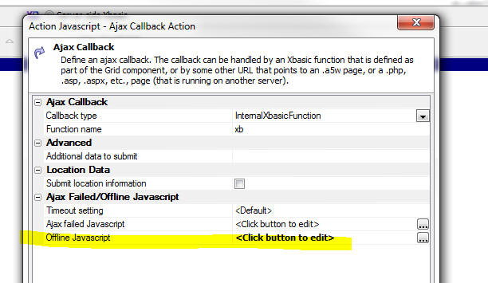
UX Component - List Control - Filter Records - Range Searches - Using Action Javascript, you can create actions that filter the records shown in a List control. Now, you can easily make 'range' searches (similar to the Search Part in a Grid).
To define a 'range' search, select the control that has the 'range start' value first. Then, check the 'Range search' checkbox. A new prompt will be shown where you can specify the name of the control that has the 'range end' value.
Range searches can also be defined for actions that search embedded grids on a UX, retrieve primary keys for a data bound UK and print embedded reports.
UX Component - Absolute Layout Containers - Save as
PDF - You can now create a button using Action Javascript to save the contents of the container to a PDF file.
Watch Video
To create a button to save an Absolute Layout container as a PDF, use the 'Absolute Layout Container - Create PDF' action in Action Javascript.
After the PDF is created you have the option of either:
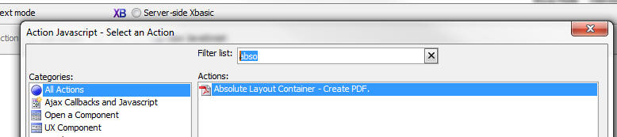
UX Component - Control Containers - Class Name and Prevent Float - When a UX component is rendered, every control in the component is wrapped in a DIV control that has a class of 'A5CWLayout'.
NOTE: If you have set the UX 'Layout type' property to be 'ControlWidth', then the class is A5container.
The A5CWLayout (or A5container) class has two important functions:
Under some circumstances a developer might want more control over the styling of the container (a DIV) that is used to enclose each control. Two new properties have been added for most of the controls in a UX:
The 'Control container class name' property allows you to specify the CSS class name that will be used in the container DIV in addition to the standard 'A5CWLayout' (or 'A5container') class.
The 'Control container prevent float' property allows you to specify if the container DIV will use the 'A5CWLayout' (or 'A5Container') class at all.
With these two new properties you have complete control over the styling of all controls on the UX.
NOTE: For controls that are in a 'NoFloat' container, the 'Control container prevent float' property is implicitly true.
UX Component - Panels - .Refresh() Method - Panel Cards and Panel Navigators now have a .refresh() method. This means that if you change the contents in the header or footer of the Panel (which might change the height of a header or footer, for example), you can now call the .refresh() method to layout out the Panel again, showing the new footer or height.
For example:
var pObj = {dialog.object}.panelGet('PANELCARD_1');
//some code to change the HTML shown in the Panel header or footer
pObj.refresh();
Xbasic - CURL - Built-in Support For CURL - CURL is a popular library for calling URLs. A genie is available to convert a CURL command that you might read in some API documentation into Xbasic. To open the CURL command to Xbasic genie, right click on whitespace in the Xbasic code editor or Interactive window. The select the CURL command to Xbasic command.
The genie open up and you can paste in a CURL command, then click the Generate Xbasic button.
The generated Xbasic instantiates the Curl object in the extension namespace.
NOTE: When using the HTTPS protocol, you must have a certificate. In the sample shown below the certificate in the CARoot folder in the Alpha Anywhere executable folder is used.

Grid Component - SQL - Search Part - Grids Based on GROUP BY Statements - If you have defined a Grid that is based on a SQL statement that has a GROUP BY clause, interpreting what the user intends when they do a search using the the Grid's Search Part can be tricky. For example, does the user intend the submitted search criteria to be used in a WHERE clause, or a HAVING clause?
Previously, if the Grid based based on a GROUP BY statement, the SQL generated by the Search Part was added to the HAVING clause.
Now, a more flexible approach is implemented.
When you define the Search Part in a Grid, for each field you add to the Search Part, you can define the Search Expression. The Search Expression is used in the generated SQL when the user searches on this field. If the search expression uses a summary operator (for example Sum(AmountDue) ), then a search on this field will go into the HAVING clause. On the other hand, if the Search Expression does not use a summary operator (for example, AmountDue), then a search on this field will go into the WHERE clause.
As a result of this change, you can define a Search Part in the Grid that will generate SQL statements that have both WHERE and HAVING clauses.
Grid and UX Component - Image and File Upload - Window Position - You can now set an explicit position for the file select window in these actions:

Reports - HTML Content - Base64 Encoded Embedded Images - If you have HTML content in a report and the HTML content has base64 encoded embedded images, the images will now render correctly in the printed report.
UX Component - List Control - Action Javascript - List Control Actions - Client-Side Order Expression - The genie now allows you to perform multi column sorts.
Set the 'Client-side sort mode' to Advanced and then use the smart field to define the sort definition.
You can define ascending or descending sorts and you can specify whether you want to sort on the whole field, or a subset (for example, just the first character of the field).

This gene generates Javascript that uses the .setOrder() method of the List. For example, here is how a mult-level (Customer, Country) sort would be defined:
var listObj = {dialog.object}.getControl('LIST1');
var sortObj = {'Country' : 1 , 'City' : 1};
listObj.setOrder(sortObj);
UX Component - List Control - Group Breaks - Client-Side - The List control has always had a Group Break option, but this option is a server-side group break. This means that the data that is sent from the server to the browser has the group breaks physically embedded into the List data.
Now, you can define client-side group breaks. These group breaks are inserted into the List on the client-side (after the List has been populated). Client-side group breaks offer several advantages over server-side group breaks. Namely:
NOTE: One advantage of server-side group breaks over client-side group breaks is when the List data source is based on a SQL query and you have turned on the List pagination option. In this case, summary data shown in a List header will be for all of the data in that group, not just the records that are currently visible in the List.
In the image below, the List has two levels of grouping: Country and City. Notice that a custom style has been defined for the second level group headers (showing the city name in blue, with a left padding of 50px).

Here is the same List, but this time showing some summary data in the top level group header:

To turn on client-side grouping for a List, check the 'Has client-side group breaks' property for the List as shown in the image below:

You can then click the smart field to open the 'Client-side Grouping' genie.
The genie allows you to define multiple levels of grouping.
For each group you define:

When you define the HTML for the header or footer, you can click the smart field button to open a genie. This genie has an option that makes it easy to include summary data in the header or footer. For example, in the image below, which shows the editor for the header HTML expression, the user has clicked on the 'Insert summary field' hyperlink, and the Summary Field Genie is displayed.
When you use the Summary Field genie, the generated Javascript that is inserted into the expression calls a special helper method of the List object. For example, here is the code to compute the average of the Price column:
this.groupSummary(data,'Price:N','avg')
Note: The .groupSummary() method ignores NULL values in the data.
In the example below, the average is computed and then formatted using a format string
Number(this.groupSummary(data,'Price:N','avg')).toFormat('# ##0,00')
UX Component - List Navigator - When you have a lot of records in a List, scrolling the List to the bring a section of the List into view can be tedious - especially on mobile devices where there is no vertical scroll bar. The List Navigator makes it easy to scroll a List that has group breaks. In the image below a List is shown with group breaks on the first character of the Contactname field. A List Navigator is shown on the right side of the List.
NOTE: You can only display a Navigator if the List has group breaks. It does not matter, however, if the group breaks are computed server-side or client-side.

The user can drag on the Navigator to quickly scroll the List.
The Navigator has an entry for each Group Heading.
The Navigator can be positioned on the left, right, top or bottom of the List. Positioning the Navigator on the top or bottom is generally done when the List is set to scroll horizontally.
You have complete control over the size of the Navigator (when it is not in use) and its position (relative to to the edge of the List). The size of the Navigator when it is in use (i.e. when the user is dragging on it), is automatically determined by its contents. If the size of the Navigator (when it is not in use) is not wide enough (for left/right position), or high enough (for top/bottom position) to show its full contents when the user starts to drag on it, it will dynamically resize while it is in use and then go back to the smaller size when the user stops dragging on it.
To define a Navigator for a List, check the 'Has List Navigator' property on the List Properties pane of the List Builder. Then click the smart field to open the genie.

The List Navigator builder (shown above) allows you to define a Javascript expression that determines what data are put into the Navigator. You expression can reference the special html field. The html field contains the HTML that is shown in the Group Header.
In the above screen show, the HTML expression is:
html
This means that if the Group Headers in the List contain:
A
B
C
D.....
The Navigator will also contain the exact same values.
But, if the HTML expression was:
html.toLowerCase()
The Navigator would contain:
a
b
c
d...
UX Component - List Control - Action Javascript - List Control Actions - Client-side Group Breaks - A new action has been added to the List Control Actions genie that allows you to apply client-side Group Breaks to a List. The user interface for the Genie is identical to the user interface for client-side group breaks in the List Builder. See the section 'UX Component - List Control - Group Breaks - Client-Side' for more details.
UX Component - List Control - Action Javascript - List Control Actions - Show Navigator/Hide Navigator - New actions have been added to the List Control Actions genie that allow you to show a List Navigator for any list that has group breaks and to hide a previously shown List Navigator.
UX Component - List Control - Client Side Filter and Order Expressions - You can now define a client-side filter and order for any List. The client-side filter is applied to the data when it is loaded into the List. If you have defined a server-side filter/order, the client-side filter will be applied in addition to the server side filter/order.

UX Component - Lookup Columns - You can display columns in a List where the data in the column is 'looked' up in another List, or by calling a Javascript function.
Watch Video
Download Component (You will need to change the connection string for both lists to point to the sample Northwind database).
Consider the following example. The image shows a List based on the Order Details table in the sample Northwind database. Notice that the List shows the ProductId, but not the ProductName.

It would be nice to show the Product Description in the List, as shown in the image below:
Obviously this could be done by specifying a SQL join for the List data source where the Order Detail table was joined with the Products table. However, this would mean that much more data would have to be sent over the network as every row of data in the List would include the Product Description field.
A much better approach would be to 'look up' the data on the client-side as the List was being rendered. You might create a second List based on the Products table that has the ProductId and ProductDescription fields in it.
To define a Lookup, click the smart field for the 'Lookup columns' property on the 'List Properties' pane in the List Builder.

This will open the Lookup Columns genie. You can define as many lookups as you want.
Each lookup must have a unique name. The lookup type is either 'List' or 'Function'.
A 'List' lookup will lookup the value in another List. You can Link the list to the Lookup List on one or more fields.
IMPORTANT: The List that is used as the data source must appear in the UX builder before the List that references it. For example, if the OrderDetails List lookups up values in the Products List, the Products List must appear before the OrderDetails List in the UX builder.
A 'Function' lookup will call a Javascript function that you define and return either a single value, or an object (with multiple values). Data from the current row in the List is passed into the Javascript function. You specify what data from the current row is passed into the Javascript function by setting the 'Lookup field(s)' property in the Lookup Columns builder.
If you specify more than one lookup field (for example, 'Firstname' and 'Lastname'), the lookup fields are passed into the Javascript function in an array. If there is only one lookup field, the value is passed into the Javascript function as a string. Here is an example of a very simple Javascript function that takes an array of input values:
function myLookupFunction(idValues) {
if(idValues[0] == 'John' && idValues[1] == 'Smith') return 'value1';
if(idValues[0] == 'John' && idValues[1] == 'Jones') return 'value12;
return 'Value not found'
}

Once you have defined the Lookup, the fields from the Lookup are available in the 'Available Fields' list in the List Builder.
Notice in the image above, the 'Lookup Name' was set to 'products'.
Notice in the image below the available fields include:
The 'products' prefix is derived from the 'Lookup Name'. The list of available fields includes all of the fields in the Lookup List.

UX Component - Buttons - Split Buttons - A new option on the Button control allows you to easily create 'split' buttons. A 'split' button has a 'button' part and a 'down' part. You can define different event handlers depending on which part of the button the user clicked on.
Watch Video - Part 1
Watch Video - Part 2
Watch Video - Part 3
Download components
To define a split button, set the 'Display as split button' property

In your Javascript event handler you can reference
arguments[1]
If the user clicked on the button, arguments[1] is set to 'normal'
If the user clicked on the dropdown arrow, arguments[1] is set to 'split'.
IMPORTANT: You can only reference the arguments[1] parameter if your code is in the button's 'onClick' event. If you use the abstract 'click' event, then arguments[1] is not set to 'normal' or 'split'.

A typical use case for a split button is to display a menu when the user clicks on the down arrow. The user makes a selection from the menu, the action is performed AND the button is updated to show the action the user selected. The next time the user wants to perform the same action, a single click on the button will perform the action (rather than clicking on the down arrow and having to select from the menu).
The relevant methods that the menu can use to update the text in the button are:
For example:
var btn = {dialog.object}.getControl('button1');
btn.setContent( { html : 'New Button Text', tip: 'Help for button', icon: 'mynewicon.jpg'});
In some case, when the down arrow has been pressed, you might want to open a modal window and while the window is open you might want to show the button in a 'depressed' state, For example, notice the difference in the image below compared with the image above:

To set the state of a button to depressed or normal, you can use the <buttonObject>.setState() method.
The syntax is:
<buttonObj>.setState( pointerToButtonElement, true/false);
where true indicates the button is depressed and false returns the button to its normal state.
For example, assume the button Id is 'BUTTON_1';
var bEle = {dialog.object}.getPointer('BUTTON_1');
var bObj = {dialog.object}.getControl('BUTTON_1');
bObj.setState(bEle,true);
Application Server - Security Framework - Large Applications - The time to load security framework information for large applications has been significantly improved. In a test of a large application with 5,000 pages, each of which had security settings, the the time improvement is 2 orders of magnitude. To take advantage of this change, you must republish something in your application.
If a project is published from the latest pre-release to an older application server, the older application server will report a 500 internal server error as it won't be able to read the new file. The application server should be the same build as the development program.
SQL Query Builder - Column Alias Naming - When you build a SQL query that involves multiple tables and you select a column with the same name from multiple tables, Alpha Anywhere automatically assigns an alias to the column so that it has a unique name. The alias is a numeric suffix (e.g. CustomerID1). Now, you can specify if you prefer to use a table alias in the generated column alias. To set you preference, click the Preferences hyperlink in the image shown below.
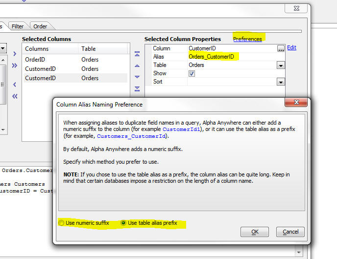
PhoneGap - Support for the PhoneGap Build service is now tightly integrated into Alpha Anywhere.
PhoneGap is an open source product that allows you to build native applications for mobile devices. PhoneGap Build is a web service offered by Adobe that allows you to create native applications that use PhoneGap without having to install the device SDK on your machine, or in the case of iPhone/iPad apps, without even having to use a Mac.
PhoneGap creates a native application with an embedded browser control. Your Alpha Anywhere mobile app runs in the embedded browser, but has access to all of the native features of the phone that are exposed by PhoneGap.
To bring up the PhoneGap genie, click the PhoneGap button on the Web Control Panel toolbar.
You can download the documentation for the PhoneGap Build genie here.
For more information on PhoneGap, go to http://phonegap.com/

Web Applications - Security Framework - SQL Databases - The Web Application Security framework allows you to store the account information for the users and groups in your security framework in either .dbf tables or a SQL database. Previously, configuring the Web Security Framework to use SQL tables was a manual process, described in the following document:
http://wiki.alphasoftware.com/Using+SQL+tables+in+Web+Security
Now, a new genie makes it easy to configure the Security Framework to use SQL tables for your user and groups list. The genie also make it easy for you switch a previously configured Security Framework from .dbf tables to SQL tables without loosing any data.
When you edit your Security Properties (by clicking the Web Security button when the Web Control Panel has focus), the dialog now has a new property called 'Security Table Type', as shown in the image below.
If you select the 'SQL' option, then when you close the Security Settings dialog, a genie is launched (see screens below) to walk you through the process. The genie will prompt for a connection string and then will create the necessary security tables in your target SQL database.
If you are switching from .dbf security tables to SQL security tables, the genie will transfer your existing data to the SQL database.
NOTE: Remember, the genie will only be started once you close the Security Settings dialog and only if you have not previously configured security settings, or you are changing from .dbf to SQL tables. If you have previously configured your Security Settings to use SQL tables and you edit your security settings, the genie will not be started when you cloe the Security Settings dialog.
NOTE: The genie creates new tables in your SQL database. Mapping to existing tables is not supported.
TIP: If you want to change the SQL database in which your account information is stored you should first convert to use .dbf tables. That will import all of your existing account information into .dbf tables. The convert back to SQL. This will then export the data in the temporary .dbf tables to the new target SQL database.
After you click the OK button to close the Security Settings dialog, the Web Security Tables Upsize Genie is started.


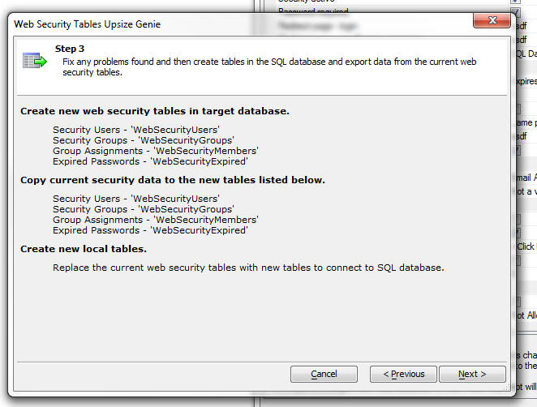
AlphaDAO - <connection>.ListTables() Method - Limit Tables - The .ListTables() method is now limited to 1,000 table names. This change was made because a user had a database that has over 1,000,000 tables and returning the names of all tables in the database in this case is obviously impractical.
AlphaDAO - ODBC Connection String - DSN Less Connections - You can now create ODBC connections that do not use a DSN.
At the Data Source Name prompt in the Connection String builder, select <None> from the list.

When bypassing the DSN, you must provide the driver name by adding Driver='' as an additional parameter:
Example:
Driver='{Microsoft Paradox Driver (*.db )}'
For the generic ODBC API Alpha Anywhere populates the following parameters in the ODBC connection string if the we encounter corresponding values in the Alpha Anywhere connection string:
Prompt SQL_DRIVER_NOPROMPT
NoPrompt SQL_DRIVER_PROMPT
Complete SQL_DRIVER_COMPLETE
Required SQL_DRIVER_COMPLETE_REQUIRED
See the Microsoft documentation for ODBC for a complete explanation of these options.
Here is an example of an Access connection string and the equivalent DSN-less connection string that Alpha Anywhere automatically creates behind the scenes when the first connection string is used.
Connection String using the built-in Access option in the Connection String builder:
{A5API=Access,FileName='C:\temp\Northwind.mdb',A5TraceSQL=Y}
DSN-less ODBC connection string:
{A5API='ODBC',A5Syntax='Access',A5TraceSQL=Y,Driver='{Microsoft Access Driver (*.mdb, *.accdb)}',DBQ='c:\temp\Northwind.mdb',ExtendedAnsiSQL=1,ImplicitCommitSync=Yes,UserCommitSync=Yes}
a5_show_htmlChrome() Function - Desktop Applications - Opens an Xdialog window and display HTML content using the embedded Chrome browser. Contrast with the existing a5_show_html() function that uses the IE activex control.
For example, consider the following script in a desktop application
dim html as c
html = <<%html%
<b>Hello World</b>
%html%
a5_show_htmlChrome(html)
UX and Grid Component - Styles - iOS7 and Android - New styles are included for iOS7 and Android. For Android, two styles are included - AndroidDark and AndroidLight.
IMPORTANT: If you are converting an existing component that previously used the iOS style to iOS7, AndroidDark or AndroidLight you will notice that the 'disclosure icons' on the right edge of your List controls do not render properly. Also, if your component was built using the Demo Mobile App that ships with Alpha Anywhere, the Menu List control might not render properly. Here is how to fix these two issues.
To fix the List template, edit the template and replace the disclosure icon in the template with {images.dialog.listNavSubtle} or {images.dialog.listNav}. The fixed HTML will then look like this:
<img src="{images.dialog.listNavSubtle}"
/>
To fix the Menu List, edit the Window container that contains the Menu List and check the HTML template in the Header HTML property. This property is in the Optional Window
Parts
section. Edit this template and make sure that the following HTML markup exists at the end of the template HTML:
<br style="clear:both;">
 |
 |
 |
|
 |
|
A particularly attractive feature of these new styles is the way that the icons in the style are rendered. Instead of using bitmaps for the icons, the styles use CSS Icons (also called Font Icons because the icons are all included in a special font file that is included as part of the style).
See below for more information on CSS Fonts in general and on Font-Awesome in particular. Font-Awesome is an open-source Font Icon that is now bundled with Alpha Anywhere.
UX, Grid and TabbedUI Components - CSS Icons (Icon Fonts) - Support has been added for CSS Icons (also know as Icon Fonts) - Icon fonts have become very popular, especially for mobile applications because they scale smoothly, and are smaller than bitmaps. Also, there are many libraries of icon fonts that can be used with Alpha Anywhere.
In the image below, the two icons in the buttons are both CSS Icons rendered using the Icon Fonts that come with the iOS7 style.

An icon font is just a regular font, excepting that instead of displaying characters, such as 'a', 'b', 'c', etc., the font has icons at each character position. So, assuming that the font defines a 'save' icon for character 'a', then in order to display the 'save' icon on your component, you would display the character 'a', and set its style to use the Icon Font.
Remembering that the 'save' icon corresponds to the character 'a', would be tedious, so a corresponding CSS file is defined. This CSS file has two main purposes:
For example, the CSS might define a rule called 'icon-save' that indicates what character the 'save' icon is mapped to.
When defining an image for a control (for example a button), you would indicate that the image name is:
cssIcon=icon-save
When the component is rendered the HTML markup, might look like this:
<img src="cssIcon=icon-save" />
This HTML markup is then automatically translated by Alpha Anywhere to:
<i class="icon-save"></i>
which correctly renders the icon using the appropriate character in the Icon Font.
You can also define an inline style for the CSS Icon. For example, if you define the image name as:
cssIcon=icon-save {color: blue;}
then, when this is translated automatically, the HTML becomes:
<i class="icon-save" style="color: blue;"></i>
UX, Grid and TabbedUI Components - Font-Awesome Icon Font Library - Font-Awesome is a popular open-source icon font library. Alpha Anywhere now comes with Font-Awesome pre-installed. The Font-Awesome library is installed in the CSSIcons folder in the folder where the Alpha Anywhere executable is installed.
For more information on Font-Awesome, please go to:
In order to use any icons in the Font-Awesome library, (or in any 3rd party CSS Icon Library) you must set a property in the UX, Grid or Tabbed UI builder to indicate that the library should be loaded. Click the smart field button for the CSS (Font) Icons property to open the dialog that allows you to select which CSS Icon library you want to load.

NOTE: When you close the 'Select CSS Icon Libraries to Load' dialog shown in the above image, the library files are copied from the CSSIcons folder in your executable folder to the CSS folder in your Web Project. Because the CSS Icon library files are then part of your Web Project, they will be automatically published when you publish your application.
Once you have indicated the libraries that you want to load, any time you are prompted for the name of an icon, you can select a regular bitmap, or a CSS Icon. For example, note the 'CSS Icon' option on the Image selector:

If you select the CSS Icon option you can select the icon source. If you are using a style that uses icon fonts (for example the iOS7, AndroidLight, or AndroidDark styles), the ImageSource list will show <Style> as an option.
The Image source list will always include 'Font-Awesome' since this library is bundled as part of Alpha Anywhere. But the list will also include any other libraries that you have installed. See section below on installing 3rd party CSS Icon font libraries.
To select an icon, click the Select button to open the genie:

The genie allows you to easily filter the list to quickly find a particular icon. You can specify the size of the icon using the dropdown 'Size' selector. If you select 'Custom' , then you can use the slider to select any size you want.
As you can see in the image below the icons scale smoothly, even when displayed at a large size - 127px in the image below.

You can also specify the color, CSS classes or in-line style to apply visual effects to the icon. For example:
(In the example below, the style for the Icon has been set to:
border: solid 3px; border-radius: 20px; padding: 4px;
)

CSS Icon Libraries - Installing 3rd Party Libraries - There are many sites on the web that supply Icon fonts and the accompanying CSS file to load and select icons from the font.
You can generally use any of these third party libraries as long as the accompanying CSS file for the library uses the convention of displaying the icon use the HTML <i> tag.
For example, to display the 'heart' image from the Font-Awesome library, the HTML markup is:
<i class="fa fa-heart"></i>
If the library you want to install uses the same conventions, then it can be used in Alpha Anywhere.
To install a 3rd party CSS Icon library, simply copy the folder that contains the CSS and font files for the library into the CSSIcons folder in the Alpha Anywhere executable folder (development version, not Application Server), and then 'install' the font (so that it can be used in Working Preview). See below for information on 'installing' fonts.
A popular source of icon fonts is http://www.fontello.com/
This site allows you to select icons from a menu of available icons and it then builds a custom icon font which you can download. After you download the files, just copy the folder into the CSSIcons folder in your executable folder.
Watch Video - Installing a 3rd Party CSS Icon Library
Registering the Font For Use in Working Preview
Icon fonts are loaded dynamically by the CSS file when you are in Live Preview or running your published application. However, when you are in Working Preview, in order to see the icons in the icon font, you must have previously 'installed' the font. Installing a font is easy. Just open the folder for the CSS Icon library. Look for a file with a .ttf (true-type font) extension (it will often be in a sub-folder called 'Fonts') and double-click on the .ttf file. Windows will bring up a dialog that has an Install Font button. Click this button. It will install the font so that it can be used when you are in Working Preview.
UX Component - List Control - Menu Lists - A common pattern in mobile applications is to use a List control as the menu. This list control is then displayed in a Panel Window that animates in from the Left side of the screen. Icons are typically displayed for each menu choice. The CSS Icons are ideal for these types of icons.
A new pre-defined control is available in the Defined Controls section of the toolbox.

TIP: If you are building a mobile application, rather than using the pre-defined List Menu, you might find the pre-defined SplitView examples more helpful. These are available by selecting 'QuickPanels' from the 'Panels' category in the UX Toolbox on the left of the UX builder. See 'New SplitView Examples' below for more information.
Selecting this option will produce a List control like this:

If you edit the List properties for the above List, you will notice that the control type for the icon field has been set to CSSIcon. See topic UX Component - List Control - Using CSS Icons below for more information.
UX Component - List Control - Using CSS Icons - You can now easily use CSS Icons in a List. A new Control type property is available on the Fields tab of the List Builder.
In the image below, the control type for the Image column has been set to CSSIcon.
The data in this List's Data Source could be something like this (using CSS Icons from the Font-Awesome library in this case):
MenuName|Image|Action
Menu One|cssIcon=fa fa-heart fa-2x|action1
Menu Two|cssIcon=fa fa-music fa-2x|action2
Notice that in the 'Image' column, the name of the CSS Icon is specified (including the cssIcon= prefix).
You can also use in-line styles or your own classes to style icons. For example, here is how the data could be represented using an in-line style for the icon in the first row and a custom class for data in the second row:
MenuName|Image|Action
Menu One|cssIcon=fa fa-heart fa-2x {color: red;}|action1
Menu Two|cssIcon=fa fa-music fa-2x myiconclass|action2

If your list uses a Free-form template, you can put a CSS Icon directly in the template using this HTML markup:
<i class="fa fa-heart fa-2x"></i>
Tip: You could just as easily add the following HTML markup to your template:
<img src="cssIcon=fa
fa-heart fa-2x" />
and at run-time Alpha Anywhere will translate the <img> tag to the correct <i> tag (because the src attribute of the <img> tag
starts with 'cssIcon')
UX Component - Mobile Applications - SplitView - Pre-Defined Quick Start Templates - A typical mobile application often includes a 'menu' panel that allows the user to navigate to different parts of the application. A common pattern is to use a 'split-view' with the menu in the left Panel and the main work area of the application in the right Panel. The menu is hidden on a phone (where screen space is limited), but shown on a tablet (where more screen space is available). If the menu is hidden, tapping on button in the PanelHeader, or swiping to the right, will reveal the menu.
In the images below, the UX is shown as it appears on a phone and a tablet. Notice that on the tablet, the menu is always visible and the button in the PanelHeader (shown when the UX is on a phone) is automatically hidden.
 |
 |
 |
|
If you want to use the pattern described here, you can select add a pre-defined set of controls to your UX component by selecting 'Quick Panels' from the UX toolbox.
Then select '{Predefined:SplitViewWithIconsAndPanels}'
UX and Grid Component - Client-side Calculated Fields - Builder - When you open the Builder to define a client-side calculated field, a new hyperlink appears on the dialog - 'Format String'. This hyperlink opens a genie that can be used to define the format string for the new FormatNumber() function which can be used in your client-side calculated fields to format numeric values.

When you click the Format String hyperlink, a genie opens to help you define your format string:
UX and Grid Component - Client-side Calculated field - FormatNumer() function - Client side calculated fields can now use a new psuedo function, formatNumber() to format a numeric field.
For example:
formatNumber(num1,"#,###.00");
The format string is very similar to the syntax used by Excel. For information on the syntax for format strings, see the section 'Number Format Strings' below.
NOTE: When you use the
formatNumber() pseudo function in a client-side expression, the function gets converted to the following Javascript:
number.toFormat('formatString')
where 'number' is any Javascript numeric variable. The Alpha Anywhere Javascript library adds a .toFormat() method to the prototype for numeric objects.
UX and Grid Component - Number Format Strings
Number format strings are used in the .toFormat() method of numeric variables and in the formatNumber() function when defining a client-side expression in a Grid or UX component.
A number format string can have multiple formats in them by using a ";" to separate multiple formats. The way a given format in the format string is selected is based on either its location in the string, or by an optional condition.
If the format string doesn't contain any conditions then the first format will be used for a positive value, the second for a negative, and the third for a zero value.
Conditions can be put into the format by making the first part of the format string contain if(expression) where n equals the value of the number. For example:
if(n>999999999)=(###) ###-####;=###-####
is a multi-format string that the will return numbers greater than 999999999 as a 10 digit phone number mask and number less than 999999999 as a 7 digit phone number mask.
You can also optionally process a number before it is formatted by adding =(expression) onto the end of a format string where n equals the value of the number. For example:
##0.00 %=(n*100)
is a format string that will first multiply the number by 100 before outputting it with the format. A value of '.254' would be returned as '25.40 %'
A number format can be either of two types: a "number" or a "mask" format.
A mask format is indicated by the first character in the format being an
= sign. The # character in the mask will be replaced with the first available digit from the number. An example of a number format for a 10 digit phone number is:
=(###) ###-####
Using the above mask, the number
8004511018
would be formatted as:
(800) 451-1018
While 'masks' are simple, 'number' formatting can be more complex. Below is a list of the special characters that can be used in a 'number' format string:
| Character | Description |
| # | an optional digit |
| 0 | a required digit (will be output as "0" if no value in the number for the given location) |
| _ (an underscore character) | an optional digit (will be output as " " if no value in the number for the given location) |
| * | after the decimal character will cause there to be no rounding (number if output with its full precision) |
| ] | at end of a number format (before any suffix) means round to zero (there will be no decimal value) |
| [ | with "]" means force "0" for integer places in the number (e.g. 123 formatted with #[00] would be 100) |
| < | at end of a number format (before any suffix) means round decimal up, before "]" is the round up equivalent of "[" |
| > | at end of a number format (before any suffix) means round decimal down, before "]" is the round down equivalent of "[" |
| -/- | display decimals as fractions |
After optional conditions and number processing expressions have been removed from the format string, any non-special characters at the beginning and end of the format string are placed into the prefix or suffix. If a format string does not contain multiple formats for positive and negative values, a '-' (minus sign) will be appended to the start of the result if the number is negative.
Examples
| Number | Format String | Result | Description |
| 1256.2 | # ##0,00 | 1 256.20 | use a " " to separate thousands and a "," for the decimal, round to two decimal places and force "0" for those two decimal places |
| .257 | 0.00> | 0.25 | pad the integer part with a "0" and use a "." for the decimal, round down to two decimal places. |
| 1256.2 | #,#[00] | 1,300 | clip to two integer places and use a "," as thousands separator. |
| 1256.2 | #,#>00] | 1,200 | clip to two integer places, round down, and use a "," as thousands separator. |
| 1256.2256 | #,##0.* | 1,256.2256 | use a "." for the decimal and a "," for the thousands separator, don't round the decimal. |
| 1.256 | 0.##> and -/- | 1 and 1/4 | round down to two decimal places and render the decimal as a fraction in the suffix |
| 1256.2 | $#,##0.00;$ (#,##0.00);------ | $1,256.20 | multiple format strings for positive, negative and zero value. The thousands separator is "," and the decimal character is ".". Number if rounded to 2 places. Negative value is enclosed in parentheses. Zero value is output as "------" |
| 4
3 1 |
if(n>=4)# (Good);if(n>=2) # (Average);# (Bad) | (Good)
(Average) (Bad) |
render the number with a custom suffix based on a condition. For example, if the number if 4, the output value is (Good). If the number if 1, the output value is (Bad)
|
| 1256.2 | #[0] | 1260 | round to 10, integer only |
| 1256.2 | #[00] | 1300 | round to 100 |
| 1256.2 | #[000] | 1000 | round to 1000 |
UX Component - Ajax Callback - Timeout Setting - You can now specify an explicit value for the Ajax callback timeout. This is the amount of time to wait (in milliseconds) for the response from the Ajax callback. If the response is not received within the specified the, the callback is considered to have failed and the 'onAjaxCallbackFailed' event is fired and any code defined in the optional 'Ajax failed Javascript' property is executed.
Previously, the timeout setting used the default value set by the browser.
If you set the property value in the dialog shown below to <Default>, then a default value for the component is used. This default can be defined by adding code like this to the UX component's 'onRenderComplete' client-side event:
{dialog.object}.ajaxCallbackTimeout = 1000;
If you set the property value to 0, the default value as defined by the browser is used.
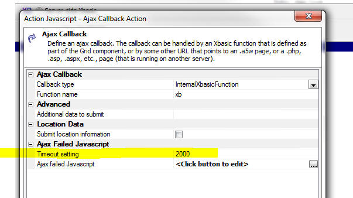
UX Component - Action Javascript - Ajax Callbacks - Cross-Domain - Because of security issues, browsers typically enforce a policy that requires that the page that responds to an Ajax callback must be loaded from the same domain that the original page was loaded. This does not represent a problem for typical Ajax callbacks that are handled by Xbasic code on the server.
However in cases where you want to call a web service directly from the client (without first going to the Alpha server), it does represent a problem.
Consider for example the following scenario:
Say you have a button on the UX and you want to make a call to the Apple iTunes store to retrieve information about a book.
The URL for this web service (including the query string for the particular book you are interested in) is as follows:
http://itunes.apple.com/lookup?isbn=9780316069359
The domain for this URL is obviously not the same as the domain from which the UX component was loaded in the first place.
There are two ways in which you could call this web service:
Clearly, the second approach is more desirable as it avoids hitting the Alpha server at all.
However, in order to implement the second approach you need to perform a cross-domain Ajax callback.
The new 'Ajax Callback - Cross Domain' action in Action Javascript allows you to perform cross-domain Ajax callbacks.
TECHNICAL NOTE: The Ajax Callback - Cross Domain action is built on top of jQuery. You must load jQuery core for this method to work. See the Web Project Properties dialog to enable jQuery.
When you define this action you specify the URL of the callback page. Any parameters that you want to pass in to the web service are in the query string. When you specify the URL, you can specify an explicit value, or any Javascript expression that evaluates to the URL. This allows you to dynamically construct the URL for the callback.
You also specify the name of a Javascript function that will be called when the Ajax callback completes successfully. The function gets passed an argument that contains the data retuned by the callback.
NOTE: Unfortunately, if the callback fails, there is no way to specify an 'onFailure' function. This is a limitation of the technique used for making cross-domain callbacks.
A useful technique for seeing what data in passed to the success function is to define the following success function for your action:
function mySuccessFunction(data){
alert(JSON.stringify(data,'','\t'));
}
This function will convert the data returned by the callback into a JSON string and display it.

Watch Video - Part 1
Watch Video - Part 2
Watch Video - Part 3
UX and Grid Component - Client-side Expressions - New Round() functions - In build 1788-4225 new options were added to the $u.n.round() function in the Alpha Anywhere Javascript library. These options allowed you to specify if the rounding was:
However, when using the client-side expression builder, there was no way to specify which option you wanted to use when you used the round() function.
Now, these new functions can be used in your client-size expressions:
HTML Reports - Export to Excel, Word or PDF - beforeHTMLReportExport event - A new client-side event has been added to the UX, Grid and Tabbed UI components. This event is fired when an HTML report is displayed and the user clicks one of the buttons on the report toolbar to export the HTML report to PDF, Word, Excel or Text mode. The main motivation for this event is to allow the developer to put up a custom wait dialog. The afterAjaxComplete event can be used to dismiss the custom wait dialog.
UX Component - List Control - Buttons and Hyperlinks - Set Focus Property - Buttons and Hyperlink controls now have a new property called 'Set Focus'. By default, when you click on a button or hyperlink in a List row, the row that contains the button or hyperlink does not automatically get selected. Now, if you check the 'Set Focus' property, when you click the button or hyperlink, the corresponding row is also selected.
Grid Component - Edit-Combo and Auto-Suggest Controls - NotInList Event - Added support for the NotInList event for edit-combo and auto-suggest controls in Grids. This event fires when the user enters a value that is not in the list of choices. The typical use case for this event is to write code to add the value that the user entered to the table that contains the choices so that in future, the value that was entered can be presented in the pick list.
UX Component - Javascript Controls - 'Initialized' property - All Javascript controls on a UX (for example, List, SpinList, ButtonList, Switch, etc.) now have a new 'initialized' property. Consider the following example that explains why this property is useful:
Assume you have a List control and you have unchecked the 'Allow Null selection' property. This means that when the List is rendered, the first row in the List will be automatically selected and the onSelect event of the List will fire.
Assume that in the onSelect event you reference some property of the List that does not yet exists because the List has not yet been fully initialized. Your code will generate a Javascript error. Using the new 'initialized' property, you can write your onSelect event as:
if(this.initialized) {
//your onSelect event code goes here
}
hmac_hash() Function - The hmac_hash() function is primarily for internal use in situations where OAuth authentication is used. The function is exposed to Xbasic as it might be useful to developers.
?hmac_hash("alpha anywhere","secret","HMACSHA1",.F.)
Grid and UX Component - .runAction() Method - Javascript Actions - Passing in an Object Reference - The .runAction() method now takes an optional second argument which is a pointer to an element on the page. The use case for the parameter is described below.
Assume you used Action Javascript for a button to open a window that was positioned relative to the button. If you examine the generated Javascript code, you will see that the Javascript in the button's onClick event passes in 'this' - a reference to the button. Therefore the windows can be positioned relative to the button.
However, if you define the exact same action as a Javascript Action, and then try to invoke the Javascript Action from a button (using the .runAction() method in the button's onClick event), you will get a Javascript error because the code that tries to position the window does not have any reference to the button.
Now, by passing in a reference to the button when the .runAction() method is called, the window can be positioned.
For example
{dialog.object}.runAction('myaction',this)
*property_filter() Function - Takes a .dot variable and filters out certain properties. The 'filter' specification is a cr-lf delimited string of directives that can include wildcard characters and a leading - sign to indicate that a property should be removed.
For example consider the following .dot variable:
dim prop.firstname as c
dim prop.lastname as c
dim prop.company as c
dim prop.age as n
'this filter selects the properties 'firstname' and 'age'
dim filter as c
filter = <<%str%
firstname
age
%str%
prop = *property_filter(prop,filter)
?prop
= age = 0
firstname = ""
'this filter removes the 'firstname' property, selects all properties
'that end in 'name' and all properties that start with 'comp'
filter = <<%str%
-firstname
*name
comp*
%str%
prop = *property_filter(prop,filter
?prop
= company = ""
lastname = ""
property_from_url() Function - Parses a URL query string into an Xbasic .dot variable.
Syntax:
property_from_url( prop as p,url as c)
Example:
dim p2 as p
property_from_url(p2,"firstname=john&lastname=smith&company=ACME%20Industries")
? p2
= company = "ACME Industries"
firstname = "john"
lastname = "smith"
property_to_url() Function - Converts a .dot variable to a URL.
Syntax:
c Url = property_to_url(prop as p[,options as c])
options - 'S' - sorts the parameters so that they conform to the oauth specification for a normalized request. See http://oauth.net/core/1.0/#anchor14
Example:
dim prop.firstname as c = "john"
dim prop.lastname as c = "smith"
dim prop.company as c = "ACME Industries"
? property_to_url(prop)
= "firstname=john&lastname=smith&company=ACME%20Industries"
? property_to_url(prop,"S")
= "company=ACME%20Industries&firstname=john&lastname=smith"
AlphaDAO - Oracle - Executing SQL Commands - CRLF Characters - If you have an Xbasic script that executes some SQL commands against an Oracle backend, be sure that your SQL commands do not have cr-lf characters in the command string. You should replace all cr-lf characters with lf charactrs.
For example, consider the following Oracle SQL code to be executed
dim cmd as c
cmd = <<%str%
DECLARE
prdcode gm_test_t.prd_code%type;
method gm_test_t.method%type;
histid gm_test_t.history_id%type;
BEGIN
prdcode := :prdcode;
method := :method;
histid := :historyid;
insert into gm_test_t (prd_code,method,descr, history_id)
select prdcode, method,descr, gm_test_s.nextval from gm_test_t a where a.prd_code = prdcode and a.method=method and a.history_id = histid;
COMMIT;
EXCEPTION
WHEN OTHERS THEN
raise_application_error(-20000,sqlerrm);
END;
%str%
dim cn as sql::connetion
cn.open("::name::myoracleconnection")
dim args as sql::arguments
'set argument values
cn.execute(cmd,args)
The above will fail because the SQL commands have cr-lf characters in the code.
Instead, change the code to this:
dim cn as sql::connetion
cn.open("::name::myoracleconnection")
dim args as sql::arguments
'set argument values
cmd = stritran(cmd,crlf(),chr(10))
cn.execute(cmd,args)
UX Component - List Control - Toggle Display of List or Map - A common pattern when designing a UX component is to wrap certain controls in a container, set the inline style of the container to display: none; and then have some button or event that will display the container when necessary - using the Toggle Display action in Action Javascript.
If the container has a List control that uses Columnar layout, or a Map control, then when the container is shown, the List or Map will not be rendered properly. This is because when the UX is initially rendered, the Map or List control is not shown and so these controls do not know how to size themselves correctly.
This issue is easily solved by using the onShowComplete Javascript event in the Toggle Display Action Script builder. You can use this event to refresh the List or Map.

For example, assume that the Id of a List control in the container is 'LIST1' and a Map control is 'MAP1'. Here is the Javascript to refresh the controls:
{dialog.object}.getControl('LIST1').refresh();
{dialog.object}.getControl('MAP1').refresh();
Xdialog - Chrome Control - Loading HTML in Chrome OnReady Event - Consider the following simple Xdialog that displays some HTML in Chrome control:
dim cr as helper::Chrome
cr.html = "HTML to show"
dim dlg_title as c
dlg_title = "Chrome Xdialog"
ui_dlg_box(dlg_title,<<%dlg%
{chrome=100,20cr}
%dlg%,<<%code%
%code%)
This Xdialog will render as follows:

In some cases, however, because of timing problems, the Xdialog window will open, but the Chrome control will not be properly populated.
The Xdialog can be restructured so that the HTML is only loaded into the Chrome control when its OnReady event fires:
dim html as c
html = <<%html%
<p>HTML - loaded in the Chrome onReady event</p>
%html%
dim cr as helper::Chrome
cr.html = "Dummy Content"
dim dlg_title as c
dlg_title = "Chrome Xdialog"
cr.OnReady = "ui_dlg_event("+quote(dlg_title)+",\"chromeReady\")"
ui_dlg_box(dlg_title,<<%dlg%
{chrome=100,20cr}
%dlg%,<<%code%
if a_dlg_button = "chromeReady"
a_dlg_button = ""
cr.html = html
end if
%code%)
UX Component - SpinList Control - Getting the value for the 'Display Value' - When you define the choices with which to populate a SpinList control, you can specify a 'display value' and a 'stored value' for each value. When you read the current value in the control (using the {dialog.object}.getValue() method, or the .value property on the SpinList object itesel), you well be reading the stored value. In this tip we show you how to get the current display value:
Assume that the SpinList control id is 'spin1'
//get a pointer to the SpinList control
var s = {dialog.object}.getControl('spin1');
var v = s.value; //get the current value
var _d = s._data; //get the array of data in the SpinList
//find the index in the array where the array's 'value' property
//matches the the current value in the SpinList
var indx = {dialog.object}._findArrayProp(_d,'value',v);
var html = _d[indx].html;
alert(html);
SQL Server - Date or Date/Time Fields - Errors - Installing correct Native Client - Occasionally we received a bug report from a user reporting that they are getting an error while doing some type of SQL query involving a SQl Server date or datetime field. Invariably, the error is caused because they do not have the correct drivers for the SQL server Native Client installed.
Here are the links to the download on the Microsoft web site:
X86
Package(sqlncli.msi) - 4549 KB
X64
Package(sqlncli.msi) - 7963 KB
IA64
Package (sqlncli.msi) - 11112 KB
Reports - PDF - Acrobat Viewer - Crash - In some instances, when doing a Live Preview of a component that prints a PDF report, the Adobe Acrobat viewer might report a crash, with a dialog similar to this:
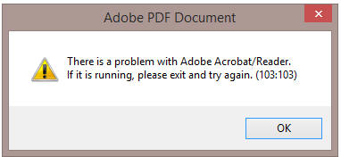
Alpha Anywhere will then display a message like this:

Research on the Adobe site indicates that this has been a somewhat
random problem in Acrobat in IE since Acrobat X. One
common suggestion from Adobe was to open Reader and go to Edit ->
Preferences -> Security (enhanced) and disable protected mode by
unchecking "Enable Protected Mode at startup"
http://www.brain-cluster.com/
HTTP and FTP Functions Not Working on Certain Machines - Some users have reported problems with the built-in FTP and HTTP functions in Xbasic. They assume that the issue is a port conflict.
In fact, the client functions are not hard-coded to a specific outbound port. They use the standard Windows API for accessing a random available port. If outbound access is being blocked, it is likely being done so by a firewall, not by a conflict with another running program. Most Windows installations have Windows Firewall configured to block outbound access by default for all applications. See
http://windows.microsoft.com/en-us/windows/communicate-through-windows-firewall#1TC=windows-7 for details on allowing the outbound access.
Grid Component - Search Part - Customizing the Search Part Toolbar - The Search Part does not allow you to customize the toolbar, as you can for the Grid Part and Detail View Part. A user wanted to put an Action Button next to the 'Search' button. Here is how you can do this.

First, define your Action Button and place it anywhere on the Grid (it does not matter where you place it because we are going to move it using Javascript).
Then add this code to the Grid's onGridRenderComplete event:
//set this to the ID of your action button
var actionButtonId = 'MYBUTTON';
//get a pointer to the 'Search Button'
var ele = $( '{Grid.ComponentName}.SEARCHBTN' );
ele = ele.parentNode;
var ele2 = ele.parentNode;
var sele = $('{Grid.ComponentName}.ACTIONBUTTON.'+actionButtonId+'.G0');
ele2.appendChild(sele);
UX and Grid Components - Javascript Date Values - Parsing Strings into Date Values - The Alpha Anywhere Javascript library has added a very useful method to the Javascript Date object to help parse strings (that represent date values) into real date objects.
The Date.formFormat() method takes two arguments - a date string and a date format string. For example
var d1 = new Date();
d1.fromFormat('01/01/2014','MM-dd-yyyy');
You can also use the Date object's .toFormat() method to format a date object as a sting.
var dString = d1.toFormat('dd-MM-yyyy');
Tab Direction on UX For Right-to-Left Languages - For languages that go from right-to-left, it is desirable to also have the tab direction go from right-to-left so that when the user hits the tab key, the control to the right of the current control is selected. This is easily done by adding this CSS to the UX component's local CSS definition.
IMPORTANT: Be sure that the Layout Mode property on your UX is set to 'ContainerWidth'
body { direction:rtl; }
.A5CWLayout { float:right; }
TIP: If you have List controls on a UX component for which the body direction has been set to 'rtl', you will need to wrap each List control in its own container and set the direction property of the container to 'ltr', or else the titles on the List will not display correctly.
Generating an UX Component Using Xbasic - a5wcb_createDialogUsingXbasic() Function - The a5wcb_createDialogUsingXbasic() function can be used to generate an UX component programmatically.
Note that for each control, a minimal set of properties is defined. You can add additional properties for each control if necessary. The Xbasic tab in the UX builder shows the available properties for each control type.
dim wp as p
DIM wp.page_fields[0] as P
with wp.page_fields[]
.controltype = "layout_directive_statictext"
.v.StaticText = "Created by Xdialog"
end with
with wp.page_fields[]
.v.variableName = "c"
.v.breakType = "None"
end with
with wp.page_fields[]
.v.variableName = "d"
.v.label = "Field D"
.v.hasWaterMark = .t.
.v.waterMark.text = "Enter name"
end with
with wp.page_fields[]
.controltype = "layout_directive_button"
.v.buttonText = "click me"
.v.javascript.onclick = "alert('click');"
end with
with wp.page_fields[]
.controltype = "layout_directive_FrameBegin"
.v.FrameTitle = "frame"
.v.Frame.ID = "FRAME_1"
.v.Frame.type = "Simple"
end with
with wp.page_fields[]
.controltype = "layout_directive_hyperlink"
.v.hyperlinkText = "this is my hyperlink"
.v.javascript.onclick = "alert('you clicked a hyperlink');"
end with
with wp.page_fields[]
.controltype = "layout_directive_image"
.v.ImageMode = "Static"
.v.javascript.onclick = "alert('click on image');"
.v.Imagename = "images/$$application.alpha.png.a5image"
end with
with wp.page_fields[] ' initialize tmpl.page_fields[8]
.controltype = "layout_directive_FrameEnd"
end with
'create the UX and call it 'genByXbasic'
a5wcb_createDialogUsingXbasic(wp,"genByXbasic",.t.)
Generating a UX Dynamically in a Web Application - In the previous tip we discuss how to generate a UX component using Xbasic. The generated component is a permanent component that appears in the Web Control Panel.
Watch Video
Download Component
However, you might have a use case that requires the dynamically created UX component at run-time. The UX component, in this case, should be created as a temporary session file. This is done by specifying a name with '__sessionFile__' as a prefix when calling the a5wcb_createDialogUsingXbasic() function.
The following sample .A5W page shows how this can be done
<%a5
'define the UX component
dim wp as p
DIM wp.page_fields[0] as P
with wp.page_fields[]
.controltype = "layout_directive_statictext"
.v.StaticText = "Created by Xdialog"
end with
with wp.page_fields[]
.v.variableName = "c"
.v.breakType = "None"
end with
with wp.page_fields[]
.v.variableName = "d"
.v.label = "Field D"
.v.hasWaterMark = .t.
.v.waterMark.text = "Enter name"
end with
with wp.page_fields[]
.controltype = "layout_directive_button"
.v.buttonText = "click me"
.v.javascript.onclick = "alert('click');"
end with
with wp.page_fields[]
.controltype = "layout_directive_FrameBegin"
.v.FrameTitle = "frame"
.v.Frame.ID = "FRAME_1"
.v.Frame.type = "Simple"
end with
with wp.page_fields[]
.controltype = "layout_directive_hyperlink"
.v.hyperlinkText = "this is my hyperlink"
.v.javascript.onclick = "alert('you clicked a hyperlink');"
end with
with wp.page_fields[]
.controltype = "layout_directive_image"
.v.ImageMode = "Static"
.v.javascript.onclick = "{grid.Object}.ajaxCallback('G','{Grid.RowNumber}:all','xb','','',{deviceOfflineFunction: function() { }});"
.v.Imagename = "images/$$application.alpha.png.a5image"
end with
with wp.page_fields[] ' initialize tmpl.page_fields[8]
.controltype = "layout_directive_FrameEnd"
end with
DIM wp.XbasicFunctionDeclarations as C = <<%code%
function xb as c (e as p)
xb = "alert('callback');"
end function
%code%
'give the component name a special name that starts with __sessionFile__
dim componentName as c
componentName = "__sessionFile__mydynamicUx"
a5wcb_createDialogUsingXbasic(wp,componentName,.f.)
Delete tmpl
DIM tmpl as P
tmpl = a5w_load_component(componentName)
'set the following to properties in tmpl
tmpl.alias = "MYALIAS"
tmpl._dialogFilename = file.filename_parse(componentName,"N")
'now run the dynamically generated component
delete x_ux1
dim x_ux1 as p
x_ux1 = a5w_run_Component(tmpx)
?x_ux1.Output.Head.JavaScript
?x_ux1.Output.Head.CSS_Link
?x_ux1.Output.Head.Title
%>
</head>
<body>
<%a5 ?x_ux1.Output.Body.Dialog2_HTML %>
</body>
</html>
Alternatively, you might want to generate the UX component dynamically on an Ajax callback. For example, the following Xbasic function in a UX component handles an Ajax callback. The function dynamically creates a UX and then sends the name of the dynamically created UX component back to the UX so that the name can be stored in a variable and used when you want to open this component.
function xb_generate as c (e as p)
dim wp as p
DIM wp.page_fields[0] as P
with wp.page_fields[]
.controltype = "layout_directive_statictext"
.v.StaticText = "Created by Xdialog"
end with
with wp.page_fields[]
.v.variableName = "c"
.v.breakType = "None"
end with
with wp.page_fields[]
.v.variableName = "d"
.v.label = "Field D"
.v.hasWaterMark = .t.
.v.waterMark.text = "Enter name"
end with
with wp.page_fields[]
.controltype = "layout_directive_button"
.v.buttonText = "click me"
.v.javascript.onclick = "alert('click');"
end with
with wp.page_fields[]
.controltype = "layout_directive_FrameBegin"
.v.FrameTitle = "frame"
.v.Frame.ID = "FRAME_1"
.v.Frame.type = "Simple"
end with
with wp.page_fields[]
.controltype = "layout_directive_hyperlink"
.v.hyperlinkText = "this is my hyperlink"
.v.javascript.onclick = "alert('you clicked a hyperlink');"
end with
with wp.page_fields[]
.controltype = "layout_directive_image"
.v.ImageMode = "Static"
.v.javascript.onclick = "{grid.Object}.ajaxCallback('G','{Grid.RowNumber}:all','xb','','',{deviceOfflineFunction: function() { }});"
.v.Imagename = "images/$$application.alpha.png.a5image"
end with
with wp.page_fields[] ' initialize tmpl.page_fields[8]
.controltype = "layout_directive_FrameEnd"
end with
DIM wp.XbasicFunctionDeclarations as C = <<%code%
function xb as c (e as p)
xb = "alert('callback');"
end function
%code%
fn = "__sessionFile__myuxonthefly"
a5wcb_createDialogUsingXbasic(wp,fn,.f.)
'generate a response to send back to the client
'the name of the dynamically generated UX will be stored
'in a variable called {dialog.object}._ux
xb_generate = "alert('done: "+js_escape(fn)+"');" + crlf()+\
"{dialog.object}._ux = '"+js_escape(fn)+"';"
end function
Now, in order to open this dynamically generated UX, you would need to make another Ajax callback. The easiest way to code this is use use Action Javascript to define an action that opens a UX component, and then convert the action to text mode. Then edit the generated code and replace this line:
go.dialog2Name = 'Name of component to open';
with this line:
go.dialog2Name = {dialog.object}._ux;
IMPORTANT: If you currently have build 1620-4172 from 21 Aug 2013 or an earlier build installed, then this is a required update.
| Xbasic - Xdialog | Using the Chrome Embeddable Browser in Xdialog | Xdialog allows users who are building desktop applications to create very powerful 'screens' to prompt for and display information to users. You can now embed Google's Chrome browser directly into your Xdialogs. This means that you can use the full power of HTML, CSS3 and Javascript to create amazing looking Xdialog screen. When you embed the Chrome control in an Xdialog you can easily respond to events in the HTML with either Javascript of Xbasic code. You can also easily send events from Xbasic to the HTML that is displayed in the embedded Chrome control.
If you have used Xdialog in your desktop applications in the past, this new feature will open up many exiting possibilities. Introduction Watch video - Part 1 Watch video - Part 2 Debugger Watch Video - Part 3 Binding events: Watch video - Part 1 Watch video - Part 2 Google Charts: Watch video Using jQuery: Watch video For extensive documentation on how to embed a Chrome control into Xdialogs see the release notes. |
UX Component - Abstract Events - Enable Expression - If the client-side enable expression was false, the click event did not fire (correct), but the down event did. This has now been changed and the down event will also not fire.
Grid Component - Image and File Upload - New Records - Form Layout - If a Grid component used a Form layout (as opposed to a Tabular layout), then image and file upload to the new record rows did not work. There was no problem when doing uploads to existing rows, or to new rows when the Grid used a Tabular layout.
UX and Tabbed UI Component - Session Timeout Warning Feature - Under certain conditions, the Session Timeout Warning for the UX and the Tabbed UI did not open at the correct time and did not show the correct time remaining. This has now been fixed and the message box will now show the actual seconds left in the session since the last request from the component.
sql_lookup() Function - As a result of a change made in build 1788 the data type returned by the sql_lookup() function was always a character value, when it should have been correctly typed (i.e. a datetime value, a numeric value, etc, depending on the data type of the column value that the function was returning).
Now, if sql_lookup() specifies a filter and returns a single field in the return expression, the return value is correctly typed. If more than one value is returned, or no filter is specified, the return value is a character string.
Grid Component - Search Part - SQL Query Using Group By - If a Grid built in V11 used a GROUP BY clause in the SQL statement, performing a search on the Grid would fail. The problem did not occur if the Grid was build in V12 and the solution was to de-select the Search Part fields and re-select them. Now, this is no longer necessary.
A5_HTML_Pretty() Function - XML - The A5_HTML_Pretty() function, which takes an HTML string and adds the correct indentation to all of the elements can now also be used to format XML. The function takes a second, optional, parameter that indicates if the input string is XML. By default, this flag is .f.
txt = http_get_page2("http://feeds.gawker.com/lifehacker/full")
txt = a5_HTML_Pretty(txt,.t.)
showvar(txt)
Xbasic - Working With XML - Working with XML in Xbasic is now even easier. The following functions have been enhanced:
In addition, the showXML() function has been enhanced.
Consider the following very simple snippet of XML.
xml = <<%txt%
<name city-name="boston">
Fred Smith
</name>
%txt%
If you view this XML using the XML viewer function (showXML()), you will see this:

You will notice that the XML has an attribute called 'city-name'. This is not a valid Xbasic variable name, so the attribute has to be renamed (to 'city_name'). In order that the *property_to_xml() function can get back to the same XML that was originally parsed, a list of all of the attribute names that were changed is kept in the special __A5_Xml_Manifest property.

Also, you will notice that in the XML snippet, the 'name' element has a value and also it has attributes. The attribute values are shown as properties and the element value is shown using the special property name '__A5_elementContent'.
Here is how you can parse the above XML into an Xbasic dot variable:
delete p
dim p as p
'set the optional 3rd flag to .t. to use the special properties
*property_from_xml(xml,p,.t.)
'convert the dot variable into a script so we can 'see' what's in the variable
?*variable_to_script(p)
= DIM name as P
DIM name.city_name as C = "boston"
DIM name.__A5_elementContent as C = <<%str%
Fred Smith
%str%
DIM __A5_Xml_Manifest as C = <<%str%
@Mapping:
city_name=city-name%str%
'now, go back to XML
?*property_to_xml(p,"")
= <name city-name="boston">
Fred Smith
</name>
Notice how this is a perfect 'round-trip'! The generated XML is the same as the initial XML that was parsed.
Now, try the above exercise without using the new optional flag on the *property_to_xml() function
delete p
dim p as p
*property_from_xml(xml,p,.f.)
'convert the dot variable into a script so we can 'see' what's in the variable
?*variable_to_script(p)
= DIM name as P
DIM name.city_name as C = "boston"
Notice how the Xbasic dot variable only has the value of the attribute. It does NOT have the value of the element!
*HTML_GET_ATTRIBUTE() Function - Quick way to extract an attribute value from some HTML markup.
The syntax is:
C result = *HTML_GET_ATTRIBUTE( markup as c, attributePattern as c)
Consider the following HTML markup:
dim html as c
html = <<%html%
<img
id="GRID1.V.R2.PICTURE1"
onmouseover="$('bp').src=img;"
style="height: 1in; cursor: pointer;"
src="pictures/5.jpg"
title="pictures/5.jpg"
onerror="{grid.object}._executeEvent('onImageError',{element: this});" />
%html%
Say you wanted to extract the 'src' attribute from this HTML. A simple string search for the text 'src=' would be wrong because it would get confused by the code for the onmouseover event handler.
dim attr as c
attr = *HTML_GET_ATTRIBUTE(html,"src")
? = src="pictures/5.jpg"
AlphaDAO - ResultSet - Generating JSON Data - .ToJSONObjectSyntax() Method - When you use the .ToJSONObjectSyntax() method to generate JSON data from a resultset, and you set the optional ConvertToText flag to .f. (it defaults to .t.), then date and date time values in the resultset now create Javascript date objects. For example:
dim cn as sql::Connection
cn.open("::Name::_northwind")
cn.PortableSQLEnabled = .t.
cn.Execute("select first 5 orderid, orderdate from orders")
rs = cn.ResultSet
?rs.ToJSONObjectSyntax(-1,-1,.f.,.f.)
= {"orderid" : 10255, "orderdate" : new Date(1952, 11, 18, 0, 0, 0, 0)}
{"orderid" : 10249, "orderdate" : new Date(1996, 6, 5, 0, 0, 0, 0)}
{"orderid" : 10250, "orderdate" : new Date(1996, 6, 8, 0, 0, 0, 0)}
{"orderid" : 10251, "orderdate" : new Date(1996, 6, 8, 0, 0, 0, 0)}
{"orderid" : 10252, "orderdate" : new Date(1996, 6, 9, 0, 0, 0, 0)}
Xdialog - Chrome Browser Control - Xdialog now allows you to embed the Chrome browser control. This allows you to build some amazing desktop applications using the full power of HTML, CSS3 and Javascript. This is a really fantastic new feature and all developers of desktop applications are strongly encouraged to check it out!
Previously, Alpha Anywhere allowed you to use the Internet Explorer ActiveX control in an Xdialog. While this is still possible, using the Chrome control is now so much easier and more powerful, that it is hard to imagine a scenario under which using the Internet Explorer ActiveX control would be preferable to using the Chrome control.
NOTE: With Internet Explore, some of Xdialogs that used the Internet Explorer ActiveX control have stopped working because of changes Microsoft has made to IE in IE Version 11. Using the Chrome control instead of the IE ActiveX control circumvents this issue.
With the Chrome control hosted in an Xdialog you can:
Since the HTML loaded in the Chrome control can use open source Javascript libraries, such as jQuery, you can build really powerful Xdialogs for your desktop applications using a myriad of techniques made possible by third party libraries. (See below for information on the a5_html_page_prepare() function.)
NOTE The code for all of the examples used here is available in the sample Learning Xdialog workspace that ships with Alpha Anywhere. To get an updated version of 'Learning Xdialog' you must do a full install, not a patch install.
A simple Xdialog that uses the Chrome Control
Create a new script with this code:
dim cp as helper::Chrome
cp.html = <<%html%
<h1>Hello</h1>
<p>This is html inside an Xdialog.</p>
%html%
dim dlg_title as c
dim dlg_body as c
dlg_body = <<%dlg%
{chrome=100,20cp};
%dlg%
dim dlg_event as c
dlg_title = "Chrome in an Xdialog"
ui_dlg_box(dlg_title,dlg_body,dlg_event)
And here is the resulting Xdialog when you run the code.

In the above code, notice that a new object is declared with the
dim cp as helper::Chrome
command.
Also notice that the HTML to display in the Chrome control was set by setting the .html property.
You can either set the object's .html property if you want to specify explicit HTML to display, or you can set the .url property (if you want to show a URL - see next example).
Once the Chrome object has been declared, it can be placed in the Xdialog using this Xdialog command:
{chrome=100,20cp};
In this above example, the width of the Chrome control is set to 100 'characters' and the height to 20 'lines'.
Notice that the 'cp' in the above command is the name of the helper::Chrome object that was defined.
You can put as many Chrome objects on an Xdialog as you want. For exmaple:
dim cp1 as helper::chrome
dim cp2 as helper::chrome
....
dim cpn as helper::chrome
And then in your Xdialog body:
{chrome=100,20cp1};
{chrome=100,20cp2};
{chrome=100,20cpn};
Specifying a URL to load
dim cp as helper::Chrome
cp.url = "http://www.google.com"
dim dlg_title as c
dim dlg_body as c
dlg_body = <<%dlg%
{stretch=height,width}
{chrome=100,30cp};
%dlg%
dim dlg_event as c
dlg_title = "Chrome in an Xdialog"
ui_dlg_box(dlg_title,dlg_body,dlg_event)
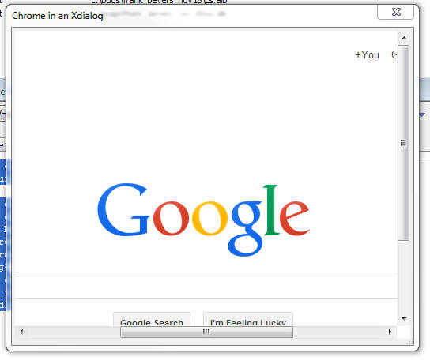
Specifying a Dynamic URL
In this next example we show how the URL property can be dynamically changed after the Xdialog has been rendered.
dim cp as helper::Chrome
cp.url = "http://www.google.com"
dim urls as c
urls = <<%txt%
http://www.google.com
http://www.bing.com
http://www.yahoo.com
%txt%
dim url as c
url = word(urls,1,crlf())
dim dlg_title as c
dim dlg_body as c
dlg_body = <<%dlg%
{startup=urlchanged}
{stretch=width}
[.160url^+urls] <Go!urlchanged>;
{stretch=height,width}
{chrome=173,60cp};
%dlg%
dim dlg_event as c
dlg_event = <<%code%
if a_dlg_button = "urlchanged" then
a_dlg_button = ""
cp.url = url
end if
%code%
dlg_title = "Chrome in an Xdialog"
ui_dlg_box(dlg_title,dlg_body,dlg_event)
The resulting Xdialog looks like this:
You can type any address into the address bar and then hit the Go button to go to the page.

Notice that in the above code, when the user clicks on the Go button the Xbasic that gets executed is:
cp.url = url
We simply set the URL of the Chrome object to the new URL and Chrome automatically navigates to the target URL.
Using Xbasic to Execute Javascript in the Chrome Control
The Chrome object exposes two methods that allows you to execute Javascript from Xbasic. These are:
<chromeObject>.executeJavascript(codetorun) - executes the Javascript asynchronously
<chromeObject>.executeJavascriptResult(codeToRun) - executes the Javascript synchronously and returns the result to Xbasic
Consider the following example of an Xdialog that is hosting the Chrome control, showing some HTML with an input control. We have to Xdialog buttons, one to set the value in the HTML input, and the other to read the value from the HTML input.
dim cp as helper::Chrome
cp.html = <<%html%
Name: <input id="name" />
%html%
dim dlg_title as c
dim dlg_body as c
dlg_body = <<%dlg%
{chrome=40,10cp};
<Set Name!setName> <Read Name!readName>;
%dlg%
dim dlg_event as c
dlg_event = <<%code%
if a_dlg_button = "setName" then
a_dlg_button = ""
dim jstorun as c
dim name as c
name = ui_get_text("Name","Enter name")
jstorun = "document.getElementById('name').value = '" + js_escape(name) + "';"
cp.ExecuteJavascript(jstorun)
else if a_dlg_button = "readName" then
a_dlg_button = ""
dim jstorun as c = "document.getElementById('name').value"
dim result as c
result = cp.ExecuteJavascriptResult(jstorun)
ui_msg_box("Notice:","Value read from the HTML is: " + result)
end if
%code%
dlg_title = "Chrome in an Xdialog"
ui_dlg_box(dlg_title,dlg_body,dlg_event)
The important thing to notice in this example is that the Javascript that gets executed here is computed by Xbasic and Xbasic is invoking the Javascript.
Using Javascript to Invoke Xbasic
In the previous example, we used Xbasic to invoke Javascript on the Chrome control. In this example, we turn it around and invoke Xbasic from Javascript.
This Xdialog has an event called 'event1' (see code in red below) and the HTML has a button. When the user clicks on the HTML button, the Xdialog event ('event1') is fired.
In order to make this work, a special Javascript function (called xDialogEvent) must be added to the HTML page. The onclick event for the button is then set to:
xDialogEvent('event1')
TIP: Because it is cumbersome to have to have to add the xDialogEvent() helper function to the HTML yourself, a special helper function can be called to 'prepare' the HTML you pass into the chrome object. For example:
dim cp as helper::Chrome
cp.html = a5_html_page_prepare(<<%html%
<button onclick="xdialogEvent('event1');">Invoke Event on My Parent
Xdialog</button>
%html%)
dim cp as helper::Chrome
cp.html = <<%html%
<html>
<head>
<script>
function xDialogEvent(eventName) {
var client = new XMLHttpRequest();
client.open('GET', 'a5xdialog:' + eventName,false);
client.setRequestHeader('My-Custom-Header', 'Some Value');
client.send();
}
</script>
</head>
<body>
<button onclick="xDialogEvent('event1');">
Invoke Event on My Parent Xdialog</button>
</body>
</html>
%html%
dim dlg_title as c
dim dlg_body as c
dlg_body = <<%dlg%
{chrome=40,10cp};
%dlg%
dim dlg_event as c
dlg_event = <<%code%
if a_dlg_button = "event1" then
a_dlg_button = ""
ui_msg_box("Notice","This is Xbasic here. Event1 has just
been fired.")
end if
%code%
dlg_title = "Chrome in an Xdialog"
ui_dlg_box(dlg_title,dlg_body,dlg_event)
Using Built In Images
Alpha Anywhere comes with a large library of built in images and icons that you might want to use in the HTML that is shown in the Chrome control.
You can easily use built in images using this syntax:
<img src="a5res:images/$$application.chrome.png" />
The portion shown in red is the built in image name.
For example
dim cp as helper::Chrome
cp.html = <<%html%
<img src="a5res:images/$$code.aScript.png" />
<img src="a5res:images/$$file.open.png" />
<img src="a5res:images/a5_email_people.png" />
%html%
dim dlg_title as c
dim dlg_body as c
dlg_body = <<%dlg%
{chrome=100,20cp};
%dlg%
dim dlg_event as c
dlg_title = "Chrome in an Xdialog"
ui_dlg_box(dlg_title,dlg_body,dlg_event)
And the resulting Xdialog:

Referencing Static Resources
To display image files you can either use the special a5file prefix on the filename, or you can use the standard file:// protocol. However, in order to the use file:// protocol, you have to turn Chrome security off using the command shown in red.
dim cp as helper::Chrome
'in order to use the standard file:// protocol you have to turn
'Chrome's web security off.
'otherwise you can use use the special a5file: command.
cp.flag_web_security_disabled = .t.
cp.html = <<%html%
<img src="a5file:C:\Program Files (x86)\a5V12\a5v12logo.jpg" />
<br>
<img src="file://C:\Program Files (x86)\a5V12\a5v12logo.jpg" />
%html%
dim dlg_title as c
dim dlg_body as c
dlg_body = <<%dlg%
{chrome=100,20cp};
%dlg%
dim dlg_event as c
dlg_title = "Chrome in an Xdialog"
ui_dlg_box(dlg_title,dlg_body,dlg_event)
And the resulting Xdialog:

Using the Chrome Debugger
You can use the Chrome debugger to debug Javascript that is running inside the Chrome control. For example, consider the following Xdialog.
The HTML has a Javascript function that executes a loop. The function uses the 'debugger;' Javascript command to turn on the debugger.
The Xdialog has a button that executes this code:
cp.OpenDevtools()
'cp' is the Chrome object (created by the dim cp as helper::Chrome command), and we are calling the object's .OpenDevTools() method to enable the Chrome Developer tools.
Once the Developer Tools have been opened, we can click the button on the HTML page to run the Javascript and debug into the code.
dim cp as helper::Chrome
cp.html = <<%html%
<script>
function loopTest() {
debugger;
for(var i = 1; i < 10; i++) {
document.getElementById('div1').innerHTML = 'Count: ' + i ;
}
}
</script>
<button onclick="loopTest();">Start Loop</button>
<div id="div1"></div>
%html%
dim dlg_title as c
dim dlg_body as c
dlg_body = <<%dlg%
{chrome=100,20cp};
<Open debugger!openDebugger>;
%dlg%
dim dlg_event as c
dlg_event = <<%code%
if a_dlg_button = "openDebugger" then
'open the Chrome debugger
a_dlg_button = ""
cp.OpenDevtools()
end if
%code%
dlg_title = "Chrome in an Xdialog"
ui_dlg_box(dlg_title,dlg_body,dlg_event)
Setting the Zoom Level of the HTML Document
You can set/get the zoom level of the HTML shown in the Chrome control by using these methods:
The level is a numeric value
Binding Events Programmatically
When you write the HTML that is displayed in the Chrome control you can either add events directly into the HTML markup, or you can bind the events programmatically using Xbasic.
For example, if your HTML included this markup:
<button onclick="myclickevent();">Button1</button>
then, when you ran the Xdialog and clicked on the button, the Javascript function myclickevent() would be invoked.
However if your HTML included this markup:
<button >Button1</button>
then, clicking on the button would do nothing because no event had been bound to the button.
Using methods of the Chrome control, you can bind event handlers to any element.
The syntax is:
<chromeObject}.AddEventListner(definition)
Where definition is a string in this format:
elementId|eventName|xdialogEventToFire
For example:
dim definition as c
definition = "btn1|click|xbasicEvent1"
cp.AddEventListeners(definition)
The definition string that you pass into the .AddEventListners() function can be a cr-lf delimited string. This allows you to bind events to multiple elements with a single call to the .AddEventListners() function.
The above code will bind an onClick event to an element with an id of 'btn1'. When the user clicks the button, the Xdialog event called 'xbasicEvent1' will be fired.
Note: We are using the .AddEventListeners() to invoke Xbasic (by calling an event in the parent Xdialog). We are NOT using the method to bind a Javascript event handler, since there are existing Javascript methods to bind Javascript events to elements.
Watch video to see an example of using the .AddEventListners() method.
Download sample code used in video
The .AddEventListners() function can be called before the Xdialog is even instantiated. There is no need to wait for Xdialog and the Chrome control inside the Xdialog to be ready. For example, consider the following script:
dim cp as helper::Chrome
html = <<%html%
<div id="div1">This is div1</div>
<button id="b1">Button1</button>
<button id="b2">Button2</button>
%html%
cp.html = html
'notice that the event binding is defined before the xdialog has even been rendered!
dim mapping as c
mapping = <<%txt%
b1|click|event1
b2|click|event2
%txt%
cp.AddEventListeners(mapping)
dim dlg_title as c = "Binding Multiple Events Handlers at Once"
dim dlg_body as c
dlg_body = <<%dlg%
{chrome=80,10cp};
%dlg%
dim dlg_event as c
dlg_event = <<%code%
if a_dlg_button = "event1" then
a_dlg_button = ""
ui_msg_box("Notice","Event 1 has fired")
else if a_dlg_button = "event2" then
a_dlg_button = ""
ui_msg_box("Notice","Event 2 has fired")
end if
%code%
ui_dlg_box(dlg_title,dlg_body,
Setting/Getting Attributes and Values Programmatically
When you host a Chrome control in an Xdialog you will often want to manipulate attributes of the HTML that is displayed using Xbasic.
You can obviously do this by using Xbasic to send Javascript to the Chrome control (using the <chromeObject>.executeJavascript() method), but a more direct method is available using methods of the Chrome object that let you directly manipulate the DOM.
For example, say you want to set the Inner HTML of a div with the id of 'div1'.
Your Xdialog could execute this code
dim js as c
js = "document.getElementById('div1').innerHTML = '" + js_escape("some text") + "';
cp.ExecuteJavascript(js)
However, the .SetInnerHTML() method provides a more direct way of accomplishing this. For example
cp.SetInnerHTML("div1","some text");
NOTE: The js_escape() function is a helper function that ensures that all text in the string is properly escaped so as not to cause Javascript errors.
Similarly you can use the following methods:
HasElement(elementId) - indicates whether the specified elementId is present
HasAttribute(elementId,attributeName) - indicates if the specified element has the specified attribute
GetAttribute(elementId,attributeName) - gets the value of the specified attribute from the specified element
SetAttribute(elementId,attributeName,attributeValue) - sets the value of an attribute
GetInnerText(elementId) - gets the inner text property of an element
GetValue(elementId) - gets the value of element (for example, an INPUT control)
SetValue(elementId,value) - sets the value of an element
GetOuterHtml(elementId) - gets the outer html for an element
GetInnerHtml(elementId) - gets the inner html for an element
SetInnerHtml(elementId,value) - sets the inner html of an element
Example code
dim cp as helper::Chrome
html = "<div id=\"div1\">This is div1</div>"
cp.html = html
dim dlg_title as c
dim dlg_body as c
dlg_body = <<%dlg%
{chrome=80,10cp};
<Set Inner HTML of div1!setdiv>;
<Set Attributes on div1!setattr>
%dlg%
dim dlg_event as c
dlg_event = <<%code%
if a_dlg_button = "setdiv" then
a_dlg_button = ""
cp.SetInnerHtml("div1","Test Alpha Anywhere's ability to set the Inner HTML of an element.")
else if a_dlg_button = "setattr" then
a_dlg_button = ""
cp.SetAttribute("div1","style","border: solid 1px blue; border-radius: 10px; background: yellow;")
end if
%code%
dlg_title = "Using Google Charts in a Chrome Control in an Xdialog"
ui_dlg_box(dlg_title,dlg_body,dlg_event)
Using Google Charts in an Xdialog
You can use the Google Charts API to add charting to your Xdialogs. For example, the image below shows an Xdialog with a Google chart.
For example, the image below shows an Xdialog with a Google chart.
TIP: In addition to watching the above videos, you might also find these videos helpful. They show how Googl Charts can be used in a UX Web component and they give more background information on using the Google API documentation to get working code samples:
Watch Video - Part 1
Watch Video - Part 2
Using the Alpha Anywhere Javascript Library, Styles and 3rd Party Javascript Libraries
A huge advantage of being able to use the Chrome control in your Xdialogs is the ability to use Alpha Anywhere Javascript libraries and styles and 3rd party libraries and styles in your Xdialog.
A special helper function called a5_html_page_prepare() makes it very easy to create the HTML page that you will load into the Chrome control with all of the libraries and styles that you want.
The function takes some input HTML and then adds the necessary code to your input HTML to load the Javascript and styles that you specify.
The function syntax is:
c html = a5_html_page_prepare(C html [,C javascriptLibrariesPublic [,L flagIncludeA5JSlibraries [,C A5StyleName [,C jQueryTheme [,L flagIncludeGoogleJSAPI ]]]]])
where:
The javascriptLibrariesPublic Parameter
The following libraries can be loaded.
For each library that you load, you can specify an optional build number. The syntax is:
libraryName|buildNumber
If you leave out the buildNumber then the most recent build on the Google CDN as of December 1, 2013 is loaded.
If you set the buildNumber to 'internal' then the code is loaded from the Google CDN and then cached locally so that future loads are faster.
Example
dim html as c
html = ""
html = a5_html_page_prepare(html,"jquery|internal,jquery ui|internal,angularjs|internal",.t., "iOS","Sunny")
In the above example:
IMPORTANT: When you specify that Alpha Anywhere Javascript library and jQuery should be loaded the jQuery object is automatically changed from its default '$' to 'jQuery'.
For example, in the code below, the jQuery date picker is used for the input control.
dim html as c
html = <<%html%
<body class="{style}Page">
<p>This input control uses the jQuery Date Picker</p>
<input id="dt1" name="dt1" value="1/1/2013"/>
<script>
jQuery('#dt1').datepicker(
{
onSelect: function(dateText, inst) {
$e.execute(this,'change')
}
}
);
</script>
</body>
%html%
html = a5_html_page_prepare(html,"jquery|internal,jquery ui|internal",.t., "MobBlue","Sunny")
dim cp as helper::Chrome
cp.html = html
ui_dlg_box("Xdalog with Chrome Control - Using jQuery",<<%dlg%
{stretch=width,height}
{chrome=150,50cp};
%dlg%,<<%code%
%code%)
And the resulting Xdialog
Using the .OnReady() Event
The Chrome control has an .OnReady() event that fires, and executes Xbasic, once the control has been initialized.
For example:
dim cp as helper::Chrome
html = <<%html%
<div id="div1">This is div1</div>
%html%
cp.html = html
'the onReady event fires when the chrome control has been initialized
cp.OnReady = "ui_msg_box(\"Notice\",\"The Chrome control has been initialized.\")"
dim dlg_title as c
dim dlg_body as c
dlg_body = <<%dlg%
{chrome=80,10cp};
%dlg%
dim dlg_event as c
%code%
dlg_title = "Xdialog"
ui_dlg_box(dlg_title,dlg_body,
Notice: The .onReady() event executes Xbasic code, not Javascript. If you want to fire Javascript when the Chrome control is ready, simply put an onload event in the <body> tag of the HTML you display in the control. For example:
<body onload="myfunction()">
</body>
Summary of Properties and Methods of the Chrome Object
When you dim a Chrome object, the resulting object instance has many properties and methods that are exposed to Xbasic.
For example
dim cp as helper::chrome
When the above Xbasic is executed, the resulting Xbasic variable 'cp' has various method and properties, which are summaries here:
Properties
url - allows you to set the URL for the page to be shown in the Chrome control
html - allows you to set the HTML to be shown in the Chrome control
error gets set if you call Javascript and there is an error, or if there is an error loading the page
flag_web_security_disabled
flag_allow_file_access_from_url
flag_allow_universal_file_access_from_url
flag_page_cache_disabled
flag_caret_browsing_enabled
flag_databases_disabled
flag_plugins_disabled
flag_java_disabled
flag_javascript_disabled
flag_dom_paste_disabled
flag_encoding_detector_enabled
flag_drag_drop_disabled
flag_load_drops_disabled
flag_history_disabled
flag_remote_fonts_disabled
flag_image_load_disabled
Methods
ExecuteJavascript(code) - executes some Javascript
ExecuteJavascriptResult(code) - executes some Javascript and returns a result to Xbasic
Print() - invokes the Chrome control's print dialog
GoBack()
GoForward()
Reload() - reload the current page
Stop() - stops the page loading
GetZoomLevel() - gets the numeric zoom level
SetZoomLevel(level) - sets the zoom level
OpenDevtools() - opens the Chrome developer tools
CloseDevtools() - closes the Chrome developer tools
OnReady(xBasicCode) - executes Xbasic code when the Chrome control has been initialized.
NOTE: The tasks performed by the following method could just as well be done by using the .ExecuteJavascript() or .ExecuteJavascriptResult() methods. However, since these methods that go directly against the DOM without having to execute Javascript, they are more convenient to use.
HasElement(elementId) - indicates whether the specified elementId is present
HasAttribute(elementId,attributeName) - indicates if the specified element has the specified attribute
GetAttribute(elementId,attributeName) - gets the value of the specified attribute from the specified element
SetAttribute(elementId,attributeName,attributeValue) - sets the value of an attribute
GetInnerText(elementId) - gets the inner text property of an element
GetValue(elementId) - gets the value of element (for example, an INPUT control)
SetValue(elementId,value) - sets the value of an element
GetOuterHtml(elementId) - gets the outer html for an element
GetInnerHtml(elementId) - gets the inner html for an element
SetInnerHtml(elementId,value) - sets the inner html of an element
AddEventListeners(definition) - binds an event handler to an element. See section above 'Binding events programmatically'
DropEventListeners(elementId) - drops an event listener.
AlphaDAO - SQL Server - Stored Procedures - Output Arguments - If you have a SQL server stored procedure that sets the value of an output argument, reading the value in the output argument, after the stored procedure has executed can be tricky. That's because you have to ensure that you first loop through all of the result sets that are returned by the stored procedure before reading the output arguments.
Consider the following trivial stored procedure:
SET ANSI_NULLS ON
GO
SET QUOTED_IDENTIFIER ON
GO
CREATE PROCEDURE TestSP
-- Add the parameters for the stored procedure here
@InParam CHAR(10),
@OutMessage CHAR(50) OUTPUT
AS
BEGIN
-- SET NOCOUNT ON added to prevent extra result sets from
-- interfering with SELECT statements.
SET NOCOUNT ON;
SET @OutMessage = 'initialized'
END
GO
From the interactive window:
dim cn as sql::Connection
cn.open("::Name::sqlserver")
delete args
dim args as sql::Arguments
dim Message as c = "test message"
'need to pad out the argument so it matches the definition in the stored procedure
message = padr(Message,50," ")
args.set("InParam" , "1234567890")
args.set("OutMessage",Message,sql::ArgumentUsage::InputOutputArgument)
?cn.Execute("{CALL TestSP(:InParam, :OutMessage)}",args)
= .T.
Now try to read the output parameter value
?args[2].data
= "Initialized"
Notice that this worked as expected. But it only worked because the stored procedure did not return any resultsets.
Now let's modify the stored procedure so that it returns two resultsets:
USE [Northwind]
GO
/****** Object: StoredProcedure [dbo].[TestSP] Script Date: 12/6/2013 1:25:13 PM ******/
SET ANSI_NULLS ON
GO
SET QUOTED_IDENTIFIER ON
GO
ALTER PROCEDURE [dbo].[TestSP]
-- Add the parameters for the stored procedure here
@InParam CHAR(10),
@OutMessage CHAR(50) OUTPUT
AS
BEGIN
select * from customers
select * from employees
-- SET NOCOUNT ON added to prevent extra result sets from
-- interfering with SELECT statements.
select * from customers
SET @OutMessage = 'initialized'
END
Now, From the interactive window:
dim cn as sql::Connection
cn.open("::Name::sqlserver")
delete args
dim args as sql::Arguments
dim Message as c = "test message"
'need to pad out the argument so it matches the definition in the stored procedure
message = padr(Message,50," ")
args.set("InParam" , "1234567890")
args.set("OutMessage",Message,sql::ArgumentUsage::InputOutputArgument)
?cn.Execute("{CALL TestSP(:InParam, :OutMessage)}",args)
= .T.
Now try to read the output parameter value
?args[2].data
= "test message"
This is not what we expect!. The output parameter cannot yet be read because we have not yet looped through all of the result sets returned by the stored procedure.
So, execute:
?cn.ResultSet.NextResult()
= .t.
and again:
?cn.ResultSet.NextResult()
= .t.
and again (the .f. return value tells you that there are no more resultsets):
?cn.ResultSet.NextResult()
= .f.
Now, that there are no more resultsets, you can read the output arguments:
?args[2].data
= "initialized"
IMPORTANT: If you currently have build 1620-4172 from 21 Aug 2013 or an earlier build installed, then this is a required update.
UX Component - List - Change in Behavior - Clicking on 'whitespace' in the list (if there are not enough rows to fill the list), the list header, or list footer/header/footer will no longer de-select the current selection. Therefore the onclick event will no longer fire when the user clicks on whitespace, the header, or the footer (which includes the 'Fetch More' button, if the list is paginated using the 'Fetch More' option).
De-selecting the current selection when clicking off the list was an unintended consequence of an important optimization added to the List in a recent update.
Grid and UX Component - Auto-suggest and Edit-combo Controls - SQL Data Sources - Null Values - If the list of data to be shown in the auto-suggest or edit-combo included null values, Javascript errors might occur.
UX Component - Slider Control - Dates - Setting Min and Max Value - If the slider control was configured to return date values, then setting the starting date value on the slider to a date that did not start on the 1st of the month would sometimes fail. This is now fixed. Here is a sample Javascript code that sets the slider start date to a value read from another control on the UX and then sets the end date to the start date + 90 days.
function setStartAndEnd() {
var dob = {dialog.object}.getValue('dob');
var s = {dialog.object}.getControl('sl1');
var d1 = new Date();
d1.fromFormat(dob,'MM-dd-yyyy');
//set min and max with a date string using the date format specified
s.min = dob;
d1.setDate(d1.getDate() + 90);
s.max = d1.toFormat('MM-dd-yyyy');
s.refresh();
}
IMPORTANT: If you currently have build 1620-4172 from 21 Aug 2013 or an earlier build installed, then this is a required update.
| UX Component | Using Google Charts as an Alternative to the Built-in Chart Controls | The UX component contains a powerful built-in chart control (based on the Microsoft .Net visualization library). This is a 'server-side' control (meaning that the chart is rendered on the server and then the resulting image is sent to the browser. However, there may be times when you want 'client-side' charting (i.e. charts that are rendered using Javascript). The Google Chart API is perfect for this. (Note: There are number of high quality open source Javascript libraries that you can choose from).
In this video we show how you can use the Google Chart API to add client-side charts to a UX component. Watch Video - Part 1 Watch Video - Part 2 Download Component |
| UX Component | Using SQL data in a Google Chart | In previous videos we have shown ho easy it is to use Google Charts in a UX component by simply copying code from the Google Charts API documentation. However, in all of the example in the Google Chart API documentation, the data plotted by the chart is static (i.e. it is hard coded into the Javascript).
Of course, in a real application, it is likely that you will want to query a SQL database to get the data to be plotted on the chart. In this video we show an example of how this can be done. Watch Video - Part 1 Watch Video - Part 2 Watch Video - Part 3 Download Component |
| UX Component | Control Behavior Overrides - Customizing The Data Picker and Edit-Combo Behavior on a Phone | The UX component allows you to customize the behavior of certain controls based on the screen size of the device. For example, normally, the 'picker' for a date control, or an edit-combo control opens in a drop-down window, immediately under the control. However, on a phone, which has a narrow screen, there is not enough room to display the control's 'picker' in a dropdown window. Instead, you are likely to want the control to appear in a window that is docked to the bottom of the screen, centered horizontally.
In this video we show how you can define Javascript to override the behavior of certain controls, depending on the screen size. Watch Video |
Report Server - The Report Server code was previously part of the A5ApplicationServer.exe executable. Now, the Report Server has been moved into its own executable - A5reportserver.exe. When you install the Application Server patch you will notice this new executable has been installed. If you have both the Application Server and the Development version installed on the same computer and you want to be able to use the Report Server when printing reports using the server in the Development version, copy the a5reportserver.exe file from the folder where the Application Server is installed to the folder where the Development version is installed.
HTML Editor - Internet Explorer V11 - As a result of changes Microsoft made to Internet Explorer V11, the HTML editor (which is based on the Internet Explorer ActiveX control) would fail to open under certain circumstances. While it is still not clear exactly what change Microsoft made, a work around has been found and now the HTML editor will work if you have IE11 installed.
UX Component - Absolute Layout Editor - Internet Explorer 11 - Has been re-written to remove its dependency on the Internet Explorer 11 ActiveX control. As a result, this editor will now work correctly even if you have Internet Explorer 11 installed. Previously, the editor would fail if you had Internet Explorer 11 installed.
UX Component - Web Style Builder - Internet Explorer 11 - Has been re-written to remove its dependency on the Internet Explorer 11 ActiveX control. As a result, this editor will now work correctly even if you have Internet Explorer 11 installed. Previously, the editor would fail if you had Internet Explorer 11 installed.
UX Component - List Control - onTap Event - this.value - The previous update introduced a bug causing the this.value in an abstract onTap event to be wrong.
Reports - Absolute Layout - Images - Internet Explorer - The image background on an Absolute Layout cell did not render properly in Internet Explorer under certain circumstances.
Grid Component - DBF Tables - Export to Excel - International Characters - International characters did not export to Excel correctly from a Grid if the Grid was based on a .dbf table. There is no problem with Grids that use SQL tables.
UX Component - Server Side Event Handlers - Data Submitted - JSON - When the UX makes any type of Ajax callback, the data that are submitted (including data in Repeating Sections) are now available in a convenient new property called
e.dataSubmittedJSON
For example, assume your UX had the following controls:
Firstname, Lastname and a Repeating Section called 'CONTAINER_1' with AddressType and Address.
The e.dataSubmittedJSON value might look like this:
{
FIRSTNAME: 'Fred',
LASTNAME: 'Smith',
CONTAINER_1: [
{
ADDRESSTYPE: 'Work',
ADDRESS: '123 Main St'
},
{
ADDRESSTYPE: 'Home',
ADDRESS: '456 Center St'
}
]
}
You can use the Xbasic JSON_Parse() function to parse this JSON string.
UX Component - Mobile Devices - Control Behavior Overrides - The UX component allows you to customize the behavior of certain controls based on the screen size of the device. For example, normally, the 'picker' for a date control, or an edit-combo control opens in a drop-down window, immediately under the control. However, on a phone, which has a narrow screen, there is not enough room to display the control's 'picker' in a dropdown window. Instead, you are likely to want the control to appear in a window that is docked to the bottom of the screen, centered horizontally.
To define control behavior overrides, click the smart field button for the 'Control behavior overrides' property on the UX Properties pane.

This will open a dialog where you can insert the Javascript that defines the behavior override. The behavior override is expressed in the form of Javascript code that uses the A5.override.add() function to define the behavior override.
For example, in the code snippet shown below, the behavior of the 'Edit-combo' control is changed when the screen size is less than 500 pixels.
/*
if the width of the viewport is less than 500px make datePickers and edit-combos
pop up from the bottom of the screen, centered horizontally
*/
var vpSize = AUI.u.getVPSize();
if(Math.min(vpSize.width,vpSize.height) < 500){
A5.overrides.add('editCombo',{
base: {
decouple: true,
window: {
width: '100%',
height: '50%',
pointer: {show: false},
location: ['dock','bottom'],
animation: {
show: {type: 'css-slide'}
}
}
}
}
);
}
NOTE: The 'base' behavior of the control is defined in the style.js file. For example, if you are using the iOS style, then the base behavior is defined in the css/iOS/style.js file in your executable folder.
UX Component - List Control - NULL Values - If your data has NULL values, you can now specify the text to show for the NULL values. For example, you might want to show n/a for null values.
You can include HTML markup in the text to display.
The new property is on the List Properties pane.

UX Component - List Control - onDownHold Event - A new event, onDownHold has been added to the List control.
Add_bus_days() and Bus_days_between() Functions - SQL 'Holidays' Table - These two functions can now use a SQL table as the data source for the list of holiday dates.
To specify a SQL table, the 'holidayTable' argument that is passed into the function is in the form of a JSON string with these properties:
Example:
days = Bus_days_between( {12/1/2013},{12/31/2013},"yes","{connectionstring: 'myconnstring', table: 'holidays', column: 'dates'}")
days = Bus_days_between( {12/1/2013},{12/31/2013},"yes","{connectionstring: 'myconnstring', table: 'holidays', column: 'dates', filterColumn: 'country', filterColumnType: 'c', filterValue: 'USA'}")
a5_sql_nested_query_to_json_document() Function - Queries one or more SQL databases and returns a JSON document with the query result.
This function is inspired by NoSQL databases that return a JSON document with a query result. The JSON document return by such a query often contains nested JSON documents (for example for each customer, show orders for that customer, and for each order, show order details for that order).
For example, here is a sample JSON document returned by this function showing customers, nested orders, and nested order details:
{
"customer": [
{
"customerId": "HUNGO",
"companyName": "Hungry Owl All-Night Grocers",
"orders": [
{
"orderid": "10298",
"customerid": "HUNGO",
"value": "10298",
"orderDetails": [
{
"OrderID": "10298",
"ProductID": "2",
"UnitPrice": "15.2",
"Quantity": "40",
"Discount": "0"
}
]
},
{
"orderid": "10309",
"customerid": "HUNGO",
"value": "10309",
"orderDetails": [
{
"OrderID": "10309",
"ProductID": "4",
"UnitPrice": "17.6",
"Quantity": "20",
"Discount": "0"
},
truncated for brevity....
The syntax for the function is
P result = a5_sql_nested_query_to_json_document( P options, SQL::Arguments Args)
The result object that is returned has these properties
The options object that is passed into the function has these properties:
Example options.SQL parameter:
options.sql =
<<%txt%
{sql: 'select * from customers where country = :whatCountry ', name:
'customer' }
{sql:'select * from orders', name: 'orders', parentKey: 'cId',
key: 'cId'}
%txt%
Notice that the options.sql property is a CRLF delimited string of JSON strings in this format:
options.SQL = <<%txt%
{JSON string 1}
{JSON string2}
%txt%
The fact that {JSON string 2} is indented (using a single Tab character NOT spaces) is significant. The indentation indicates that this query is an immediate child of the query in the line above it.
You can have multiple levels of indentation. and multiple queries with the same parent, for example:
options.SQL = <<%txt%
{JSON string 1}
{JSON string2}
{JSON string 3}
{JSON string 4}
%txt%
In the above example, the SQL query defined by {JSON string 3} is a child of {JSON string2}. The query defined by {JSON string 1} has two child queries. A real world example of an hierarchy that would be defined using the above structure might be:
Customers
` Orders
OrderDetails
Payments
The individual JSON strings each have these properties
Example 1 - Simple two level query
dim ops as p
ops.connectionString = "::Name::northwind"
ops.sql = <<%txt%
{sql: 'select * from customers where country = :whatCountry ', name: 'customer' }
{sql: 'select * from orders', name: 'orders', parentKey: 'customerid', key: 'customerId'}
%txt%
dim args as sql::Arguments
args.add("whatCountry","France")
p = a5_sql_nested_query_to_json_document(ops,args)
?p.data
= {
"customer": [
{
"CustomerID": "BLONP",
"CompanyName": "Blondesddsl pre et fils",
"ContactName": "Frdrique Citeaux",
"ContactTitle": "Marketing Manager",
"Address": "24, place Klber",
"City": "Strasbourg",
"Region": null,
"PostalCode": "67000",
"Country": "France",
"Phone": "88.60.15.31",
"Fax": "88.60.15.32",
"image": null,
"imageThumb": null,
"orders": [
{
"OrderID": "10265",
"CustomerID": "BLONP",
"EmployeeID": "2",
"OrderDate": "07/25/1996 12:00:00 00 am",
"RequiredDate": "08/22/1996 12:00:00 00 am",
"ShippedDate": "08/12/1996 12:00:00 00 am",
"ShipVia": "1",
"Freight": "55.28",
"ShipName": "Blondel pre et fils",
"ShipAddress": "24, place Klber",
"ShipCity": "Strasbourg",
"ShipRegion": null,
"ShipPostalCode": "67000",
"ShipCountry": "France"
},
{
"OrderID": "10297",
"CustomerID": "BLONP",
"EmployeeID": "5",
"OrderDate": "09/04/1996 12:00:00 00 am",
"RequiredDate": "10/16/1996 12:00:00 00 am",
"ShippedDate": "09/10/1996 12:00:00 00 am",
"ShipVia": "2",
"Freight": "5.74",
"ShipName": "Blondel pre et fils",
"ShipAddress": "24, place Klber",
truncated for brevity......
Example 2 - Simple three level query
dim ops as p
ops.connectionString = "::Name::northwind"
ops.sql = <<%txt%
{sql: 'select * from customers where country = :whatCountry ', name: 'customer' }
{sql: 'select * from orders', name: 'orders', parentKey: 'customerid', key: 'customerId'}
{sql: 'select * from [order details]', name: 'orderDetails', parentKey: 'orderId', key: 'orderId'}
%txt%
dim args as sql::Arguments
args.add("whatCountry","France")
p = a5_sql_nested_query_to_json_document(ops,args)
Example 3 - Three level query where each query is in a different database (the connection string is specified for each query).
'since each query specifies its own connection string, the flagUseSubSelects flag must
'be set to .f.
ops.flagUseSubSelects = .f.
ops.sql = <<%txt%
{sql: 'select * from customers where country = :whatCountry ', name: 'customer' , connectionString: '::Name::northwind'}
{sql: 'select * from orders', name: 'orders', parentKey: 'customerid', key: 'customerId', connectionString: '::Name::northwind2'}
{sql: 'select * from [order details]', name: 'orderDetails', parentKey: 'orderId', key: 'orderId' , connectionString: '::Name::northwind2'}
%txt%
dim args as sql::Arguments
args.add("whatCountry","France")
p = a5_sql_nested_query_to_json_document(ops,args)
Limiting the Number of Child Records
If you want to limit the number of records retrieved at any level in the hierarchy, you can.
To limit the number of records at the top level of the hierarchy, you would simply use the FIRST clause in your SQL select statement. However, for child queries, using the FIRST clause in the SQL will not work (because you want the FIRST n records within EACH parent group, not the FIRST n records in ALL parent groups).
To limit the number of records in a child query, you use the 'limit' property in the JSON object that defines the query.
For example in the code shown below we are fetching the first 5 orders for each customer:
dim ops as p
ops.connectionString = "::Name::northwind"
ops.sql = <<%txt%
{sql: 'select * from customers', name: 'customer' }
{sql: 'select * from orders', name: 'orders', parentKey: 'customerid', key: 'customerId', limit: 5}
%txt%
NOTE: If you do use a FIRST clause in a child SQL statement, the SQL statement is automatically parsed and the FIRST clause is removed and converted into a 'limit' property in the JSON definition. So, the following two objects are actually equivalent:
dim ops as p
ops.connectionString = "::Name::northwind"
ops.sql = <<%txt%
{sql: 'select * from customers', name: 'customer' }
{sql: 'select * from orders', name: 'orders', parentKey: 'customerid', key: 'customerId', limit: 5}
%txt%
dim ops as p
ops.connectionString = "::Name::northwind"
ops.sql = <<%txt%
{sql: 'select * from customers', name: 'customer' }
{sql: 'select FIRST 5 * from orders', name: 'orders', parentKey: 'customerid', key: 'customerId'}
%txt%
Eliminating Key Values
By default, the JSON that is created shows the parent key value in the child data. For example in the example JSON shown below (which shows a customer, and all of their orders), the 'CustomerID' property is shown n each item in the 'orders' array. This is really not necessary.
= {
"customer": [
{
"CustomerID": "BLONP",
"CompanyName": "Blondesddsl pre et fils",
"ContactName": "Frdrique Citeaux",
"orders": [
{
"OrderID": "10265",
"CustomerID": "BLONP",
"EmployeeID": "2",
"OrderDate": "07/25/1996 12:00:00 00 am",
"ShipVia": "1",
"Freight": "55.28",
In order to suppress parent key values in child records, you can set the 'sparse' property to .t. in the object you pass into the a5_sql_nested_query_to_json_document() function. For example:
dim ops as p
ops.sparse = .t.
ops.connectionString = "::Name::northwind"
ops.sql = <<%txt%
{sql: 'select * from customers', name: 'customer' }
{sql: 'select * from orders', name: 'orders', parentKey: 'customerid', key: 'customerId', limit: 5}
%txt%
Preserving Data Types in the JSON
You can use the convertToText property in the options that you pass in to control whether the generated JSON converts all data to strings, or preserves data types.
For exmaple:
ops.convertToText = .f.
p = a5_sql_nested_query_to_json_document(ops,args)
would result in JSON that looked like this:
"customer": [
{
"customerId": "GREAL",
"companyName": "Great Lakes Food Market",
"orders": [
{
"orderid": 10528,
"orderdate": new Date(1997,05,06,00,00,0),
"value": 10528,
........
Notice that the 'orderDate, orderId, and value properties are typed.
UX Component - List Controls - onClick Event - List Headers and Footers - If you have defined a header or a footer for List control, and you have also defined an onClick event, you will notice that the onClick event fires when you click on either the header or the footer.
In your application, this might not be desirable. If so, then you can use the onTap event, rather than the onClick event, or alternative, in the onClick event, you can test what row index the user clicked on. The row index is 0 based, and will return -1 if the user clicked on either the header or the footer. Your onClick event would then be:
if( arguments[0] > -1) {
//your onClick code goes here
}
Grid Component - Alphabet Buttons Spacing - Different Browsers - Because of difference in the amount of default margin sizes the different browsers use for buttons, Alphabet button in a Grid will render slightly differently in different browsers, as shown in the image below.
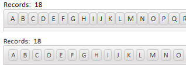
To fix this problem, you can add the following markup to the AboveGrid free-form edit region:
<style>
.{grid.style}Grid button {
margin: 0px;
}
</style>
IMPORTANT: If you currently have build 1620-4172 from 21 Aug 2013 or an earlier build installed, then this is a required update.
UX Component - Slider Control - Slider Message - If you turned on the slider message, but did not have an onChange event defined, you would get an error when trying to save the component. If you had defined an onChange event, there was no error.
IMPORTANT: If you currently have build 1620-4172 from 21 Aug 2013 or an earlier build installed, then this is a required update.
Internet Explorer 8 - Fixed an issue that would occasionally result in a page failing to load in Internet Explorer Version 8.
Tabbed UI - Print Reports - HTML - The Breaking Change described in the release notes for build 1788-4225 is no longer true. It is not necessary to recalculate Tabbed UI components.
API_UUIDSEQCREATE Function - Similar to the existing API_UUIDCREATE() function, but creates the GUIDs in sequential order.
? API_UUIDSEQCREATE
= "e220817f-4e10-11e3-8ac1-
? API_UUIDSEQCREATE
= "e2208180-4e10-11e3-8ac1-
? API_UUIDSEQCREATE
= "e2208181-4e10-11e3-8ac1-
? API_UUIDCREATE()
= "e57b36bb-ba36-48a5-990d-
? API_UUIDCREATE()
= "561f9dcf-8c5a-4485-8f65-
? API_UUIDCREATE()
= "2e1f5004-9a83-4d90-8da7-
*guid_seqcreate() Function - Similar to the existing *guid_create() function, but creates the GUIDs in sequential order.
?*guid_create()
= "{c4bc6cbc-d5a8-44a8-aada-3e94cf5e868f}"
?*guid_seqcreate()
= "{ae059bff-51f0-11e3-89bf-f04da23a263b}"
IMPORTANT: If you currently have build 1620-4172 from 21 Aug 2013 or an earlier build installed, then this is a required update.
Tabbed UI - Print Reports - HTML - If your Tabbed UI has any buttons that print reports with the initial view set to HTML then you will need to recalculate the button that opens the report. To do this, edit the Tabbed UI component, then click the Menu button and select 'Recalculate all controls'. If you don't recalculate the button, you will get this error when you try to print the report: 'phtm.pdfOptions not found'.
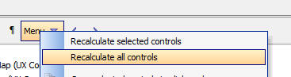
| UX and Grid Component | Accordion Control - Changing the Background Color of the Pane Selector | When you define the properties of an Accordion control you can specify class names to apply to the Title Band when the band is opened, closed, or disabled. This can be used to change the appearance of the title band depending on its state.
In this video we show how the background color and font title of the title band can be dynamically controlled through custom CSS classes. Watch Video |
Reports - Session Variables - Calculated fields that referenced Session variables were not displaying the value of session variable.
UX Component - Server-side Action Scripting - Send Email Action - If you specified that the e-mail body should be read from the repository table, and that the name of the item in the repository was based on a field in the UX (rather than a hard coded name), the action did not retrieve the entry in the repository correctly.
Web Component - Styles - Global Styles - If you used the Style Editor to create a new global style, the global style folder was not in the correct location. It was placed in a folder called 'Shared Resources' in the current Project. It should have been one folder up in the .WebProjects (plural) folder.
Grid Component - Detail View - Edit On Demand - Date Picker, Edit-Combo, Auto-suggest - Did not work if the Detail View as set to 'Edit on Demand' mode.
sql_lookup() Function - The function will now accept a blank filter expression and return all values. Previously, if the "result_Expression" in the function was a comma delimited list of fields, the function would return only the first field in the list for the first record found if the option "flagReturnAllValues" was false. It now returns all fields listed in "result_Expression" for the first record found when "flagReturnAllValues" is false.
The function now has an optional parameter for a column delimiter that is only added between fields if the expression is a comma delimited field list. The default column delimiter is a tab.
IMPORTANT: If sql_lookup() specifies a filter and returns a single field in the return expression, the return value is correctly typed. If more than one value is returned, or no filter is specified, the return value is a character string.
sql_records_get() Function - Now allows a blank filter expression which will return all records.
UX Component - Client-Side Calculated Fields - In certain cases Javascript rounding errors in math calculations were causing wrong values to be displayed.
Application Server - Report Server - Multiple Application Servers - If you were running multiple instances of the Application Server on a machine, the Report Server did not work correctly.
Reports - Web Applications - Reports - Report Server - If a SQL connection string contained high order characters, it could cause the report to fail.
Forms - Desktop Applications - Web Content Chrome - The Toolbox now has a new item 'Web Content Chrome'. This controls duplicates the functionality of the 'Web Content' control, but uses Chrome and not Internet Explorer to render the content. For example, you can use this control to render Google Maps on the form.
Forms - Desktop Applications - Google Maps Supercontrol - Fixes issues with this control. You now can create a Google Map supercontrol on a form using either the 'Web Content' control (uses Internet Explorer) or 'Web Content Chrome' (uses Chrome).
UX Component - Client-side Calculated Fields - Round() Function - The round() function in client-side calculated fields was using the built-inJavascript Math.round() method to round values. The Javascript Math.round() function rounds negative numbers differently that some people might expect (and differently than Excel does, for example).
For example:
Math.round(-4.5,0) returns -4
However, Excel returns -5.
To be consistent with Excel's behavior (which is likely what most users would expect), when the Round() function is used in a client-side calculation, it now uses the Excel convention.
Behind the scenes, the round() function in a client-side calculation is actually translated into the built-in $u.n.round() function in the Alpha Anywhere Javascript library. This function now takes these optional flags
For example:
$u.n.round(4.25,1)= 4.3
$u.n.round(-4.25,1) = -4.3
$u.n.round(4.25,1,'u') = 4.3
$u.n.round(-4.25,1,'u') = -4.2
$u.n.round(4.25,1,'d') = 4.2
$u.n.round(-4.25,1,'d') = -4.3
$u.n.round(4.25,1,'a') = 4.3
$u.n.round(-4.25,1,'a') = -4.3
$u.n.round(4.25,1,'t') = 4.2
$u.n.round(-4.25,1,'t') = -4.2
UX Component - List Control Performance - The way in which events are bound to List controls elements has been improved. This will result in a improvement in performance when doing an orientation change on the device and switching to a different List layout based on the orientation.
Reports - Layout Table Reports - Project Reports - Text Dictionary - You can now insert text dictionary tags in Layout Table reports defined at the Project level. Workspace reports do not support Text Dictioanries.
For example, you can specify the title of a column in a Layout Table report as
<a5:t>title1</a5:t>
When the report is printed, the text dictionary tags are resolved.
NOTE: To define the Text Dictionary, go to the Project Properties dialog on the Web Control Panel.
To define entries in the Text Dictionary, select the Text Dictionary... command from the Report menu in the Layout Table Report Editor.

When you preview your report, you can specify which Language you want to use by selecting the 'Default Language for Text Dictionary...' command on the Report menu.

When you define a Layout Table report, the Cell Contents dialog allows you to edit the contents of a cell in the Layout Table. If you want to use Text Dictionary tags on some static text, you must check the 'Is Template' checkbox as shown below.

When you click the 'Is Template' checkbox, then <a5:t> ..</a5:/t> tags will be evaluated. In addition, any text enclosed in { } brackets will be evaluated as an Xbasic expression.
Mobile Theme - Slate - A updated version of the new Slate stylesheet is ready for testing.
To download the style click here. Unzip the file into the CSS folder where you have Alpha Anywhere installed. This will create a new folder called Slate in the CSS folder. To use the style, edit a UX component, and then change the style name for the component to 'Slate'.
NOTE: See Release Notes for more information on the Slate stylesheet.
Grid Component - Query By Example Searches - The search performed by the QBE search feature is now case-insensitive on databases that are normally case sensitive.
You can disable this feature by setting this property in the Grid's Advanced Properties section:
tmpl.qbeSearchIsCaseInsensitive = .f.
Grid Component - Alphabet Button Search - Case-insensitive Searches - The search performed by the Alphabet Button search feature is now case-insensitive on databases that are normally case sensitive. To see this change you must make the Grid dirty and then resave it.
UX and Layout Table Report - AbsoluteLayout Editor - The AbsoluteLayout editor is now based on an embedded version of the Chrome Browser. Previous versions were based on the Internet Explorer ActiveX control. However, as a result of some very unfortunate changes that Microsoft apparently made to IE11 (which comes standard on Windows 8.1), the AbsoluteLayout editor did not work correctly on machines where IE11 was installed. Now that the AbsoluteLayout Editor is based on an embedded version of Chrome, there is no dependency on Internet Explorer and no risk that a future update to IE will break some aspect of the AbsoluteLayout editor.
Grid - Search Part - Setting Initial Value of a Checkbox Control - Multiple Values - The Search Part allows you to define the initial value of each control in the Search Part. However, in the case of a multi-valued controls, such as a Checkbox control, you might want to set the initial value of the control to two or more checked values. You can do this by specifying some Javascript in the client-side onSearchRender event. Use the .setValue() method and pass in an array of the initial selections. For example:
{grid.object}.setValue('S','COLOR',['Red','Green']);
IMPORTANT: If you currently have build 1620-4172 from 21 Aug 2013 or an earlier build installed, then this is a required update.
UX Component - Signature Capture Control - Show in Window - If the Signature Capture control was placed in a Window Container, when the window was opened, the signature capture control was shown but you could not draw on it.
List Control - Microsoft Access - Paginated Lists - There is a bug in Microsoft Access where if you specify a SQL Select statement with a limit clause and an Order By clause, the limit is interpreted as a percentage. For example
SELECT TOP 5 CustomerID, CompanyName, City FROM Customers ORDER BY City
In the above query, Access returns the top 5% of records in the query, not the top 5 records. This bug causes the wrong number of records to be shown in the List when the pagination option is set to .t.
A work around for the above Access bug has been added so that the List now correctly shows the correct number of records.
UX and Grid Controls - Submitting Data with Leading Quote Sign - If you submitted a field value that had a leading quote, the quotes were stripped. For example, if you tried to save this data into a field:
"alpha"
the value that was actually saved was:
alpha
Grid Component - Postgres - UUID Fields - Fixed an error when entering a new record with a primary key that was set to a UUID.
Grid Component - Search Part - Case-insensitive Search Options - The Search Part of the Grid allows you to specify a search option for each search field. These options are:
The above search-options perform a case-insensitive search on databases that are not case-sensitive, and perform a case-sensitive search on databases that are case-sensitive. Oracle and Postgres are examples of databases that are typically configured to perform case-sensitive searches, while MySQL and SQLServer typically perform case-insensitive searches.
Now, new search options are available to force a search to be case-insensitive, regardless of how the database is configured. These options use the portable SQL lower() function to force a case-insensitive search. For example:
lower(name) LIKE lower(:what_name)
The new options are:
AlphaDAO - Postgres - SSL - Support for SSL is now available for PostgreSQL ODBC extension driver variants these include PostgreSQL, PostgresPlus and FoundationDB (under development):
email_smtp_send() Function - Character Set - You can now specify the character set when using the email_smtp_send() function.
DIM ps as P
DIM pm as P
pm.from = "aaron@alphasoftware.com"
pm.from_alias = "Aaron Brown"
pm.to = "ed@alphasoftware.com"
pm.subject = "This is a test"
' Text that contains non ascii characters - encoded as UTF8
pm.message = convert_acp_to_utf8("mme manire")
' Indicate that we want to send the text with 'utf8' encoding
pm.charset = "utf8"
IF email_smtp_open(ps, "mail.alphasoftware.com")
email_smtp_send(pm, ps)
END IF
Email_smtp_close(ps)
Mobile Theme - Slate - A updated version of the new Slate stylesheet is ready for testing.
To download the style click here. Unzip the file into the CSS folder where you have Alpha Anywhere installed. This will create a new folder called Slate in the CSS folder. To use the style, edit a UX component, and then change the style name for the component to 'Slate'.
NOTE: See Release Notes for more information on the Slate stylesheet.
Reports - Free-form Reports - Maximum Report Height - The maximum height of a report section was previously limited to 22 inches. This limit has now been substantially expanded. The maximum height of a report section is now approximately 300 inches.
UX Component - Watermarks - High Order Characters (e.g. Hebrew) - Specifying watermark text for a textbox or textarea control using high order characters (for example, Hebrew characters) is possible, but requires the text for the Watermark to be entered as a unicode encoded string, with the {unicode} prefix.
For example, to set the watermark to the characters shown in the screenshot below, enter:
{unicode}05D0{unicode}05D1{unicode}05D2
In the screenshot shown below, the watermark is in Hebrew and it is on the right side of the control.

To get the text flow direction to 'right-to-left' (so that the watermark is on the right side of the control), the following Javascript was added to the client-side onRenderComplete event:
document.body.style.direction = 'rtl';
Display List of all Session Variables and their Values - The following .A5W page shows how you can list all of the session variables in the user's session and also display the value of each session variable.
<%a5
'test variables - you can delete these if you want
session.var1 = "alpha"
session.var2 = "beta"
'get a list of all of the session variables
'!f flag indicates that no functions should be returned
dim vars as c
vars = properties_enum(session.variables,"!f")
dim html as c
html = ""
'loop over each session variable and get its value
for each vn in vars
html = html+"session."+vn.value+"="+eval("session.variables."+vn.value)+"<br>"
next
'print out the contents of 'html'
?html
%>
IMPORTANT: If you currently have build 1620-4172 from 21 Aug 2013 or an earlier build installed, then this is a required update.
Application Server - Activation - Fixes a bug in build 1755-4125 that prevented an Application Server that had not previously been activated from being activated.
List Control - Microsoft Access - Paginated Lists - There is a bug in Microsoft Access where if you specify a SQL Select statement with a limit clause and an Order By clause, the limit is interpreted as a percentage. For example
SELECT TOP 5 CustomerID, CompanyName, City FROM Customers ORDER BY City
In the above query, Access returns the top 5% of records in the query, not the top 5 records. This bug causes the wrong number of records to be shown in the List when the pagination option is set to .t.
A work around for the above Access bug has been added so that the List now correctly shows the correct number of records.
UX and Grid Controls - Submitting Data with Leading Quote Sign - If you submitted a field value that had a leading quote, the quotes were stripped. For example, if you tried to save this data into a field:
"alpha"
the value that was actually saved was:
alpha
Mobile Theme - Slate - A updated version of the new Slate stylesheet is ready for testing.
To download the style click here. Unzip the file into the CSS folder where you have Alpha Anywhere installed. This will create a new folder called Slate in the CSS folder. To use the style, edit a UX component, and then change the style name for the component to 'Slate'.
NOTE: See Release Notes for more information on the Slate stylesheet.
Reports - Free-form Reports - Maximum Report Height - The maximum height of a report section was previously limited to 22 inches. This limit has now been substantially expanded. The maximum height of a report section is now approximately 300 inches.
UX Component - Watermarks - High Order Characters (e.g. Hebrew) - Specifying watermark text for a textbox or textarea control using high order characters (for example, Hebrew characters) is possible, but requires the text for the Watermark to be entered as a unicode encoded string, with the {unicode} prefix.
For example, to set the watermark to the characters shown in the screenshot below, enter:
{unicode}05D0{unicode}05D1{unicode}05D2
In the screenshot shown below, the watermark is in Hebrew and it is on the right side of the control.
To get the text flow direction to 'right-to-left' (so that the watermark is on the right side of the control), the following Javascript was added to the client-side onRenderComplete event:
document.body.style.direction = 'rtl';
This update is a required update. It must be installed before November 1.
UX Component - Client-side Readonly Expression - If your UX component has a client-side readonly expression you must recalculate the control and then resave the UX component. To recalculate the control, select the control that has the client side readonly expression and then make a change to any property of the control.
| UX Component | Image and File Upload - In Depth Look at What Happens Behind the Scenes When a File is Uploaded | When you upload a file or image in the UX component, the binary data that is uploaded is stored in temporary session storage until the user commits the record they are editing. This video discusses what happens when a file is uploaded and what happens when the record you are editing is committed.
The video also shows how you can write Xbasic to modify the filename that is stored on disk when the Camera is used to capture an image on a mobile device. Watch Video - Part 1 Watch Video - Part 2 Watch Video - Part 3 Watch Video - Part 4 Download Component |
| Reports | Printing Data that Contains HTML Markup | In some cases the data in a report you are printing might contain HTML markup. You might want to print the HTML markup in its rendered form, rather than its raw form. In this video we show how you can configure the report editor to print HTML markup as rendered HTML.
Watch Video |
| UX and Grid Component | Understanding Component Aliases and the Use of Placeholders in Javascript Code | When you write your own Javascript code in a Grid or UX component, you often use 'placeholders' (such as {Dialog.object} ) in your code. In this video we explain in depth how these placeholders work and we discuss the concepts of a component 'alias'.
Watch Video - Part 1 Watch Video - Part 2 Watch Video - Part 3 Watch Video - Part 4 Watch Video - Part 5 |
| UX Component | Consolidate Multiple Ajax Callbacks into a Single Callback | This video is aimed at advanced developers. It shows how the a5_ux_action() utility function can be used to optimize certain types of UX and List control actions into a single Ajax callback.
Watch Video - Part 1 Watch Video - Part 2 Download Component |
| Xbasic | Working with XML Documents | Xbasic has always had a powerful XML parser, but the new *property_from_xml() function and the new XML document viewer make it ever easier to work with XML documents.
Watch Video |
| Grid and UX Component | Image Upload to a Character Field | When you upload images in either the Grid or UX component, the target field can either be a binary field or a character field. In the case of a character field, the filename of the image is stored in the field and the image file itself is stored in a file in the specified 'upload folder'.
The filename of the image that is stored in the target character field can be a fully qualified filename, or more likely, you will store the 'shortfilename' (i.e. a relative filename). If you choose to store the 'shortfilename', then you must configure an image path property so that the image filename can be resolved. This video discusses this issue. Watch video |
| UX Component | Responsive Layout - Modifying the Design of a Component Automatically Based on the Device and Screen Orientation | 'Responsive' is the term used to refer to a design that automatically changes its layout based on the device on which it is running, the device orientation and the window size (for desktop browsers). The UX component has very powerful tools for implementing responsive layouts.
In this video we show how the Responsive Layout Genie can be used to build highly responsive UX component designs. Watch Video - Part 1 Watch Video - Part 2 Watch Video - Part 3 Advanced settings Watch Video Download Components |
| UX Component | List Controls/Data Series - Using an IN Clause with Array Arguments in a SQL Statement | List controls, Charts and Data Series in a UX can all be based on a SQL query. In some cases you might want to use an IN clause in the SQL query and reference an argument value to get the values for the IN clause.
This video shows how you can use arrays in a SQL::argument object and then reference the argument in a SQL IN clause. Watch Video Download Component |
| UX Component - List Control | Using the Server-side AfterQuery Event - Computing a Column Total | For List controls that are based on a SQL query, the server-side AftterQuery event fires after the query to get the List data has been executed. This event is typically used to compute some Javascript code to return to the browser.
In this video we show how the event can be used to return the total for a column in the List. Since the List is paginated, all of the data in the List query is not currently shown in the List and therefore the calculation of the total must be done on the server. Watch Video - Part 1 Watch Video - Part 2 Watch Video - Part 3 Download Components |
| UX Component | Computing a List Column Total using Client-side Calculations | In cases where the List data is not paginated (and therefore the List contains all of the data in the List query), column totals can be computed client-side.
In this video we show how the data in a column in the List is computed using Javascript. Watch Video Download Components |
| UX Component - List Control | Adding Dynamic Bubble Help (tooltips) to a Field in a List | In this video we show how you can add dynamic bubble help to a field in a List control using some Javascript in the onItemDraw event.
Watch Video Download Component |
| UX Component | Embedded UX Components - Understanding the onPanelActivateEvent | A common practice when designing mobile applications is to break a large application into multiple smaller UX components and then embed components in Panel Cards in the 'master' UX component. When you do this, it is useful to be able to execute code whenever a child UX component gets focus.
In this video we show how the onPanelActive client-side event in a child UX will fire whenever the Panel Card in which it is embedded gets focus. Watch Video Download Components |
| UX Component | Annotating an Image using the Signature Capture Control | The signature capture control can be used for more than capturing images. In this video we show how a medical application can use the signature capture control to annotate an image of the body to indicate affected areas.
Watch Video Download Component |
| UX Component - List Control | Server-side Summary Values | For List controls that are based on SQL data, you can specify that summary data (e.g. total, avg, count, min and max) should be computed for certain columns in the List control. The summary computations are based on the List query (not on the rows actually visible in the List). In the case of a paginated List, there may be more rows in the query than are visible in the List. For example, the query might have 1,000,000 rows, but the list might show 20 rows at a time.
This video shows how a List control is configured to compute summary values, and then how the afterServerSideSummaryCompute event in the List is used to update a label on the UX component showing the summary values. Watch Video |
| Grid Component | Locking the Screen while a Long Running Ajax Callback is Executing | If a Grid or UX component makes an Ajax callback that takes a long time to complete, you might want to display a message to the user telling them to wait and also you might want to 'lock' the screen to prevent them from firing other callbacks until the current callback has completed.
In this video we show how this is easily done using a custom modal window. Watch Video |
| Grid Component | Storing State Information | Both the Grid and the UX allow you to store 'state' variables that are available on both the client and server-side.
The UX has always allowed you to set state variables on the server side (in any server-side event or an Ajax callback) by setting variables in the 'e._state' object. Previously, to set state variables on the server side in the Grid you had to generate Javascript code. Now, you can also set variables in the e._state object on Grid server side events. This video shows how this is done. Watch Video - Part 1 Watch Video - Part 2 |
| UX and Grid Component | Overview of How to Localize a UX or Grid Component | In this video we give a brief overview on how a Grid or UX component can be localized so that the same component can be used for different languages. The technique involves using either Language tags (<a5:r>) or Text Dictionary tag (<a5:t>) around text strings that need to be localized.
Watch Video - Part 1 Watch Video - Part 2 For certain languages, the text flow direction is 'right to left' (e.g. Hebrew, Arabic). In this video we show how you can execute Javascript to change the text flow direction for the whole page. The Javascript is added to the component's render complete event. It sets the text direction using this code: document.body.style.direction= 'rtl' Watch Video - Part 3 |
| UX Component | Show/Hide Buttons in Panel Header/Footer Without Messing Up Button Alignment | A common pattern in mobile applications is to have buttons in a Panel header or footer and to space the buttons so that some are left justified, some centered and some right justified. Then you might show/hide one or more of the buttons, but you don't want the spacing on the buttons to be affected.
This video shows how this can be done. Watch Video |
| UX Component | Building a Menuing System in a UX Component Using Docked Panels in a Panel Layout | In mobile applications is it common to build menus that slide in from the right or left of the screen. In this video we contrast how this is accomplished in jQuery mobile and Alpha Anywhere. The approach we have taken in this video for Alpha Anywhere shows how the menus can be placed in Panel Cards that are docked inside a Panel Navigator.
Watch Video - Part 1 Watch Video - Part 2 Watch Video - Part 3 Watch Video - Part 4 Watch Video - Part 5 Download Components |
| UX Component | How to Dynamically Change the Code on a Button | (Advanced Javascript Developers) This video shows how you can dynamically change the code associated with a button on a UX component by 'unbinding' the existing code and then 'binding' new code.
Watch Video |
| UX Component - List Control | Edit the Current Row in a List Control in another UX Component | The Grid component has an option in Action Javascript to edit the current row in a Grid using a UX component (that is data bound to the same table that the Grid is based on). This option also allows you to add a new record to the Grid using a UX component. The action for the Grid is called:
"Open a UX component to Edit Current Record in Grid, or add a new Record" Now an analogous action is available in Action Javascript to edit the current row in a List control (for Lists that are based on SQL or DBF data sources) using another UX component that is data bound to the same table that the List is based on. The action for the UX is called: "Open a UX component to Edit Current Record in List Control in a UX, or add a new Record to a List Control in a UX" Watch Video |
| UX Component - Mobile | Panel Layout - Understanding the Different Ways in Which a Docked Panel Can Be Shown - 'Over', 'Slide' and 'Push' | Using Panel Layouts that contain multiple child Panels is common when building mobile applications. One or more of the child Panels that are shown in a Panel Layout can be 'docked' (i.e. hidden). Panels can either be explicitly docked, or conditionally docked (for example, on an orientation change).
Panels that have been docked can be shown (typically by clicking on a 'controller' button in a Panel Header). When a docked Panel is shown, you can specify the method use to show the Panel. This method discusses the various methods - Over, Slide and Push Watch Video |
| UX Component - Mobile | Overview of Different Methods for Specifying the Size of a Panel in a Panel Layout | When using a Panel Layout you can optionally specify the size of each Panel that is displayed within the Panel Layout. When you specify the size of a Panel, you can use either an absolute, percentage or relative size. This video discusses the various options.
Watch Video |
| UX Component | Embedding Reports into a UX Component and Dynamically Filtering the Report | Reports can be 'embedded' into the UX component and then dynamically filtered based on values that the user enters into controls on the UX. This allows for powerful interactive dashboard type applications where users can interact with reports. This video shows how this can be done.
Watch Video |
| UX Component | Custom Styling for RadioButton and CheckBox Controls | The standard way in which browsers render checkbox and radiobutton controls is pretty drab. In this video we show how the UX component allows you to apply a rich set of styling options to radiobutton and checkbox controls.
Watch Video - Part 1 Watch Video - Part 2 Watch Video - Part 3 Download Component |
| UX Component | Positioning Controls at Absolute Locations on the Screen using the WYSYWIG Builder - Understanding the AbsoluteLayout Container | By default, the UX component lays out the controls that have been placed on the component automatically, 'flowing' the controls from left to right, top to bottom. All controls are perfectly aligned. However, there are times when you want more precise control over the placement of controls. This is especially true when you want to use an image (for example, an image of a PDF form you might have) as the backdrop to a form and then place your UX component controls at precise locations exactly over the 'fields' in the image.
This video shows how you can place controls in an an AbsoluteLayout container and the set the absolute position and size of each control. Watch Video - Part 1 Watch Video - Part 2 Watch Video - Part 3 Watch Video - Part 4 Watch Video - Part 5 Watch Video - Part 6 Watch Video - Part 7 |
| UX Component | Understanding the 'NoFloat' Container Type | By default, all controls in a UX component are wrapped in a DIV with a class name of A5CWLayout. This class adds a CSS float and padding so that the controls 'flow' automatically, left to right, top to bottom across the page. If a control has a 'break' after it, a new 'line' is started. This automatic lay out of the controls on a UX makes it very easy to design attractive, perfectly aligned forms.
However, there are cases when the padding that is automatically added to all controls gets in the way of the effect that you are trying to achieve and in these cases you can wrap controls in a special 'NoFloat' container. This video explains how the 'NoFloat' container works. Watch Video |
| UX Component | Adding a 'Flow Collapse' Button to Panels in a Panel Layout to Hide/Show Panels | Panels in a PanelLayout can be hidden or shown by adding a 'flow collapse' button to a Panel. A common reason for doing this is to create a 'full screen' view for the 'primary' Panel in a PanelLayout. This video shows how this is done.
Watch Video Download Component |
| UX and Grid Component - | 'NotInList' Event for Auto-Suggest and Edit-Combo Controls | The 'NotInList' event fires when the user enters a value into an Auto-suggest or Edit-combo control and the value entered is not is the list of available choices for the control.
Watch Video |
| Reports | Printing QR Codes | Printing QR Codes on Layout Table Reports is now a built-in feature.
Watch Video |
| UX Component | Displaying QR Codes on a UX Component | A common requirement, especially in mobile applications, is to display data encoded as a QR code. The UX component has a built-in QR Code control that makes it very easy to display any data in the form of a QR Code. This control uses Javascript to generate the QR Code. Because it is a pure Javascript control, no Ajax callback is required and therefore it is very fast. However, you can also generate QR codes on the server.
This video shows how QR codes can be shown on a UX component using both client-side and server-side techniques. Watch Video - Part 1 Watch Video - Part 2 Download Component |
| Reports | Absolute Positioning of Objects in a Layout Table Report - Using a Form Image as Report Background | In a previous video we have shown how the UX component supports absolute positioning of controls over a bitmap image of a form (typically a PDF form).
Layout Table reports also offer the ability to also use an image of a form as the report background and to then position the report fields directly over the 'fields' on the background image. This video shows how this is done. Watch Video - Part 1 Watch Video - Part 2 Watch Video - Part 3 |
Reports - Printing Reports that Contain HTML Markup
in the Data - In some cases the data in a report you are printing might contain HTML markup. You might want to print the HTML markup in its rendered form, rather than its raw form. In this video we show how you can configure the report editor to print HTML markup as rendered HTML.
Watch Video
UX Component - Buttons - How to Programmatically Enable and Disable Buttons - In V12 all buttons on the UX component are 'Adanced Buttons'. (In V11 buttons could either be 'standard' or 'advanced'). Advanced buttons are implemented as Javascript objects and so in order to enable or disable them programmatically, you need to get a pointer to the object and then call the object's .setDisabled() method.
NOTE: All Javascript controls, not just buttons, in the UX (List, ButtonList, SpinList, Tree, etc.) support the .setDisabled() method.
For example:
var bObj = {dialog.object}.getControl('BUTTON_1');
//set the button disabled
bObj.setDisabled(true);
//now enable the button
bObj.setDiabled(false);
If the button is in a Repeating Section, and you want to call the .setDisabled() method for a specific button instance (say the button in row 3), then you can pass in an optional parameter to the .setDisabled() method. For example:
//get a pointer the button element in row 3
var eles = $('{dialog.componentname}.V.R1.BUTTON_2_A5INSTANCE3');
//pass in eles as an optional argument to the .setDisabled() method
{dialog.object}.getControl('BUTTON_2').setDisabled(true,eles);
NOTE: In the above example, if you did not pass in the optional second argument to the .setDisabled() method, the button in every row of the Repeating Section would have been disabled.
UX Component - Lists and Embedded Components - Delay Render Until Visible - Panel Layouts - Panels and Embedded Objects that were set to delay render until visible were not rendered if they were in a Panel Card inside a Panel Layout if the initial state of the Panel Card was 'docked'.
Forms - Super Controls - Google Maps Supercontrol - Windows 7/8 - If you used the Google Maps Superconrol in a Form on a machine where IE10 was installed, you would get a Javascript error. This error is apparently a bug in IE10 because the same Form runs without error on XP (where IE8 is used). A work around for this IE bug has been found and now the Form will work on Windows 7/8 without error.
Reports - Layout Table Reports - Linked Reports - If a child report uses arguments, and the parent report also uses arguments, then in the dialog where the child report is linked, you can now specify argument bindings to bind a child report argument to a parent report argument. Previously you could only bind child report arguments to literal or field values.
Report - Layout Table Reports - Linked Reports - Arguments in the Report Filter - If a child report (that was based on a SQL query) defined a filter in the report definition that used arguments, when this report was linked by a parent report, the child report arguments were not seen. Child report arguments were only seen if they were part of the report Data Source.
UX Component - List Control - Scrolling - As a result of changes to the change event described in a previous pre-release build, scrolling in he List caused the List's onClick event to fire. This is now fixed. Here is how tapping, and scrolling and List events now work:
ReportMailer and Netmailer - The installers for both have been updated for V12. If you need to use either of these addins with V12, please download the installers from the location specified in your order confirmation email.
UX Component - Data Bound - Security - If a UX component had security on a control so that for certain roles a control was not present on the UX, when doing an insert into a SQL table, you would get an error.
UX Component - Action Javascript - Insert, Update or Delete on an Unbound UX - Fixed some issues with the action.
Grid Component - Detail View - Edit on Demand - Cancelling out of the New Record - If a Grid with a Detail View was configured to only edit on demand when cancelling out of a new record, the Detail view did not return to the correct state (showing controls as labels, and not textboxes).
AlphaDAO - MySQL - Longbinary Fields - Fixes an issue with inserting null blobs inot longbinary fields.
Grid Component - File Export - In the case of an ascii export, was not honoring the extension if you supplied a custom client side filename.
Windows 8.1 - Working Preview - Windows 8.1 has made a change that is causing Working Preview in the Component Builders to fail. You will receive an error message from Javascript ("access denied"). This build has a work around so that Working Preview is now working in Windows 8.1.
Report Server - The 4 core Report Server is now automatically enabled without requiring a Feature Key to be added. Previously, the Report Server was only enabled if you had entered a Feature Key.
TIP: If you want to disable the Report Server, you can go to Project Properties and disable it from there. The setting will apply to the current project.
UX Component - Action Javascript - Map Actions - Add Marker to a Map - If you selected the action to add a marker to a map and you passed in a comma separated latitude/longitude value (e.g. 31.65583, -81.21025) the marker was not positioned correctly on the map. The problem did not occur if you passed in an address. The reason that the marker was not being positioned correctly was that the generated code passed the lat/lng value to the .addMarker() method as a string, when it should have been passed in as an array. To fix the problem you will need to edit and resave the action in your component.
UX Component - Cascading Dropdown Controls - Repeating Sections - If a UX component had Repeating Sections, and had cascading dropdownbox controls in both the top level section of the UX and in a Repeating Section, the cascading dropdown in the Repeating Section was not populated correctly when the UX was populated with an existing record.
UX Component - Opening Child UX Components in Dynamic Panels - Fixed a bug where the Image Upload action in a child UX component that was opened in a Dynamic Panel did not work.
TabbedUI Component - Grid Component - Multi-line Text Area - Under some circumstances when working with a Grid that has a multi-line text-area control in a Tabbed UI, pressing down or up arrow in the text-area would not move the insertion point.
Grid and UX Component - Edit Combo - Did not scroll the current selection into view.
Reports - HTML Reports - SQL Tables with Spaces in Field Names - Fixed a bug in HTML reports when there were spaces in field names.
.Net Framework 4.5 - Alpha Anywhere currently requires .Net 4.0. We will soon be switching to .Net 4.5. In anticipation of this change the Full and Patch installers will now install .Net 4.5 on your machine if it is not already installed.
UX and Grid Component - Javascript Confirmation Windows - Title Direction - By default, all confirmation dialogs show the title on the left and the close icon on the right. For right to left languages, you might want to change this.
To do so, put the following Javascript in the Grid or UX onRenderComplete client-side event:
A5.msgBox.window = {
title: {
direction: 'rtl'
}
}
Reports - Layout Table Reports - Absolute Layout - Layout Table Reports now support absolute positioning of fields. This feature is similar to the absolute positioning of controls in a UX component using an AbsoluteLayout container.
The primary motivation for adding this feature to reports is to allow you to use an image of a form (for example, an image of a IRS 1040 PDF form) as the background for a cell in a Layout Table report, and to then allow you to place the fields in the report at explicit locations so that they print 'on top of' the fields in the image background.
NOTE: This feature is only available for Layout Table reports that are being edited in the full report editor - not in the Quick Report genie.
To access the feature, double click on a cell in the Layout Table report. The 'Cell Contents' dialog opens up. Note a new choice in the dialog - 'Absolute HTML'.
If you select this option, then click the 'Edit...' button, the Absolute Layout editor for the cell opens up:

The editor shows the available fields, a 'canvas' where you can place the fields using drag and drop actions, and a property sheet showing properties of the selected field.
NOTE: Unlike the UX component, the size of the editing region (shown as 312 by 138 pt in the above image) cannot be changed in the editor. The size of the editing region is determined by the size of the cell in the Layout Report.
For each field that you place on the canvas, you can use the Style property in the Property Sheet to define properties (using HTML CSS syntax) to control the appearance of the field in the report.
For example, if you want a field in the absolute layout HTML to appear in red, with a blue border, you would define the following for its Style property:
color: red; border: solid 1px blue;
Placing 'Radio Buttons' and 'Checkbox' Controls
Assume that the background image for a cell uses the image shown below. Consider the 'Filing Status' area. It is likely that in your table, you have single field called 'filingStatus' that might have a value of 1, 2, 3, 4, or 5 stored in the field.
However, when you print a report, you want to print an 'X' above the appropriate box in the image.
To do this, you would need to define five calculated fields in your report. For example:
filingStatus_1 = if(filingStatus = 1, "X","")
filingStatus_2 = if(filingStatus = 2, "X","")
filingStatus_3 = if(filingStatus = 3, "X","")
filingStatus_4 = if(filingStatus = 4, "X","")
filingStatus_5 = if(filingStatus = 5, "X","")
Having done this, when you open the Absolute Layout editor, your field list will show the five calculated fields you have defined, and you can place each one of these fields over the appropriate radio button control on the image.

Defining the Background Image for the Cell
When you are in the Absolute Layout editor, you can define the background image for the cell. When you specify the image, you can specify how the image should be scaled to fit the cell. The options are:
UX Component - Mobile Applications - Location Information - Current location information can be used in several actions in Action Javascript. These actions include Ajax Callbacks, Centering a Map, Placing a Marker on a Map, Filtering a List for Records within the Vicinity of the Current Location.
Now, the Action Javascript builders expose three properties which previously were hard coded to default values. These properties are:
High accuracy - If true, the device will use its most accurate method to get location information. If false, the device will use its fastest or lower power consumption method depending on the device. (Default true)
Timeout - The amount of time in milliseconds to wait on the device to acquire location information excluding the amount of time it takes the user to grant the web page access to geolocation data. (Default 15000)
Max age - The amount of time in milliseconds to accept a previously acquired location. 0 means that a new location must be acquired from the device. (Default 30000).
You can also change the default settings for these properties, by adding Javascript like this (using appropriate values for each of the properties) to the onRenderComplete client-side event:
{dialog.object}.locationMaximumAge = 30000;
{dialog.object}.locationTimeout = 15000;
{dialog.object}.locationHighAccuracy = true;
UX Component - ListControl - onBeforeSelect event - The onBeforeSelect event fires before the Select event. If the event returns false, then the user is prevented from moving off the currently selected row in the List.
Grid and UX Component - Windows, Auto-suggest and Edit-combo - Specifying a Maximum Window Height - When you define the window height for a pop-up window, an auto-suggest control or an edit-combo control, you can specify a window height.
If you leave the height property blank, the window will be sized to accommodate the entire height of the content (which will result in a window that is too high if there is a lot of content).
On the other hand, if you specify an explicit size, then you will end up with a window that looks too big if there is just a small amount of content in the window.
Now, when you specify the window height you can use the 'max' syntax to specify that the window should be automatically sized to fit its content, but should not grow bigger than the specified max size. For example, you can specify the height property as:
max: 300px
UX and Grid Component - Auto-suggest and Edit-combo Controls - 'NotInList' Rule - The 'NotInList' event fires when the user enters a value into an Auto-suggest or Edit-combo control and the value entered is not is the list of available choices for the control.
The primary use case for this event is to allow the developer to add code to the component to add the value that was entered into the control into the table on which the control choices are based so that the next time the user visits the control the value entered will be in the pick list for that control.
UX Component - QRCode Control Type - A new control type has been added to the UX component. The QRCode control displays its value as a QR Code.
The image shown below shows a UX with a QRCode controls.
Watch Video - Part 1
Watch Video - Part 2
Download Component
NOTE: The QRCode control is a client-side control. That means that Javascript is used to generate the QR code. You can also use Xbasic methods to generate servers-side QR codes (as bitmaps or SVG). See ::Qrcode::Creator:: below for more details.
To place a QRCode control on a UX, select the control type from the toolbox.

The QRCode control is just like other data bound controls in that it has a .getValue() and .setValue() method.
To display a QR code, you simply call the .setValue() method of the control. For example:
{dialog.object}.setValue('MYQRCONTROL_1','value to encode');
QRCodes - Xbasic - New methods have been added to Xbasic to generate QRCodes. The methods are:
::Qrcode::Creator::GenerateBmp(c text, c flags)
::Qrcode::Creator::GenerateBmpFile(c text, c filename, c flags)
::Qrcode::Creator::GenerateJpeg(c text, c flags)
::Qrcode::Creator::GenerateJpegFile(c text, c filename, c flags)
::Qrcode::Creator::GeneratePng(c text, c flags)
::Qrcode::Creator::GeneratePngFile(c text, c filename, c flags)
::Qrcode::Creator::GenerateRTF(c text, c flags, n width, n height)
::Qrcode::Creator::GenerateSVG(c text, c flags)
The flags parameter can be set to 'L' (low), 'M' (medium) or 'H' (hight) to indicate the level of error correction in the generated QR Code.
For example, from the Interactive window:
dim svg as c
svg = ::QRCode::Creator::GenerateSVG("http://www.alphasoftware.com","L")
a5_show_html(svg)
To display a QR code in an Xdialog:
svg = ::QRCode::Creator::GeneratePngFile("http://www.alphasoftware.com","c:\myfiles\qr1.png","L")
ui_dlg_box("QRCODE","{image=c:\myfiles\qr1.png}")
Qrcode_bitmap() Function - Generates a bitmap of a QR Code - This function is a wrapper for the ::QRCode::Creator::GeneratePng() function. However, it is able to scale the bitmap to an explicit size.
Returns either binary PNG data or base64 encoded string with 'data:image/png;base64,' prefix
Syntax
A blobOrString = qrcode_bitmap(c text, c flag [,N width , [N height [, L flagBase64encodedWithPrefix]]])
QRCodes - Layout Table Reports - Layout Table Reports now support printing any cell in the Layout Table that contains a text value as a QR code.
To print the contents of a cell as q QR code, simply check the 'Display QRCode for text in cell' property at the bottom of the 'Cell Contents' dialog box.
For example, here is a report showing customers in the sample Northwind database:
UX Component - PanelLayout Containers - Flow Collapse Buttons - Allows you to put a button in a Panel (only applies if the Panel is contained within a PanelLayout) to 'collapse the flow' of Panels that come 'before' the current Panel. By 'collapsing the flow' of a Panel, you make the Panel invisible.
The following set of images help to explain the concept:
The image below shows a Panel Layout with 3 child Panel (the child Panels can be PanelCards, PanelNavigators or PanelLayouts). The PanelLayout flow is set to LTR so that the Panels 'flow' from left to right. All of the Panels in the PanelLayout are currently visible. PanelCard1 and PanelCard2 both have an explicit size (say 100px) and PanelCard3 takes up the remaining available space.
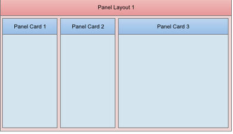
Now, let's assume that PanelCard3 has a button (either in the Panel body itself, but more likely in its header or footer) to 'collapse the flow' (of the Panels that come before it).
If this button was pressed, then the Panels that come before it (PanelCard1 and PanelCard2 - because the flow direction is LTR) will get 'collapsed'. Their widths will get set to zero using an animation.

When the animation has completed, Panel Card3 will consume all of the available space in its parent PanelLayout.
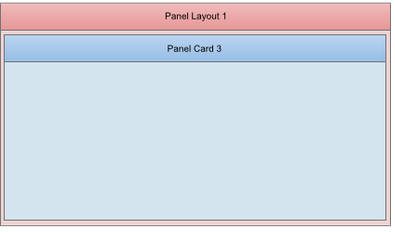
The 'Flow collapse' button acts as a toggle. So, if the button were pressed a second time (while PanelCard1 and PanelCard2 are collapsed), then PanelCard1 and PanelCard2 will be re-shown, again, using an animation.

When would you use a 'Flow collapse button'? Assume that in the above example, PanelCard1 and PanelCard2 contain navigation or menu controls and that PanelCard3 is the main 'work' area of your application. By have a 'flow collapse' button in PanelCard3, you can allows you users to toggle 'full screen' mode on and off.
The primary use case for this pattern is when PanelCard1 and PanelCard2 contain 'navigation' or 'menu' controls and
Defining a 'Flow Collapse' Button
To define a 'Flow Collapse' button for any Panel (PanelCard, PanelNavigator or PanelLayout), set the 'Has a 'flow collapse' button' property in the Panel's Property Sheet.
Once you click this property, you can specify the ID of the button that will act as a 'flow collapse' button.
NOTE: If you have defined an onClick event for the flow collapse button, the event will be ignored since the button is being 'hijacked' to perform the 'flow collapse' action.
The builder allows you to define separate icons to use for when the Panels are in the collapsed state and when they are in the expanded state.
IMPORTANT: If you want to display icons on the flow collapse button you must set the button type to the appropriate option in the properties for the button you specify as the 'flow collapse' button.

UX Component - NoFloat Container Type - By default, all controls in a UX component are wrapped in a DIV with a class name of A5CWLayout. This class adds a CSS float and padding so that the controls 'flow' automatically, left to right, top to bottom across the page. If a control has a 'break' after it, a new 'line' is started. This automatic lay out of the controls on a UX make it very easy to design attractive, perfectly aligned forms.
However, there are cases when the padding that is automatically added to all controls gets in the way of the effect that you are trying to achieve and in these cases you can wrap controls in a special 'NoFloat' container.
In the image below, the first container (red) is a standard container. 'Firstname' and 'Lastname' are on the same line (because the break after 'Firstname' was turned off) as are 'City' and 'State'. Also, each control has padding around it.
The second container (blue) has been set to a 'NoFloat' container. Notice that all controls now are on their own line (even though there is no break after 'Firstname' and 'City' and all padding between controls has been removed.
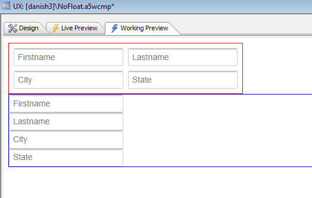
Xdialog - List Control - W=milliseconds Directive to Delay Firing Selected Event - A new directive can be added to a List control to delay firing the selected event for a specified number of milliseconds.
The directive:
W=milliseconds
is inserted in the Listbox commands (between the % symbols).
To test the effect of this directive, create a new Xbasic script and paste this code in. Then click on a row - a message box will show the selected value. Then hold the down arrow down and the selection will move quickly down the list, but the event which shows the current selection will not fire until you have stopped holding down the down key.
Then, repeat the exercise with te W=2000 directive removed. You will see that the message box is shown for every row.
dim colors as c
colors = a5.Color_Enum()
dim selected as c
dim dlg_title as c
dim dlg_body as c
dim dlg_event as c
dlg_title = "Title"
dlg_body = <<%dlg%
{removecomments}
{removeleadingspaces}
[% W=2000%.100,30selected^#colors!selected_changed];
%dlg%
dlg_event = <<%code%
if a_dlg_button = "selected_changed" then
a_dlg_button = ""
ui_msg_box("",selected)
end if
%code%
dim flagOK as l = .f.
ui_dlg_box(dlg_title,dlg_body,dlg_event)
UX Component - Radiobutton and Checkbox Controls - Custom Styling - The standard way in which browsers render checkbox and radiobutton controls is pretty drab. The UX component allows you to apply a rich set of styling options to radiobutton and checkbox controls.
For example, here is an example of how these controls can be styled:

Watch Video - Part 1
Watch Video - Part 2
Watch Video - Part 3
Download Component
To style a Radiobutton or Checkbox, check the 'Has custom design' property.
Then click the smart field for the 'Custom appearance designer' to open the builder. The builder gives you control over a large number of appearance properties and also shows a real-time preview of the control's appearance.

UX Component - Embedded Obects - Reports - HTML Reports - When you embed a report into a UX component, you now have the option to specify that the report should be rendered as HTML.
Panel Layout - Display Method - 'Push' Option - A new option for the 'Docked Panel display method' property has been added. The option is 'push'. The 'push' method pushes the Panel that are to the left (or right, above or below - depending on the Flow direction)
Panel Layout - Dock Options - Several new options have been added to specify when a Panel that is contained in a Panel Layout should be docked (i.e. hidden). The complete list of options is shown below:
The options prefixed with 'landscape', 'portrait', and 'self' are new.
If a Panel's dock option is set to 'portrait-collapse-before' then the Panel will be docked (i.e. hidden) when the device is in portrait mode, but not when in landscape mode.
If a Panel's dock option is set to 'self-portrait-collapse-before' then the Panel will be docked when the Panel Layout in which it is contained is in 'portrait' mode (i.e. it has a width that is less than its height), regardless of the orientation of the device itself.
Panel Layout - Size Options - New options have been added for specifying the size of a Panel in a Panel Layout. You can now use percentages and negative sizes.
If you specify a percentage size, the percentage represents the percentage of the available space in the Panel Layout.
If you specify a negative size (e.g. -100px), then the Panel Layout will have a size equal to the size of the Panel Layout (in the flow direction), minus 100px.
Grid Component - Alphabet Button Search - Custom Buttons - The Alphabet Button search feature in the Grid has always allowed custom button definition. For example:
A..C = left({searchfield},1) >= 'A' and left({searchfield},2) <= 'C'
In the above example, a button with a label of 'A..C' is defined with a corresponding filter of:
left({searchfield},1) >= 'A' and left({searchfield},2) <= 'C'
Now, you can specify that the filter expression uses arguments. For example the above custom button can now be defined as:
A..C = left({searchfield},1) >= :arg1 and left({searchfield},2) <= :arg1 && a|||c|arg1
The argument value is defined using the syntax:
argumentValue|||argumentType|argumentName
and is separated from the filter by:
&&
When specifying the argument value you can use an expression by prefixing the argument value with an = sign.
For example:
Today's Orders = orderDate = :d1 && =date()|||d|d1
If you want o use International characters in an argument value, then you must use an expression that uses the *html_to_text() function and an html encoded version of the argument value.
For example:
&;#1489; = left({searchfield},1) = :arg1 && =*html_to_text("&;#1489;")|||c|arg1
UX and Grid Component - CSS Editor - Remember Last Pane Used - The CSS editor now remembers the last pane you were on. If you switched to the Code pane, then closed the editor, the next time you open the editor you will be on the Code pane. Previously, the editor always opened on the Design pane.
UX Component - List Control - Action Javascript - Edit Current Row in List - A new action has been added to Action Javascript to allow you to edit the current row in a List control that is based on a SQL or DBF data source in another UX component.
The action is called:
Open a UX component to Edit Current Record in List Control in a UX, or add a new Record to a List Control in a UX
The UX component that is used to edit the List record must be data bound to the same table that the List is based on, and the AfterDialogValidate event in the UX used to edit the List row must have a server-side Action Script to save the record when the Submit button is pressed.
UX Component - Logical Checkbox - Prompt Text - You can now specify an optional label that appears to the right of the logical checkbox.
UX Component - Radiobutton, Checkbox and Logical Checkbox Controls - Now wrap the individual choices and their corresponding label in a <span> element. You can specify the class name for this <span> element. This allows for more styling options on these controls.
Web Projects Control Panel - Find File - A new option on the right click menu allows you to search for a particular file in all of the Web Projects in the current Workspace. This function is useful if you have many Web Projects in a particular Workspace and you are not sure in which Web Project a particular file is located.
UX Component - AbsoluteLayout (WYSIWYG) - You can now position controls in a UX component at absolute locations on the screen.
A common use case for absolutely positioning controls is so that you can display an image of a professionally designed form as a 'backdrop' to your UX and then precisely position your UX controls over the 'fields' in the form image.
By default, when you place controls on a UX component, the controls are positioned on the screen automatically by the UX component. The controls 'flow' from left to right, then top to bottom.
For example, say you have have a UX component that has these controls on it:
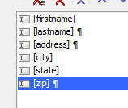
As the image shows, there is no break after the 'firstname' field, so 'firstname' and 'lastname' will be on the same 'line'.
'address' will be on its own 'line' because there is a break before and after it. Finally, 'city', 'state' and 'zip' will all be on the same 'line'.
Here is how this UX will render:
Because the UX was in charge of rendering, you can see that the baselines of all controls on the same 'line' are automatically aligned. And the left edges of controls at the start of each line are also automatically aligned. Furthermore, automatic spacing has been placed between the controls so that the form lays out nicely.
NOTE: The amount of spacing between controls is defined by setting the 'A5CWLayout Class Padding' property on the UX Properties Pane. By default this is set to 4px. You can set explicit values for top, right, bottom and left using the standard CSS convention: For example: 4px 4px 0px 0px.
An important (and extremely powerful) aspect of the way Alpha Anywhere lays out controls automatically is how the UX component will react when the window in which it is contained is resized. In the example show above, City, State and Zip are on the same line. However if the window is resized smaller and there is no longer space for all of the controls on the line, the Zip control will automatically 'wrap' to the next line. As the window is further resized smaller, eventually the State field will also automatically 'wrap' to the next line.
When you use Absolute Layout, you turn off the automatic layout of controls that the UX component does and instead you take on responsibility for positioning and sizing controls yourself.
For example, you might lay out the controls in the following (admittedly decidedly odd) fashion:

The way in which you indicate that you want to absolutely position controls in a UX is by wrapping the controls in an AbsoluteLayout container.
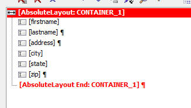
The AbsoluteLayout container has these properties:

Absolute positions for controls - The smart field for the 'Absolute positions for controls' property will open the builder where you can visually set the position and size of each control in the container.
Has background image - The 'Has background image' property indicates if the AbsoluteLayout container has a background image.
Control style overrides - The 'Control style overrides' property is a convenience feature. It allows you to automatically add some CSS to use for the in-line style of every control in the AbsoluteLayout container without having to go to individual controls in the AbsoluteLayout container and set the in-line style, control by control. For example, if you wanted every control in the AbsoluteLayout to have a red border, you could just set this property to:
border: solid 1px red;
The layout of controls in the screenshot shown earlier is represented in the AbsoluteLayout builder as follows:
NOTE: Data controls (such as textboxes, textareas, dropdown boxes, etc.) only show the control itself (and not the control Label - if the labels are turned on), when placed in an AbsoluteLayout container.
Working with the AbsoluteLayout Editor
The AbsoluteLayout editor allows you to position controls on a 'canvas'. You also define the size of the control on the canvas. The editor has many advanced features that make positioning and sizing controls precisely extremely quick and easy.
To place an object on the canvas, select the object in the field list on the left. The click on the canvas at the position you want to place the object, and while holding down the mouse button, draw a rectangle that represents the size of the object.
While you are drawing, the current size and position of the object are shown.
You can also edit the size and position of an object in the Property Sheet shown on the right.
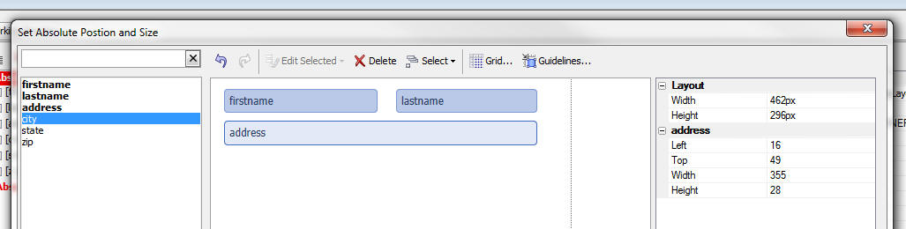
To
Toggling the Background Image On/Off
If you have specified that your AbsoluteLayout container has an image background, then when you open the editor, the image background is shown. However, with the image shown, it can be hard to see all of your controls against the image background. You can therefore toggle the image on/off by clicking the 'Background Image' button on the toolbar:

Guidelines
Guidelines make it very easy to position controls relative to other controls. For example in the image shown below, the width of the bottom control is being adjusted and a vertical guide line has been drawn to show the the right edge of the control is aligned with the right edge of the control above it.

Adjusting Multiple Controls as Once
You can select multiple controls by shit-clicking on controls. Once you have more than one control selected, the Edit Selected button on the toolbar becomes enabled.

This button displays a menu that allows you to perform actions on multiple controls at once, such as aligning them, or sizing them.
A useful option is the ability to size multiple controls to a be the same size as a 'reference' control. The 'reference' control is the first control that was selected when you selected multiple controls.

Positioning Individual Radiobutton and Checkbox Controls
Normally when you position a Checkbox or Radiobutton control in an AbsoluteLayout container, you position the control as a single object and then Alpha Anywhere renders the individual radio button or checkbox controls for each choice (either horizontally, vertically, or in snaking columns). However, in certain use cases (typically when using an image as a background), it is necessary to precisely position the individual choice objects.
For example, consider the section of the IRS 1040 form shown below. The checkboxes show on the form (which are really radio buttons - since only a single box is meant to be checked) are laid out in a custom fashion.
When using this image as the background image for an AbsoluteLayout container you would clearly want to have a 'FilingStatus' Radiobutton control and then be able to position each choices over the checkbox shown in the image.
Furthermore, you would want to suppress the label associated with each Radiobutton choice because the image background explains what each option represents.

In order to turn on the ability to individually position choices in a Checkbox or Radiobutton control, you must turn on the Custom layout when in AbsoluteLayout container property for the Checkbox or Radiobutton control:
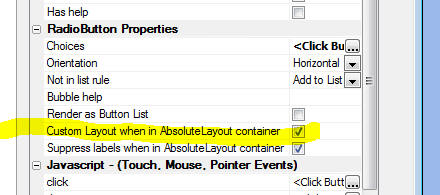
NOTE: The Custom layout when in AbsoluteLayout container property is only shown if the Radiobutton or Checkbox control is based on a static list of choices.
Once you have checked the Custom layout when in AbsoluteLayout container property, when you open the AbsoluteLayout editor, the individual choices for the control will be available in the field list so that you can place them on the canvas. For example, in the image below the Radiobutton control has 3 choices, and so the AbsoluteLayout builder shows three objects which can be individually placed.

UX Component - {dialog.object}.setFocus() Method - Javascript Controls - Now works for Javascript controls (such as the List control). Previously this only worked for HTML controls (such as a checkbox, textbox, etc). The motivation for adding support for Javascript controls to the .setFocus() method was to enable the following use case:
Assume you have a UX component with a List control on one Panel and some other controls on another Panel. The second Panel has a button that returns focus to the first Panel. However, when focus returns to the first Panel, pressing up and down keys (when running on a desktop browser) did not navigate in the List (even though visually, the List appeared to have focus). By using the .setFocus() method in the event handler for the button that returns focus to the first Panel, you can solve this problem.
UX Component - List Control - Client-side Summary Values - You can specify that client-side summary values should be computed for any column in a list.
To turn on client-side summary values for a field in the List, check the property shown below in the List builder:
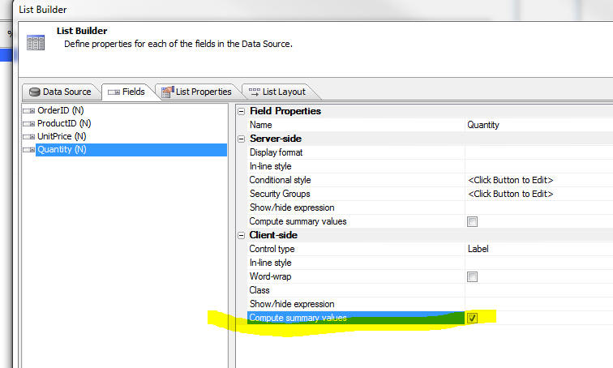
NOTE: For Lists based on SQL data, you can also specify server-side summary values. Server-side summary values are only different than client-side summary values if the List is paginated. Server-side summary values compute the summary based on the List query, whereas client-side summary values are based on the data that is currently loaded into the List. In the case of the paginated List, there can be many more records in the List query than are displayed in the List.
When you compute summary data for a List column, you will typically want to display the data on the UX component. The List's afterClientSideSummaryCompute event is useful for this. The afterClientSideSummaryCompute fires after the client-side summary values have been updated.
In this event handler you can reference the summary data that was computed. Here are some examples of how your Javascript code can reference summary values:
csSummary['QTY'].total
csSummary['PRICE'].avg
csSummary['PRICE'].max
The 'csSummary' object contains all of the summary data. The field name must be in uppercase and the summary type (total, avg, count, min, or max) must be in lower case.
You can also use a method of the UX object to read a List summary value using the following method:
{dialog.object}.getListClientSideSummaryValue(listName, fieldName, summaryType)
For example:
var tot = {dialog.object}.getListClientSideSummaryValue('list1','QTY','total');
UX Component - List Control - Static Data - Group Breaks - If your data is already in the the correct sorted order, you can instruct the List not to sort the data on the break field.
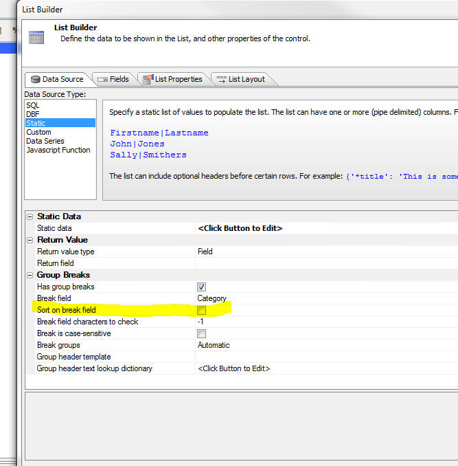
Reports - Layout Table Reports - Creating Custom Style Sheets - It is now much easier to create custom style sheets for Layout Table Reports.
In the Quick Report Genie, you can click the 'New Style Sheet...' hyperlink.

In the Layout Table Report editor when you select the 'Apply or Create Stylesheet..' menu, you can then click the 'New Style Sheet' button shown below.

When you select the New Style Sheet option, you get a dialog that allows you to define the color and other properties of the style.
.jpg)
ShowResultSet() Function - The showResultSetFunction() is a useful utility function to quickly show data in an AlphaDAO resultset. It is typically used in the Interactive window, or while debugging code.
Here is an example of an Interactive window session:
dim cn as sql::Connection
cn.open("::Name::sqlserver2012_northwind")
dim sql as c = "select * from customers where city = 'london'"
cn.PortableSQLEnabled = .t.
?cn.Execute(sql)
= .T.
dim rs as sql::ResultSet
rs = cn.ResultSet
showResultSet(rs)
Note: After you have called the showResultSet() function once to show a resultset, you cannot call it a second time to show the same resultset without first executing the query again. That's because AlphaDAO resultsets are 'forward only'.
Grid Component - State Variables - Setting State Variables on the Server-Side Using the e._state Object - Both the Grid and the UX allow you to store 'state' variables that are available on both the client and server-side.
NOTE: State variables are variables whose value can be set or read on either the server-side (using Xbasic), or the client-side (using Javascript). Once a state variable has been set, its value is available on all subsequent Ajax callbacks.
The UX has always allowed you to set state variables on the server side (in any server-side event or an Ajax callback) by setting variables in the 'e._state' object. For example, in a server side event:
e._state.mystatevar1 = "alpha"
However, in the Grid, you could not use this syntax. Instead, you had to generate Javascript to set the state variable and then return that Javascript in the response from your server side event. For example:
{grid.object}.setStateInfo({mystatevar1: 'alpha'});
Now, you can also set variables in the e._state object on Grid server side events.
NOTE: Some Grid events do not take 'e' as the input parameter. These events take 'args' as one of their input parameters. In events that do not take 'e' as in input parameter, you can still set state variables on the server-side by setting
args.rtc._state.mystatevar1 = "alpha"
On a Grid, when a server side event is executing, state variables can be read from the e.__si2 object. (For the few server-side events that take 'args' you can read state variables in the args.rtc.__si2 object).
Watch Video - Part 1
Watch Video - Part 2
The section below summarizes how state variables are set and read on both the server-side and client-side in the Grid and UX:
UX
Server-side (Xbasic)
Set state variable - e._state.myvar1 = "alpha"
Read state variable - myvar = e._state.myvar1
Client-side (Javascirpt)
Set state variable - {dialog.object}.setStateInfo({myvar1: 'alpha'})
Read state variable - var myvar = {dialog.object}.stateInfo['myvar1'];
GRID
Server-side (Xbasic)
Set state variable - e._state.myvar1 = "alpha"
Read state variable - myvar = e.__si2.myvar1
Client-side (Javascirpt)
Set state variable - {grid.object}.setStateInfo({myvar1: 'alpha'})
Read state variable - var myvar = {dialog.object}.stateInfo['myvar1'];
NOTE: The inconsistency between the Grid and the UX in the way state variables are read in server-side code is because of legacy code in the Grid that could not be changed without making a breaking change to Grids. Therefore when you read a state variable in a Grid you read from the e.__si2 object (and not the e._state object). Setting state variables, however, is done in the e._state object.
Mobile Theme - Slate - A updated version of the new Slate stylesheet is ready for testing.
To download the style click here. Unzip the file into the CSS folder where you have Alpha Anywhere installed. This will create a new folder called Slate in the CSS folder. To use the style, edit a UX component, and then change the style name for the component to 'Slate'.
NOTE: See below for more info on the Slate stylesheet.
UX Component - List Control - Server-side Summary Values - For List controls that are based on SQL data, you can specify that summary data (e.g. total, avg, count, min and max - total and avg are only available for numeric fields) should be computed for certain columns in the List control.
NOTE: Client-side summary values can also be computed. Client-side summaries are not limited to SQL data sources.
The summary computations are based on the List query (not on the rows actually visible in the List). In the case of a paginated List, there may be more rows in the query than are visible in the List. For example, the query might have 1,000,000 rows, but the list might show 20 rows at a time. If the List is not paginated, then the number of rows in the List is the same as the number of rows in the List query.
Server-side summary values are automatically updated when the List data is refreshed. If your UX is data-bound and you have specified that the List should be updated when records are updated or saved, the server-side summaries will be updated when data in the List is edited.
To turn on summary calculations for a column in a List, check the 'Compute summary values' property. Once this property is checked, the 'Summary field formatting' property is shown where you can define display formats for the data. For example, to round the average to 2 decimal places, you would use:
round(<value>,2)
You can use any Xbasic function for format the data.

When you compute summary data for a List column, you will typically want to display the data on the UX component. The List's afterServerSideSummaryCompute event is useful for this. The afterServerSideSummaryCompute fires after the server-side summary values have been updated.
In this event handler you can reference the summary data that was computed. Here are some examples of how your Javascript code can reference summary values:
summary['QTY'].total
summary['PRICE'].avg
summary['PRICE'].max
The 'summary' object contains all of the summary data. The field name must be in uppercase and the summary type (total, avg, count, min, or max) must be in lower case.
You can also use a method of the UX object to read a List summary value using the following method:
{dialog.object}.getListServerSideSummaryValue(listName, fieldName, summaryType)
For example:
var tot = {dialog.object}.getListServerSideSummaryValue('list1','QTY','total');
UX Components - Abstract Tap and DoubleTap Events - Two new abstract events have been added to the UX component. These events have been added because the behavior of the click and dblClick events have been changed in an important, but subtle way. (See below for more details on the click and dblClick events.) The tab and dblTap events allow you to get the previous behavior of the click and dblClick events should your application require this behavior.
Assume you have a large button and you click on the button and then, before releasing, you move your finger or mouse by more than the threshold amount (used to be 5px, now upped to 10px). You then released, while still over the button.
Previously, the click event would not have fired. Now it will fire. The tap event, however, will not fire (because you moved by more than the threshold amount).
If you have moved off the button by the time you release, then neither the tap or click events will fire.
NOTE: The List control has also added onTap and onDblTap events. The behavior of the onClick and onDblClick events in the List has been changed.
UX Component - Click and DblClick Event - The behavior of the abstract click and abstract dblClick events have been changed slightly so as to make it consistent with the behavior of a these events on native devices.
Previously, if you clicked (or dblClicked) on a control and then, before releasing, moved your pointer by more than the threshold amount (was 5px, but has not been changed to 10px), then when you released (assuming you will still over the original element), the event did not fire. Now, the event will fire as long as you are still anywhere over the original element at the time you release.
NOTE: If your application need the original click event behavior, use the new tap event.
UX Component - Action Javascript - Delete Record Action - Enhancements - The Delete Record action allows you to delete a record in a UX component that has been data bound.
Previously, this action required that the primary keys for the data bound table had been loaded (normally done in the onDialogInitialize event using the 'Load Primary Keys for Parent Table' server-side action, or by an Ajax callback).
It is no longer necessary for primary keys to have been loaded in order to use this action.
When you use this action now, the builder now gives you these options for specifying the primary key of the record to delete:
The dialog for this action is shown below.

UX Component - Signature Control - Client-side Enable Expression - Now honors the client-side enable expression. When the control is disabled, the buttons are disabled, not the canvas (where the user signs).
UX Component - Signature Control - Client-side Show/Hide Expression - Now honors the client-side show/hide expression.
UX Component - Client-Side Events - onPanelActivate - A common practice when designing mobile applications is to break a large application into multiple smaller UX components and then embed components in Panel Cards in the 'master' UX component. When you do this, it is useful to be able to execute code whenever a child UX component gets focus.
The UX component now has a new client-side event - onPanelActivate. This event fires when the UX gets focus (because the Panel Card in which it is embedded has gotten focus).
IMPORTANT: This event will only fire if you have assigned an explicit alias to the UX component when you embed it into its parent UX component.
Watch Video
Download Components
pdf_exportJPG() function - Converts a PDF file to a JPG image - A new function converts a PDF file into a JPG file. If the PDF file has multiple pages then one .jpg file is created for each page. The .jpg files are numbered sequentially.
Syntax:
L flag = Pdf_exportJPG(c file, c result_file , c resolution)
resolution - 'default', 'low', 'medium', 'high'
result_file - name of the .jpg file to create.
UX Component - Session Timeout Warning - The UX component can now be configured to display a warning to the user that their session is about to expire.

To turn on session timeout warning, check the 'Display warning before session timeout' property on the Properties pane of the UX builder.
Once you turn this property on, there are a number of properties that allow you to customize the feature.

The onSessionTimeoutWarning client-side event will fire just before the warning dialog comes up telling the user that their session is about to expire.
UX Component - List Control - Server-side In-line and Conditional Style - Previously, if you defined a server-side in-line or conditional style for a field in a List control, a span was inserted into the data on the server to format the data. While this gave the required visual appearance, it meant that if you read the value from the control, the value that you read included the HTML markup.
This has now been changed. The server-side style is computed on the server and is now included in a separate (hidden) field in the List data. The style is then applied on the client-side. The net result of this change is that when you read data from a field that has a server-side style, the data no longer includes any HTML markup.
Reports - Double Lines - When setting the style for the border around a cell in a Layout Table, you can now set the style to 'double' to create a double line, as shown in the image below.

Here is how the Properties Pane is configured to set the left edge of the field to a double line:
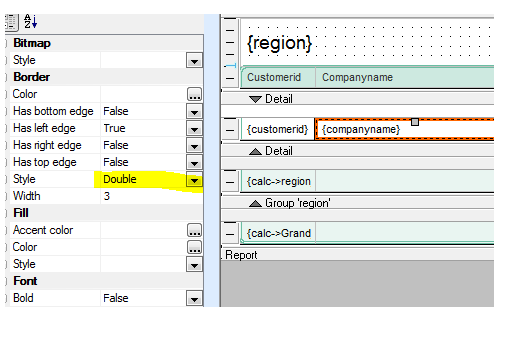
UX Component - Setting Default Values - Multi-valued Controls - Certain controls in a UX are multi-valued. For example, the checkbox control, a List control that has been configured to allow multi-select, a dropdownbox that has been configured to display more than one line and allow multi-select, etc.
To set the initial (i.e. default value) for a control, you can either set the value in the Default Value property in the control properties, or you can set the value in the onDialogInitialize event, using code like this:
e.control.color = "a"
However, there was no easy way to set the default value to more than a single value.
Now, when you specify the default value for a multi-value control, you can use a special array() keyword.
For example, to set the initial value for a checkbox that displays a list of colors, you can enter this in the Default Value property:
array(red,green,blue)
Or, you can enter this in the onDialogInitialize event:
e.control.selectedColors = "array(red,green,blue)"
UX Component - List Control - Custom Datasource - The Xbasic function that is called to compute the data in a List populated by a Custom data source can now return Javascript to the browser by setting a value in this property in the 'e' object that is passed into the Xbasic function for the Custom data source:
e.javascript
UX Component - List Control - SQL Data Source - AfterQuery Server-side Event - A new server side event is available for List controls that are populated using a SQL data source.
The AfterQuery event fires after the List query has been performed. The typical use case for this event is to compute some Javascript to return to the browser. For example, you might want to compute the total for a column in the List and then update some control on the screen.
Watch Video - Part 1
Watch Video - Part 2
Watch Video - Part 3
Download Components
argument_add_array_argument() Function - Adds or updates an array argument to a sql::arguments object.
The sql::arguments object can be populated with argument arrays (typically used when passing values to a SQL query that uses an IN clause).
Syntax: argument_add_array_argument( sql::arguments argumentObject, c argumentName, c argumentType, c argumentValues)
Example:
dim args as sql::arguments
dim cities as c
cities = <<%txt%
London
Boston
Bulawayo
%txt%
argument_add_array_argument(args,"color","c",cities)
UX Component - List Control and Data Series - Using Argument Arrays in SQL Queries - You can now use an IN clause with an argument array in the SQL query for a Data Series or List Control.
For example
SELECT customerId FROM customers where country IN (:array_whatCountry)
Notice that when using an IN clause with arguments, the argument name must start with array_.
Also notice that the argument reference in the SQL statement is in parentheses.
UX Component - Responsive Layout Genie - Mobile applications must run on multiple device form factors and must respond to orientation changes. You typically want to design a single UX component that will respond automatically (i.e. make layout changes) based on the device it is running on (e.g. phone, small tablet, large tablet, desktop browser) and the orientation of the device (mobile devices) or window size (desktop browsers).
The new Responsive Layout Genie makes it easy to create responsive layout designs.
Watch Video - Part 1
Watch Video - Part 2
Watch Video - Part 3
Download Components
To open the Responsive Layout Genie, click the smart field for the 'Responsive layout settings' property on the UX properties pane.
This will open the builder as shown below:

The builder is divided into three sections. In the first section you define your layout rules. In the second section you define the actions that should take place when a rule is true, and in the third section you define the properties for the action.
Rules
Layout rules are simply Javascript expressions that evaluate to true or false. The rules can reference special system fields, such as screen.width, or device.isWebKit.
IMPORTANT: Since the expression is Javascript, you need to use Javascript syntax, such as == for an equality test, && for an AND operator and || for an OR operator.
You can define as many rules as you want. Each rule you define is given a name. The name is arbitrary, but a meaningful name is recommended as you can refer to the rule name in client-side watch expressions.
For example, in the screen shot show above, there are two rules that have been defined.
To add a new rule click the Add Rule button an give the rule a name and enter its expression. When entering the expression, you can click the Insert Field hyperlink to get a list of available system fields to use in the expression.
The image below shows the system fields that can be used in the rule expression.

You can also save rule sets so that they can easily be imported into other UX components.
Actions
Actions are performed when a rule is true. You can define as many actions as you want. To add a new action, click the Add actions button. A dialog allows you to select the action you want to perform:

Once you have selected an action, the Properties for that action can be defined.
Properties
Action properties must be defined for each rules. Therefore, for a given action, you will select the first rule and define the action properties. Then you will select the next rule and define the action properties for this rule, an so on, moving through all of the rules.
Using Javascript to Specify an Action Property Value
In some cases you can use Javascript to specify the value of a property. For example, in the screenshot shown above, the 'Layout size' property for PANELCARD_2, for the 'portrait' rule has been specified as:
javascript:getpanelwidth(screen,device)
The 'javascript:' prefix indicates that the property value should be computed by calling a Javascript function. This function takes screen and device as inputs so you can reference the special system fields that the Javascript rules expressions reference. In the above case, we are calling a Javascript function, but we could just as easily specified inline Javascript code after the Javascript: prefix.
Viewing Generated Javascript
It can be useful to view the generated Javascript for the actions so that you can learn how certain actions are performed.
To see the generated Javascript, right click on an action in the builder.
The dialog (shown below) shows you:

When are Layout Rules Evaluated
Layout rules are evaluated:
When the Layout Rules are evaluated the rules are evaluated in the order in which they were defined. When a true rule is found, the actions for that rule are performed and a special property in the UX object is set with the name of the rule that was true.
You can reference this property as follows:
{dialog.object}._activeLayoutRule
Using Active Layout Rule Name in a Client-side Watch Expression
Client-side watch expressions (e.g. show/hide, dynamic images, enable and dynamic style) can reference a special system field called:
dialog.activeLayoutRule.
This field has the name of the currently active Layout Rule.
In the screen below, a container in the UX is only being shown if the 'landscape' rule is true.

Rules Mode
By default, the actions associated with the first Layout Rule that is true are executed and then further rules are not checked. However, you can set the Rules Mode to AllRules so that the actions for all true rules (not just the first true rule), are evaluated. To change the Rules Mode, you need to set the Responsive rules mode property in the UX Properties.
Manually Executing a Rule
Regardless of whether a rule is true or not, you can use a method of the UX object to force the actions for a particular rule to fire.
For example:
{dialog.object}.fireLayoutRule(ruleName)
UX, AppLauncher and Custom Component - Page Title Property - The components now have a page title property that allows you to set the page title when the component is run from an .a5w page.

Web Projects Control Panel - Search in Files - This feature has now been enhanced to allow you to specify the type of files to search
UX Component - List Control - Read-only Property - The List control now has a read-only property. This is especially useful if you have configured the list to behave like a carousel and you want to prevent any item in the List from displaying as selected. To find out what row a click, right click, or double-click action occurred on, your Javascript can reference
arguments[0]
This gives the zero based row index of the target row.
UX Component - Action Javascript - Panel Action - A new action to show/hide a Panel header or footer has been added.
ShowXML() Function - Displaying an XML Document Structure - The ShowXML() function is a utility Xbasic function that is helpful in understanding the structure of an XML Document.
The image below shows the user interface displayed by the ShowXML() function.
The first image shows the XML pane where the raw XML is displayed. The second image shows the Xbasic Properties pane is shown where a tree view of the Xbasic variable (into which the XML has been parsed) is shown.

*property_from_xml() Function - Populates an Xbasic Dot Variable with XML Attribute/Element Values - Xbasic has always had very strong XML parsing features (see Help, Open Documentation and search for 'Parsing XML Documents with Xbasic'), however the new *property_from_xml() function provides a new way in working with XML. This function populates an Xbasic dot variable with the data from the XML document. Once you have he Xbasic variable, it is very easy to extract a specific element or attribute value from the XML document.
UX Component - List Control - Word Wrapping Text in a Column - New options are available for controlling how long text in a list column should be handled. By default, long text is truncated and ellipses are displayed to indicate that the text is truncated.
You can turn on the word-wrap option for individual fields. When you turn on word-wrap, you now get a 'wordwrap option' property with these choices:
UX Component - Server Side Actions - Send E-mail - The server-side Send E-mail action now supports the option of using the Mandrill mail service to deliver the e-mail.
a5_ux_action() - New options added to the a5_ux_action() Xbasic Utility Function - The a5_ux_action() is a utility function that generates the Javascript for certain actions that the UX can perform. The use case for this function is to consolidate several Ajax callbacks into a single callback. New options have been added to this method. The full list of options current supported are summarized below:
The actions that can be performed by this utility function are:
List Control Action
Filter List
Refresh List
Refresh row(s) by key value
Append row(s) by key value
Refresh Data Series
Set UX into 'New Record' mode
Populate Controls with Data from a Table
Refresh choices in a dropdownbox control
List Control Action:Filter List
Filters/sorts the data in a List control.
This action is equivalent to the {dialog.object}.filterList() method.
Example:
Function myAjaxCallback as c (e as p)
dim ops as p
ops.Action = "Filter"
ops.filter = "country = :country and city = :city"
ops.order = "companyname desc"
'the arguments are specified in a crlf() delimited string.
'syntax is argumentValue|||type|argumentName
ops.parameters = "UK|||c|country" + crlf() + "London|||c|city"
'specify the id of the list to filter
ops.listId = "list1"
dim xb as c
xb = a5_UX_Action(e,ops,"ajaxListAction")
myAjaxCallback = xb
end function
List Control Action: Refresh List
Refreshes the data in a List control.
This action is equivalent to the {dialog.object}.refreshListData() method.
Example:
Function myAjaxCallback as c (e as p)
dim ops as p
ops.Action = "Refresh"
ops.listId = "list1"
dim xb as c
xb = a5_UX_Action(e,ops,"ajaxListAction")
myAjaxCallback = xb
end function
List Control Action:Refresh Row(s) by key value
Refreshes data in one or more rows of a List control.
This action is equivalent to the {dialog.object}._listRefreshRecordsByKey() mehod.
Example:
Function myAjaxCallback as c (e as p)
dim ops as p
'primary keys to refresh (case sensitive!)
ops.primaryKey = "EASTC,GALED,FURIB"
ops.listId = "list1"
ops.action = "refreshRowByKey"
'if the record to be refreshed is not currently in the list,
'should it be added to to the list?
ops.appendRowsNotInList = .f.
dim xb as c
xb = a5_UX_Action(e,ops,"ajaxListAction")
myAjaxCallback = xb
end function
List Control Action:Append row(s) by key value
Appends data to a List control.
This action is equivalent to the {dialog.object}._listFetchRecordsByKey() method.
Example:
Function myAjaxCallback as c (e as p)
dim ops as p
'primary keys to fetch and add to list (case sensitive!)
ops.primaryKey = "EASTC,GALED,FURIB"
ops.listId = "list1"
ops.action = "appendRowByKey"
dim xb as c
xb = a5_UX_Action(e,ops,"ajaxListAction")
myAjaxCallback = xb
end function
Refresh Data Series
Refreshes one or more data series. All controls that are bound to the data series are refreshed.
This action is equivalent to the {dialog.object}.refreshDataSeries() method.
Example:
Function myAjaxCallback as c (e as p)
dim ops as p
ops.Action = "refreshDataSeries"
ops.seriesNames = "series1,series2,series3"
dim xb as c
xb = a5_UX_Action(e,ops,"ajaxListAction")
myAjaxCallback = xb
end function
Set UX into 'New Record' mode
This action is equivalent to the {dialog.object}.newRecord() method
Example:
Function myAjaxCallback as c (e as p)
dim ops as p
myAjaxCallback = a5_UX_Action(e,ops,"NewRecord")
end function
Populate Controls with Data From a Table
(Applies only if the UX has been data bound). Populates controls on the UX with data from the data bound tables for a specified primary key value.
This action is equivalent to the {dialog.object}.populateControlsFromTable() method.
Example:
Function myAjaxCallback as c (e as p)
dim ops as p
ops.primaryKey = "ALFKI" 'case sensitive!
dim js_getRecord as c
ops.__dtfmt = e.rtc._state.__dtfmt
dim js as c
js = a5_UX_Action(e,ops,"populateControlsFromTable")
myAjaxCallback = js
end function
Refresh choices in a dropdownbox control
This action is equivalent to the {dialog.object}.refreshDropdownBoxChoices() method.
Example:
function myAjaxCallback as c (e as p)
dim js as c
dim ops as p
'name of dropdowncontrol to refresh
ops.controlName = "CITIES"
'if the control is in a repeating section should just the current instance
'be repopulated
ops.currentRepeatingSectionRowOnly = .f.
'filter for query
ops.filter = "country = :whatcountry"
'argument value - format is value|||type|argumentName
ops.arguments = "USA|||c|whatCountry"
'value in dropdownbox to select after it has been populated
ops.selectedValueAfterPopulate = ""
js = a5_ux_action(e,ops,"refreshDropDownBox")
myAjaxCallback = js
end function
SQL Query Genie - Export to Excel - The 'Actions' button on the SQL Query Genie toolbar now has a new option - export to Excel.
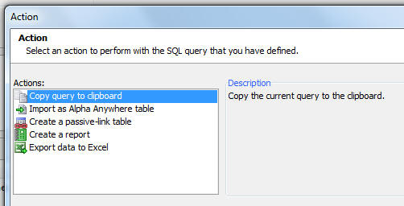
TabbedUI Object - New methods added to the TabbedUI object - You could previously get the active Pane by examining private variables in the tbiObj object. Now, these new methods provide an easier method.
tbiObj.getCurrentPaneIndex() - zero based pane number for the current pane
tbiObj.getCurrentPaneName() - internal name of the current pane
tbiObj.getCurrentPaneLabel() - HTML label for the tab current pane.
You can also programmatically set the active pane, either by its index (zero based), or by it label.
tbiObj.selectPaneByIndex(index) - set active pane by index
tbiObj.selectPane(label) - set active pane by Label
UX Component - Frame and Container Controls - Client-side Conditional Style and Class - You can now define client-side watch expressions to automatically change the style and/or class of a container or frame control. Previously, conditional client-side style and class were limited to input controls, buttons, etc.
UX Component - Repeating Sections - Setting a Column Width Using Javascript - A new method has been added to the UX control to allow you to programmatically change the width of a Repeating Section column at run-time.
{dialog.object}.setRepeatingSectionColumnWidth(columnName,width);
Width is expressed using CSS units (e.g. '100px'). Percentage widths are not supported.
Mobile Theme - Slate - A new stylesheet for mobile applications is ready for testing. This style (screenshots shown below) is not yet complete and will only work for UX components. If does not contain any CSS classes for Grids or Tabbed UI. We are making this new style available to mobile developers now to get feedback on what you like and don't like about the style.
To download the style click here. Unzip the file into the CSS folder where you have Alpha Anywhere installed. This will create a new folder called Slate in the CSS folder. To use the style, edit a UX component, and then change the style name for the component to 'Slate'.
1 |
2 |  |
pdf_optimize() Function - Optimize a PDF document to make it smaller. Results may vary based on the compression of the original file, but file size may be reduced by up to 50%.
Syntax:
pdf_optimize(C file [, C NewFile])
If NewFile is not specified the input file is replaced.
json_generate() Function - Performance - The json_generate() function has been re-written and is now considerably faster.
NOTE: Previously the json_generate() function would escape single quotes. However the JSON spec does not require this and so single quotes are no longer escaped. For example:
dim pj as p
pj.text = "some text with ' single quote"
?json_generate(pj)
= {
"text": "some text with ' single quote"
}
UX Component - Spin List Control - Large Data Sets - There has been a significant improvement in the time taken to populate a Spin List control when populating it with a large number of choices.
UX Component - Map Control - Specifying the Map Language - By default, the language used on the Map control is based on the browser setting for language preference. A new property has been added to allow you to specifically set the language preference. To get a list of valid language code go to:
http://msdn.microsoft.com/en-us/library/ms533052(VS.85).aspx
SQL Query Genie - Count Query - When you build a SQL query using the SQL Genie and you preview the query, a count query is automatically performed when your query is executed. This is done so that your preview will show you how many records satisfied the query. However, in some cases the database to which you are connected might take a long time to execute a count query and therefore you might want to turn off the count query when previewing your query. A new property on the Properties pane of the SQL Genie allows you to do this.
UX Component - Action Javascript - Buttons - A new action has been added to Action Javascript to enable or disable a button. This action only applies to Advanced Buttons (all buttons in a UX component are advanced buttons by default).
email_send_mandrill() Function - Setting the Key Value Globally - You can now set the key for this function in the Web Project Properties dialog. If you do set the key in Web Project Properties, then you can pass in a blank key in the email_send_mandrill() function. If you pass in an explicit key when calling email_send_mandrill(), then the key you pass in will override the gloal key.
Grid and UX Component - Field Validation - Xbasic - If you write custom Xbasic code to validate an individual field, your Xbasic code and now send back a Javascript response to the client by setting this property in Xbasic code:
e.javascript
UX Component - Buttons - .getControl() Method - The {dialog.object}.getControl() method can now be used to get a pointer to a button object. Once you have a pointer to the object, you can call the .setDisabled() method.
For example:
var bObj = {dialog.object}.getControl('BUTTON_1');
//set the button disabled
bObj.setDisabled(true);
//now enable the button
bObj.setDiabled(false);
NOTE: As a result of this change, if you have a client-side enable expression for a button in a Repeating Section, you will need to edit the enable expression and resave it in order to re-generate the Javascript code.
ADVANCED NOTE: If you have a button in a Repeating Section, the .getControl() method will point to ALL of button instances (i.e. the button in row1, row2, etc.). If you then call the .setDisabled() method, you will be set the state on the button in each row.
If you want to call the .setDisabled() method for a specific button instance (say the button in row 3), then you can pass in an optional parameter to the .setDisabled() method. For example:
//get a pointer the button element in row 3
var eles = $('{dialog.componentname}.V.R1.BUTTON_2_A5INSTANCE3');
//pass in eles as an optional argument to the .setDisabled() method
{dialog.object}.getControl('BUTTON_2').setDisabled(true,eles);
| UX Component | Preventing a Panel from Losing Focus | A common design pattern in a mobile application is to have multiple Panel Cards inside a Panel Navigator. If one of the Panel Cards contains a form, you might want to prevent the user from navigating to another Panel Card if the form has been edited, but not yet been saved.
In this video we show how this is easily done using the Panel Navigator's onBeforePanelActivate event. The same techniques can be used in a PanelLayout. Watch Video Download Component |
| UX Component | Responsive Design - Dynamically Resizing Controls on Orientation or Window Size Change - Understanding the FlexLayout Container | A common requirement when designing a UX component is to have a control dynamically resize when the orientation of a mobile device changes or when the window size (in a desktop browser) changes. This is easily accomplished using the FlexLayout container on a UX.
Any of the controls in a FlexLayout container can have their width specified as a 'relative' size (relative to the size of the other controls in the FlexLayout container). This video shows how to use the FlexLayout container type. Watch Video - Part 1 Watch Video - Part 2 |
UX Component - Image Upload Action - Thumbnails - If you specified that you wanted to create a thumbnail when uploading images, and the target for the thumbnail image was a character field in the target table, the 'image filename transformation expression' was being ignored and the actual filename for the thumbnail image that was stored was always just the short filename.
<Resultset>.ToJSONObjectSyntax() method - The JSON generated by this AlphaDAO method has been changed. Previously, the values in the generated JSON were single quoted. Now, to be consistent with the official JSON syntax, values are double quoted.
UX Component - Tab Control - Genie Style - If a 'genie' style Tab Control was wrapped in a Container control and the [Tab Control End] control came immediately before the [ContainerEnd] control, the genie buttons did not render.
Grid Component - Images - Under some circumstances, if a Grid contained an image control, it would generate an error. This was a newly introduced bug. If you received this error, you will need to edit and resave the Grid.
UX Component - PanelNavigator and PanelLayout - onBeforePanelActivate Event - A new event has been added to the PanelNavigator and the PanelLayout. This event is useful if you want to prevent the Panel that has focus losing focus. For example, if the form fields on a Panel have been edited, but not yet committed, you might want to prevent the Panel from losing focus. This is much like preventing a pop-up window that contains a Grid or UX component from closing if the child component has been edited.
If the Javascript that you define in the onBeforePanelActivate event returns false, then any attempt to activate another Panel will fail and focus will remain on the Panel that currently has focus. If the event returns true, then you will be able to give focus to another Panel.
Watch Video
Download Component
UX and Grid Component - Image Upload - Thumbnails - The Action Javascript builder now has a new option in the Thumbnail Definition Builder to allow you to specify if the thumbnail file that is created should overwrite an existing file, or be renamed, so as not to conflict with existing files.
UX and Grid Component - Image Upload - File Rename - When you upload images or files and store the uploaded images or files in a filename on a server, there is an option to rename the file if there is an existing file with the same name on the server. The algorithm that computes the filename in the case of a conflict has been changed slightly.
Previously, if a filed called "c:\myimages\image1.jpg" existed and you wanted to create a new file called 'image1.jpg', the new file would have been called "c:\myimages\images2.jpg". This is now changed to "c:\myimages\myimage1_1.jpg".
UX Component - FlexLayout Containers - A new container type in the UX component makes it easy to dynamically size controls when the orientation of the device changes (mobile devices), or the window size changes (desktop browsers).
Watch Video - Part 1
Watch Video - Part 2
The purpose of the FlexLayout container is to dynamically size the widths of controls that are on a single line. This container does not size the height of controls.
NOTE FlexLayout containers are not supported in Repeating Sections.
For example in the image below, the device is in portrait mode. The button to the right of the textbox control is set to have a fixed size of 80px. The text box has been set to have a flexible width, so it consumes all of the available space (less the built-in padding between controls, defined by the A5CWLayout class padding property).

Notice in the image below, when the device orientation is changed to landscape, the button size has not changed - it is still 80px wide. But the textbox had grown in width.
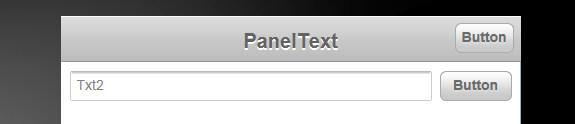
Here is how the textbox and button control are represented in the builder. Note that the controls are wrapped in a container with a sub-type of 'FlexLayout'.

When you set the container sub-type to FlexLayout, a new property in the Property Grid is exposed. The image shows that the 'Flexible layout width settings' have been set to:
flex(1),80px
This means that the first control in the FlexLayout container will have relative width of flex(1) (this is the textbox), and the second control (i.e. the button) will have a fixed width of 80px.

The property has a smart field which brings up a builder to help you set the control widths.
Notice that the builder also shows the 'Defined Width' for each control. The 'Defined Width' is the width that was defined for each individual control.
Typically when you wrap controls in a FlexLayout container, you will want to set each control's Defined Width to 100%. The builder will show you at a glance if any of the top-level controls in the FlexLayout container have not been set to 100%.
The 'Break' column will also show you at a glance if any of the top-level controls in the FlexLayout have breaks after them. You should not have breaks after top-level controls, so the builder will give you a warning to fix this problem.
In the case where only one control in a FlexLayout container has a 'flex' width, the meaning of the flex setting is simply to fill the available space on the line (after allocating space to the fixed size controls).
However, if you have two or more controls with a 'flex' setting, then all of the flex controls together will fill the available space (after allotting space to any fixed size controls), and each 'flex' control will have a relative size based on its 'flex' setting.
For example, if you have two flex controls with settings of flex(1) and flex(2), then the second control will always be twice the width of the first control.
| UX Component | Storing and Restoring the 'state' of a UX Component with multiple Panels | UX Components can use complex layouts that involve multiple Panel Cards inside Panel Navigators and Panel Layouts. You might want to persist the state of the Panel (i.e. remember which Panel Card in a particular Panel Navigator is active and which Panels in a Panel Navigator have been docked) so that you can later restore this state. This video shows how this can be done.
Watch Video Download Component |
SQL Server 2008 - Date Fields - Occasionally, users report a problem when trying to update a MS SQL table that has a 'Date' field. The problem is caused because the correct Microsoft files are not installed on the machine where SQL Server is running. The error reported by SQL Server is:
"Function requested is not supported"
The correct MIcrosoft drivers can be downloaded here:
Here are the links to the download on the Microsoft web site:
X86
Package(sqlncli.msi) - 4549 KB
X64
Package(sqlncli.msi) - 7963 KB
IA64
Package (sqlncli.msi) - 11112 KB
Forms - Embedded Browse - Data Entry - Fixed a cosmetic issue with data entry when working with a set that has a one-to-one link off a table that is linked to the parent in a one-to-many link.
UX - Signature Capture - If the UX component was not using Panels, and if the component had been vertically scrolled, the signature capture area did not scroll with the window. This only affected UX components that did not use Panels.
UX Component - Image and File Upload Actions in Action Javascript - As a result of a change made in a recent update to make the value in the client side controls available to the server side Xbasic events, when you clicked the button to upload a file or image, the popup window which was displayed did not have any controls in it. This bug, however, only happened if there were a large number of controls on the UX component. It also only happened in IE. The reason it happened is that the maximum length for a query string was exceeded. This is now fixed.
UX Component - Image and File Upload Actions in Action Javascript - Xbasic Event Handlers - When the Xbasic event handlers execute, the value of the control on the UX component are now available in the
e.formData
property. Previously, the data was made available in another of the e object's properties. If you have an event handler that references client side control values, you will need to change your code.
UX Component - Image Controls (Data Bound) - Repeating Sections - Fixed a bug that was introduced in the last update.
Email - Sending Email Using the Mandrill Email Service - Alpha Anywhere has always offered Xbasic functions to send email. However, these functions require that you have access to a SMTP mail server. The existing functions in Xbasic include:
With the emergence of email services, such as Mandrill (www.mandrillapp.com) an alternative, possibly easier, certainly more powerful, way of sending emails from your applications is now possible.
A new function,
email_send_mandrill()
allows you to send email using the Mandrill service.
Benefits of using a 3rd party emailing service include the easier setup, better deliverability, and access to powerful value added features offered by the service, such as tracking whether people open your email message, etc.
The full functionality of the Mandrill email service can be read by navigating to this address:
https://mandrillapp.com/api/docs/index.JSON.html
In order to use the Mandrill email server, you will have to visit their web site and apply for a key. The key allows you to send a certain number of free emails each month. Beyond that, there is a fee.
NOTE: Alpha Software is not involved in any way at all in the fee and does not receive any payment at all if you use the Mandrill service.
There are two different ways in which you can use the email_send_mandrill() function.
1. Simple Method: Define Message Using Xbasic Dot Variable
In the simple method, you define an Xbasic dot variable that defines the properties of the message you want to send and then you call email_send_mandrill(), passing in your Mandrill key and the dot variable. This simple method does not expose all of the functionality of the Mandrill service, but it is very easy to set up and use, and it is great for simple email messages.
For example:
'create a .dot variable to define the message
dim ms as p
ms.send_to = "john@acme.com:John Smith,sally@acme.com:Sally Jones"
ms.send_to_cc = ""
ms.send_to_bcc = ""
ms.from_email = "sales@alpha.com"
ms.from_name = "Sales at Alpha" 'friendly name - optional
ms.subject = "Information You Requested"
ms.message_html = "Here is the <b>information</b> you requested."
ms.message_text = "Plain text version of the message"
ms.attachments = "c:\files\mychart1.pdf,c:\files\mytext1.txt"
Notes About the Properties in the Dot Variable
CC and BCC Addresses
Even though the Dot variable allows you to specify separate comma delimited lists for the TO and CC addresses, in reality, Mandrill does not support CC addresses. Furthermore, Mandrill only supports a single BCC address.
If you specify any CC addressesl, the TO list and the CC list of addresses is combined into a single list and the emails are sent to all addresses in the combined list. However, the Mandrill internal .preserve_recipients property is set to false, so that none of the recipients will see the names of any other recipients.
If you provided a list of names in the TO list, and no names in the CC list, the recipients of the email would all be able to see the names of the other recipients.
Once you have defined the .dot variable, you can send the message. For example
dim pResult as p
pResult = email_send_mandrill("mysecretkey",ms)
The function returns a .dot variable with several properties:
Here is what a typical item in the .result array looks like:
result[1].email = "john@acme.com"
result[1].status = "sent"
result[1]._id = "some message id" --- used to make queries against the Mandrill API for message status
Here is a complete example of sending an email in the simplest possible way (eliminating all optional properties in the Xbasic .dot variable). As you can see, it just a few lines of code.
'create a .dot variable to define the message
dim ms as p
ms.send_to = "john@acme.com:John Smith,sally@acme.com:Sally Jones"
ms.from_email = "sales@alpha.com"
ms.from_name = "Sales at Alpha" 'friendly name - optional
ms.subject = "Information You Requested"
ms.message_html = "Here is the <b>information</b> you requested."
dim pResult as p
pResult = email_send_mandrill("mysecretkey",ms)
Alternative Method for Specifying Attachments - Specifying the Attachment Data
We have previously indicated that attachments are specified by setting the .attachments property to a comma delimited list of filenames. An alternative method is to set the .attachmentsArray property as a property array with .name, .type and .content properties.
Where:
For Example
dim ms.attachmentsArray[1] as p
ms.attachmentsArray[1].name = "chart.pdf"
ms.attachmentsArray[1].type = resolve_mime_type("pdf")
ms.attachmentsArray[1].content = base64encode(file.to_blob("c:\myfiles\chart.pdf"))
Merge Variables - Mail Merge Variables into the Message Body and Subject
An advanced feature of the Mandrill service is to allow you to specify placeholders in the message subject and body that will be replaced with variables that you supply at the time Mandrill sends out the email to each recipient.
The format for the placeholders is:
*|VariableName|*
For example, here is how the message subject or body could have been specified using placeholders:
ms.subject = "*|Fname|*, here is the Information You Requested"
ms.message_html = "*|Fname|* *|Lname|* here is the information you requested."
When you use placeholders in the subject or body, you must specify the placeholder values. Obviously, you need to specify placeholder values for each recipient.
For example, assume that you had specified two recipients as follows:
ms.send_to = "john@acme.com:John Smith,sally@acme.com:Sally Jones"
You would then need to specify the FName and LName variables for john@acme.com and for sally@acme.com.
Here is how you would do this:
'define the .merge_vars[] array with 2 items
dim ms.merge_vars[2] as p
'define the actual variables for the first recipient.
'since there are two variables, we define a sub-array with two items
dim ms.merge_vars[1].vars[2] as p
'here are the variables for the first recipient
ms.merge_vars[1].vars[1].name = "FName"
ms.merge_vars[1].vars[1].content = "John"
ms.merge_vars[1].vars[2].name = "LName"
ms.merge_vars[1].vars[2].content = "Smith"
ms.merge_vars[1].rcpt = "john@acme.com
'here are the variables for the second recipient
dim ms.merge_vars[2].vars[2] as p
ms.merge_vars[2].vars[1].name = "FName"
ms.merge_vars[2].vars[1].content = "Sally"
ms.merge_vars[2].vars[2].name = "LName"
ms.merge_vars[2].vars[2].content = "Jones"
ms.merge_vars[2].rcpt = "sally@acme.com
In addition to supplying merge variables for each recipient, you can also supply global merge variables - for all recipients. You do this by specifying the .global_merge_vars property array. If a merge variable is defined at the individual recipient level, it will override the corresponding global merge variable.
For example:
dim ms.global_merge_vars[1] as p
ms.global_merge_vars[1].name = "Company"
ms.global_merge_vars[1].content = "Alpha Software"
Using a DataSource Property
Instead of supplying the actual email addresses and merge variables directly in the dot variable you can pass in a 'dataSource' (an array of JSON objects), and then indicate that the .send_to property should be populated from the data source.
For example, consider the following definition of the .dataSource property:
ms.dataSource = <<%txt%
[
{email: "sam@acme.com", firstName: "Sam", lastname: "Smith"},
{email: "joe@acme.com", firstName: "Joe", lastname: "Jones"}
]
%txt%
If the above .dataSource property has been defined, then you can define the .sent_to property as follows:
ms.send_to = "{datasource:email}"
This indicates that the .send_to property should be populated from the 'email' property in the dataSource.
If you pass in a .dataSource property, then there is no need to pass in the .merge_vars property - these properties are automatically generated from the data in the .dataSource property.
Here is what happens if you pass in a .dataSource property: The .message_html, .message_text and .subject properties are scanned to see if any merge-variables are used. If any merge variables are found in any of these properties, then the merge variables for each address are automatically extracted from the .dataSource property.
Using the .dataSource property, it is extremely easy to create a mass mailing with custom merge variables for each recipient.
2. Advanced Method: Define Message Using a JSON String
The JSON method exposes the full functionality of the Mandrill service. To see all of the options that are available, please see the Mandrill API documentation.
If you want to use advanced features, like track opens, or schedule delivery, you will need to use this option.
Here is an example of how you can use this method:
DIM json as C = <<%str%
{
"message": {
"to": [
{
"email": "john@acme.com",
"name": "John Smith"
}
],
"from_email": "Sales@alpha.com",
"subject": "Information You Requested",
"html": "Here is the <b>information</b> you requested",
"text": "Plain Text Message",
"preserve_recipients": false
},
"asynch": false,
"ip_pool": null,
"send_at": null
}
%str%
dim pResult as p
pResult = email_send_mandrill("mysecretkey",json)
Generating the JSON String From Xbasic
Xbasic has powerful functions for generating JSON from an Xbasic dot variable. For example, the json_generate() function will generate JSON from a .dot variable. A powerful way to programmatically construct the JSON string that you pass into the email_send_mandrill() function is to build up an Xbasic .dot variable with the various properties that you want to set, then call json_generate() to generate the JSON.
| UX Component | Chart Control - Dynamically Changing the Chart Appearance by Changing the Stylesheet | In the previous video we showed how aspects of the chart appearance could be changed at run-time. In this video we show how a dynamic stylesheet can be applied to the chart to control even more aspects of the chart appearance.
Watch video Download Component TIP: To get started creating a custom stylesheet for a chart, you should start with the style builder, then convert to CSS. See video. |
| UX Component | User-defined Sub-themes to Style UX Component Controls | Many of the controls on a UX component allow you to specify a sub-theme. The sub-theme controls various aspects of a control's appearance and also behavior. For most of the controls there are several built-in sub-themes to chose from. For example, buttons have sub-themes that can make the button look like a 'back' or 'next' button. A powerful aspect of sub-themes is the fact that it is very easy for developers to create their own sub-themes to create highly customized appearances for controls on a UX.
In this video we show how a custom sub-theme for a window can be created and used. Watch Video - Part 1 Watch Video - Part 2 Download Component |
| UX Component | Getting a Pointer to a Parent or Child Component So You Can Call Methods of the Parent or Child Component | The ability to re-use components and open a child component in a window, div, TabbedUI pane, Panel, or embed into a parent component is one of the most powerful aspects of the Alpha Anywhere architecture.
When you open a component from a parent component, you will often want to get a pointer to the child component so you can manipulate it in your Javascript code in some way. For example, you might want some code in the parent component to read a control in the child, or set a value in the child. Similarly, you might want some code in the child component to read or set a control in its parent. The .getParentObject() and .getChildObject() methods are used to get pointer to an object's parent or child objects. In this video, we show how this is done. Watch Video - Part 1 Watch Video - Part 2 Download Component |
| Grid Component | Putting the Search Part in a Pop-up Window | In this video we show how the Search part of a Grid component can be shown in a window. By default, the Search part is shown on the page directly above the Grid part, but by showing the Search Part on in a window, you can save space on the page.
Watch Video Download Component (requires a connection string called 'Northwind' that points to the sample Northwind.mdb files database in the MDBFiles folder). |
| UX Component | Example App Showing How to Synchronize an Embedded UX Component when a Value in a Parent UX Component Changes | A common pattern when building mobile applications is to break the application into multiple sub-components and then embed child components into the parent component. Using this pattern, you break your application into manageable pieces. However, when you follow this pattern, it is often necessary to synchronize the embedded child component when a value in the parent component changes.
In this video we show a sample application that shows customers in the sample Northwind database. An embedded UX component shows the orders for the selected customer. When the user selects a different customer, the embedded 'Orders' UX component is synchronized. Watch Video - Part 1 Watch Video - Part 2 Watch Video - Part 3 Download Components (requires a connection string called 'Northwind' that points to the sample Northwind.mdb files database in the MDBFiles folder). |
| UX and Grid Component | Handling Missing Images | When a UX or Grid component displays images, there is a possibility that an image referenced in an image tag is missing. A new onImageError client side event allows a developer to programmatically handle this situation and decide what image to display in place of the missing image.
Watch Video |
| UX Component - List Control | Custom Layout - Setting a List Item Size to Fill the Screen - Understanding the 'Fill' Option for List item size and Custom Scrolling Options. | When you are working with a List control that uses a free-form layout for the List, you can set the height (and width in the case where the List is set to scroll horizontally) of each 'row' (i.e. 'item') in the List. In addition to setting an explicit size (say 200px) for an item height or width, you can also use the special 'fill' keyword to indicate that the item should fill the viewport.
When you use the 'fill' option, it is often desirable to customize the way in which the List scrolls, so that it scrolls in discrete amounts (for example the size of the viewport) rather than scrolling continuously. By setting the item size to use the 'fill' keyword, and by customizing the List scrolling, it is possible to make a List behave much like a Panel Card in a Panel Navigator. In this video we show how these options are used. Watch Video - Part 1 Watch Video - Part 2 |
| UX Component | Signature Capture Control | A common requirement in mobile applications is the ability to capture a signature and store the signature in a database. In this video we show how this is easily achieved by placing a Signature Capture control on a UX component.
Watch Video - Part 1 Watch Video - Part 2 |
| Reports | Printing QR Codes | Video shows how to print a QR Code on a report.
Watch video |
| UX Component | Using a UX Component to Create a Login Component for a Mobile Application | A common requirement for any application, Mobile included, is to authenticate users before they can interact with the application. There are several ways in which authentication can be performed in Alpha Anywhere. These include using the standard Login component, or using the AppLauncher. In addition to the above two techniques, you can also build a UX component for performing the authentication.
The advantage of building the Login screens using a UX component is that you can make a much richer UI for the login and it can include standard mobile elements like Panel Headers, etc. In this video we show how an authentication layer has been added to a mobile application. Watch Video - Part 1 Watch Video - Part 2 Watch Video - Part 3 Watch Video - Part 4 Watch Video - Part 5 Download Web Project Used in Videos - Note: To use the project, create a new, empty Web Project, then click the 'Open Project Folder in Windows Explorer' button and paste these files into the folder. The passwords for the sample accounts are: a@a.com - aalpha, s@a.com - salpha m@a.com - malpha |
AlphaDAO - Customizing the Connection String - The AlphaDAO connection string builder might not expose some setting that you would like to use. For example, in the case of Postgres, the connection string builder does not expose the option to use SSL.
Here is what an connection string for Postgres might look like:
{A5API=PostgreSQL,Server='localhost',Port='5432',UserName='postgres',Password='mypassword',Database='postgres'}
The properties that we would like to set are:
ssl=true
sslmode=require
In general, any values Alpha Anywhere doesnt recognize in the connection string are passed directly through. This makes it possible to provide values we dont support in the user interface yet.
The above connection string can therefore be modified as follows:
{A5API=PostgreSQL,Server='localhost',Port='5432',UserName='postgres',Password='mypassowrd',Database='postgres',ssl=true,sslmode=require}
UX and Grid Component - In-line Style Property - Library - Many of the controls in both the UX and Grid components allow you to define an in-line style. The in-line style builder now has two links at the bottom of the screen that allow you to save commonly used in-line style definitions in a library and then retrieve from the library.

UX and Grid Component - Password Controls - Watermark - When you set a textbox control to be a 'password' control and you also turn on the watermark property, previously, the watermark was not readable because it was displayed using the same characters used to hide the text that the user typed into the field. Now, when no text has been typed into the field, the watermark is displayed in clear text, so it is readable.
Web Applications - Project Properties Dialog - Allowed File Download Folders - When defining the folders from which files are allowed to be downloaded, you can now use the <ApplicationRoot> placeholder. This placeholder is replaced at run-time with the value for the webroot.
Web Project Properties - Linked CSS Files - The Web Project Properties dialog now allows you to specify linked CSS files. This is useful if you have some CSS that you want to have available to all of the component in your project. Instead of linking the CSS files in the individual components, you can not link the CSS in a central location. The same comments apply for linked JS files.
Grid Component - Detail View - Method for Opening Detail View - A new option has been added for the method for opening the Detail View. The 'programmatic' option allows you to add your own button or event handler to open the Detail View. For example, you might want to have a button in the Grid row that opens the Detail View. The event handler for this would be:
{grid.object}.detailView({grid.rowNumber});
If the button to open the Detail View as not placed in each row of the Grid, but instead was placed (for example), in the Grid header or footer, then the {grid.rownumber} placeholder is meaningless and cannot be used to indicate the row for which the Detail View should be opened. In this case, your Javascript would be:
//get the row number of the currently selected row
var rowNum = {grid.object}._selectedRow;
{grid.object}.detailView(rowNum);
UX Component - Integrated Login Functionality - The UX Component can include integrated login/logout functionality.
This means you don't have to use a separate Login Component, or (AppLauncher with login turned on) to authenticate users in your application.
In this video we show how an authentication layer has been added to a mobile application.
Watch Video - Part 1
Watch Video - Part 2
Watch Video - Part 3
Watch Video - Part 4
Watch Video - Part 5
The primary use case for integrated login in the UX component is for mobile applications where the application is typically built using a UX component.
However, another use case for the integrated login in the UX is to build a custom login dialog to replace the built-in Login component.
To turn on the integrated login feature, go to the Properties pane on the UX Builder and check the 'Has integrated login functionality' property, as shown in the image below:

Once you check this property you get prompted for some additional properties.
'User name control' and 'Password control' - You must specify which controls on the UX component are used for entering the username and password. Your UX component will therefore need to have two controls (likely textbox controls) where the username and password are entered.
TIP: For the password control, be sure to check the 'Password' property so that the password is hidden when the user is entering it.
Placeholder for login errors - You must put a placeholder control on the UX (see [Placeholder] in the Other Controls section of the UX Builder toolbox) to indicate where login errors should be shown. Use this property to specify the name of the placeholder.
Customize login failure messages - You can customize the various messages that the security framework displays when login errors occur.
Logout does a full page reload - When the user logs out, do you want this UX component to reload?
If you check this option, the component's layout is re-computed on the server (and controls on the UX for which membership in security groups are required are hidden).
Here is why this is an important property to understand:
Assume that when you design the UX component you set the security property on certain controls in the component so that they are only visible to users who are in a certain group (i.e. security role). For example, you might have a button called 'Increase Salary' and you might have set the security on this button to only show the button for users who are in the 'Manager' group.
Assume that the current user is logged in as a member of the 'Manager' group - so she sees this button.
After this user logs out, you will want to ensure that this button is no longer visible. So, forcing the component to reload will cause the server to re-compute the layout of the UX component, and the button will be removed when the server sends back a re-rendered version of the component - because the user will no longer be logged in as a member of the 'Manager' group.
Login/Logout Buttons
Once you have configured your UX component to turn on integrated login functionality, you will also need to add buttons to the UX component to login and logout.
The event Javascript code that will need for these buttons is shown below:
Login
{dialog.object}.login();
Logout
{dialog.object}.logout();
Tip: You can select the 'Login-Logout' item in the 'Defined Controls section of the toolbox to automatically add login/logout buttons and also the placeholder for login errors.

Server-side Events
When the user clicks the 'login' button to login, an Ajax callback is made to authenticate the user. There are several
server-side events for login and logout.

beforeLogin - This event fires before any attempt is made to authenticate the user. A possible use for this event is to log out any user who might be logged in (use the A5WS_LogoutUser() function).
onLogin - Fires after the user is authenticated. The event fires regardless of whether the authentication was successful or not. The e.loginSucceeded flag indicates if the login was successful or not. An important use of this event is to force a reload of the component on login. See the discussion below on 'Forcing a Reload of the UX Component After Login' for more details. This event can also be used to set the 'friendly user name'. The 'friendly user name' is made available in client-side 'afterLogin' event. It can also be used in client-side watch expressions.
onLogout - Fires after the user logs in.
Client-side Events
When the user logs in or logs out there are several client-side events that fire, as shown in the image below.

The afterLogin event can be used to display a message on the screen indicating the (friendly) name of the logged in user.
For example, assume you have a static text control on the UX with this text:
Logged in as: <span id="loggedinusername"></span>
In the afterLogin event, you could add this code:
var ele = $('loggedinusername');
ele.innerHTML = e.userNameFriendly;
You might also put a client-side show/hide expression on the label as follows:
dialog.isLoggedIn = true
This will cause the static text control to be hidden when there is no logged in user.
In a Mobile application, a common design pattern is to put the login screen in a Panel Card and the application in one or more additional Panel Cards. The Panel Cards would then all be wrapped in a Panel Navigator that was set to 'programmatic' mode for the method of navigating the Panels. In the afterLogin event you would set focus to the first Panel Card in the application. In the afterLogout event, you would set focus back to the Panel Card that contains the logn form.
Forcing a Reload of the UX Component After Login
After the user has logged in you might want to force the UX component to reload. Consider the following scenario which explains a use case for this option:
Assume that the application you have built is a single UX component, and it has integrated login functionality. Assume also that this component has certain controls that have security on them (for example a 'Set Salary' button that is only visible to member of the 'Manager' group).
When the UX is initially loaded, the 'Set Salary' button will not be visible (because the user is not yet logged in).
Now assume that the user enters their username and password and clicks the login button. This will fire an Ajax callback and the user will be authenticated. Assume that the user is now authenticated and is part of the 'Manager' group.
This user should now see the 'Set Salary' button, but does not because when the UX was originally rendered, the user was not logged in.
However, by forcing a reload after login, the component will be re-rendered on the server and the user will see the 'Set salary' button.
The way in which you force a reload of the UX component after login is by setting the e.url property in the onLogin server-side event. For example, you could add this code to the onLogin server-side event:
e.url = "<thisComponent>"
NOTE: If you are forcing a reload after the UX component loads, you will likely also want to set the 'Logout does full page reload' property to true.
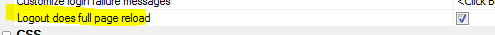
Friendly User Name
For security reasons, it is not a good idea to expose the logged in user name on the client-side after the user has logged in. In the onLogin server-side event you can execute code to translate the user name that the user logged in with into a 'friendly' user name which can be safely displayed on the client-side.
For example, assume that you had a table that had two columns - 'userName' and 'friendlyUserName'
An example entry in the table might be:
jsmith23 John Smith
In your onLogin server-side event you would execute code to set e.userNameFriendly by looking up the friendly name for the user name.
Once you have set e.userNameFriendly in the server-side event, it can be used in the afterLogin client-side event and also in watch expressions.
TIP: If you do want to have the real logged in user name available on the client-side (for example, so that you can display it in a message like 'Logged in as: james@acme.com'), then you can always set the friendly name to the same as the user name in the onLogin server-side event.
Client-side Watch Expressions
The client-side watch expressions (e.g. the show/hide, enable, conditional style) can reference the following system fields that are populated with login information:
dialog.isLoggedIn
dialog.loggedInUserNameFriendly
Note: The system fields that you can use in watch expressions also include dialog.loggedInUserName, but this value is always set to 'hidden_for_security_reasons'. If you want to make the real logged in name available on the client-side, then you can set the friendly user name to the real logged in user name in your server-side onLogin event.
Mobile Applications - Adding Login/Logout
The following section describes a common design pattern for adding authentication to a mobile application.
In the image below we show the structure of the UX component that contains the login/logout logic.
NOTE: You can get a quick start building this component for yourself by selecting it from the list of available templates when you create a new UX component. Select the 'Security Framework - LoginComponentMobileApp' template.

The basic structure of this UX component is a Panel Navigator with two Panel Cards. The Panel Navigator has been set to 'Programmatic' (meaning that a Javascript command, and NOT a user 'swipe' on the screen is needed to navigate from one Panel Card to another).
The first Panel Card contains the login and password prompts.
The second Panel Card contains an embedded UX component. This component is your application.
After the user has successfully authenticated, the client-side afterLogin event fires and set focus to the Panel Card that contains the embedded UX (i.e. the application). The client side event executes this code:
{dialog.object}.panelSetActive('PANEL_APPLICATION');
The [Embedded Object] control (i.e. the UX component for your application) is set to only render when the Panel gets focus. This is very important. It means that the embedded component is not rendered until AFTER the user is authenticated. At that point, the server knows what role (i.e. groups) the user is a member of, and when the component is rendered, any controls that are conditioned on membership of specific security groups can be included or excluded in the component.
When the user logs out of the application, the PANEL_LOGIN panel in the parent UX component is shown.
In this video we show how an authentication layer has been added to a mobile application.
Watch Video - Part 1
Watch Video - Part 2
Watch Video - Part 3
Watch Video - Part 4
Watch Video - Part 5
Xbasic - helper::HTMLProcessor Class - A powerful new class has been added to Xbasic to help write code that processes and transforms text. The class is mainly used for processing HTML or XML documents, but it can be applied to other types of documents.
NOTE: See the Documentation Viewer (Help,Open Documentation) for a full list of methods. You might need to click the refresh button on the Documentation viewer if you don't see the topics.
Here are some examples showing ways in which the class can be used.
Example 1: Manipulating attribute values in an HTML document.
Assume that you have a simple HTML document with this content:
<html>
<body>
<img src="Logo.png" >
<img src="Signature.png" >
</body>
</html>
You would like to modify all of the img tags to add a prefix to the src attribute. You would like the resulting document to look like this:
<html>
<body>
<img src="http://myimages.net/Logo.png" >
<img src="http://myimages.net/Signature.png" >
</body>
</html>
Here is how the helper::HTMLProcessor class can be used to solve this problem:
dim oldHTML as c
oldHTML = <<%html%
<html>
<body>
<img src="Logo.png" >
<img src="Signature.png" >
</body>
</html>
%html%
'dim an instance of the class
dim hh as helper::HtmlProcessor
'define a handler to call the changeSrc() callback function
'every time an attribute called 'src' is encountered.
hh.AddTagAttributeFilter("src","changeSrc(<tag>,<value>)")
'call the object's .processHTML() method
dim newHtml as c = hh.ProcessHTML(oldHtml)
'define the callback function
function changeSrc as c(tagName as c,tagValue as c)
if tagName = "img" then
tagValue = "http://myimages.net/" + tagValue
end if
changeSrc = tagValue
end function
Here is how the code works:
hh is an instance of the helper::HTMLProcessor object.
hh as a number of methods (see the Documentation viewer for a full list of methods - you might need to click the refresh button on the Documentation viewer if you don't see the topics.).
the .AddTagAttributeFilter() allows you to define a 'callback' function that gets called every time a specified attribute is encountered when processing the document. In this case we specify the 'src' tag (first argument). The second argument is the callback function.
When you define the callback function you can use special placeholders. For example, the callback function is specified here as:
"changeSrc(<tag>,<value>)"
<tag> is the element that contains the 'src' attribute.
<value> is the attribute value.
The actual processing of the input document takes place when the .processHTML() method of the object is called.
Inside the callback handler the code checks to see if the element name is 'img'. If so, then it returns a new value for the 'src' element.
Example 2: Manipulating Elements in an HTML Document
In the previous example, we manipulated attributes in an element. In this example we manipulate all of the text for an element.
For example, assume that the input HTML document looks like this:
<html>
<body>
<code>
var myvar = '';
myvar = 'alpha';
</code>
</body>
</html>
<code> is some arbitrary element that we want to transform. The resulting document should look like this:
<html>
<body>
[
var myvar = '';
myvar = 'alpha';
]
</body>
</html>
The solution is very similar to example 1. The difference is that instead of adding a callback handler using the .AddTagAttributeFilter() method, this time we add a callback handler using the .AddTagPair() method.
Here is the working example:
dim hh as helper::HtmlProcessor
'define the callback handler.
'the callback handler will be called whenever a 'code' element is encountered
'note that <value> is passed into the callback function. this is the contents of
'the element (including the tags).
hh.AddTagPairFilter("code","","processBlock(<value>)")
dim newtxt as c
'process the document
newtxt = hh.ProcessHTML(txt)
function processBlock as c (txt as c )
dim doc as p
'get a DOM from the text
doc = *xml_document(txt)
dim txtInner as c
txtInner = doc.top.innerXML
processBlock = "[" + txtInner + "]"
end function
The helper::HTMLProcessor class also has some static method that we demonstrate in the next example.
Example 3: Extract Attribute Values
This example shows how you can quickly dump out attribute values for a given element.
Say we have an HTML document that looks like this and we want to extract information about the src and style attributes for each element:
dim HTML as c
HTML = <<%html%
<html>
<body>
<img src="Logo.png" style="width:200px;">
<img src="Signature.png" >
</body>
</html>
%html%
Here is how we can do this using a static method of the class:
'get list of all image sources
dim images as c
images = helper::HtmlProcessor::ExtractTagAttributes("img",HTML,"src|||style")
?images
Logo.png|||width:200px;
Signature.png|||
The .ExtractTagAttributes() takes three arguments:
tagName - the tag from which you want to extract attribute values - in this case the 'img' tag
text - the text you want to process
outputFormat - a definition or the output format. In this was we have specified 'src|||style' which means we ant to dump out the value of the src attribute, then 3 pipe characters, then the value of the style attribute.
Example 4: Extracting Elements
In the previous example we dumped the values of attributes of a specified element.
We can also dump out the text (inner or outer) of a particular element using another static method of the class - .extractTags()
For example, assume this input document:
dim html as c
html = <<%html%
<html>
<body>
<div id="id1">
<a href="page1">Go to page 1</a>
<a href="page2">Go to page 2</a>
<a href="page3">Go to page 3</a>
</div>
<div id="id2">
<a href="page10">Go to page 10</a>
<a href="page20">Go to page 20</a>
<a href="page30">Go to page 30</a>
</div>
</body>
</html>
%html%
'Get the outer HTML for all 'a' elements:
outerHTML = helper::HtmlProcessor::ExtractTags("a",HTML,-1,.t.)
?outerHTML
<a href="page1">Go to page 1</a>
<a href="page2">Go to page 2</a>
<a href="page3">Go to page 3</a>
<a href="page10">Go to page 10</a>
<a href="page20">Go to page 20</a>
<a href="page30">Go to page 30</a>
The .extractTags() method takes the tag name, input document, instance number and a logical flag indicating if you want outer or inner html of the tag.
In the above example, the instance number is set to -1, indicating all instances.
To get the inner HTML for all 'a' elements
innerHTML = helper::HtmlProcessor::ExtractTags("a",HTML,-1,.f.)
?innerHTML
Go to page 1
Go to page 2
Go to page 3
Go to page 10
Go to page 20
Go to page 30
Now, lets take this example a little further and assume that we only want to extract the data from 'a' elements that are inside the div with the id of 'id2'.
We can use the .getTagInnerHTML() method to get the inner HTML for the div tag with an id of 'id2'. However, this method takes a tag instance number. We first need to find out what instance number the div with an id of 'id2' is.
'Extract the ids of all div elements
dim allIds as c
allIds = helper::HtmlProcessor::ExtractTagAttributes("div",HTML,"[id]")
?allIds
= [id1]
[id2]
Now find out what instance number 'id2' is. We wrapped the output from .extractTagAttributes() in [ ] so we actually search for [id2]
dim lineNum as n
lineNum = word_number_get(allIds,"[id2]",crlf())
?lineNum
=2
Now that we know that the instance number of id2, we can extract the innerHTML of this div
dim txtDiv as c = ""
txtDiv = helper::HtmlProcessor::GetTagInnerHTML("div",HTML,lineNum)
Now get the text for the 'a' attributes in 'txtDiv'
dim innerHTML = helper::HtmlProcessor::ExtractTags("a",txtDiv,-1,.f.)
Example 5: Stripping <span> tags
Another useful static method of the class is the .removeSpans() method which strips <span> tags from HTML.
For example:
dim html as c
html = <<%html%
<html>
<body>
Here is some sample text <span class="myclass">this is in a
span</span> and now we are out of the span.
</body>
</html>
%html%
'strip out the span but retain the text inside the span
?helper::HtmlProcessor::RemoveSpans(html)
<html>
<body>
Here is some sample text this is in a
span and now we are out of the span.
</body>
</html>
UX Component - Signature Capture - A common requirement in mobile applications is the ability to capture a signature and store the signature in a database.
A new Signature Capture control has been added to the UX component.
Watch Video - Part 1
Watch Video - Part 2
To add a Signature Capture control to a UX component, select the control from the 'Data Controls' section of the toolbox.

You can then define properties of the control in the property grid.
The signature control contains two HTML elements, only one of which is visible at any time:
For example, in the image below, the signature capture control is showing a previously entered signature, so the image element is displayed.
The 'Sign' button that appears below the image is a built-in button (i.e. it is automatically generated by the Signature Control - you can optionally turn it off).
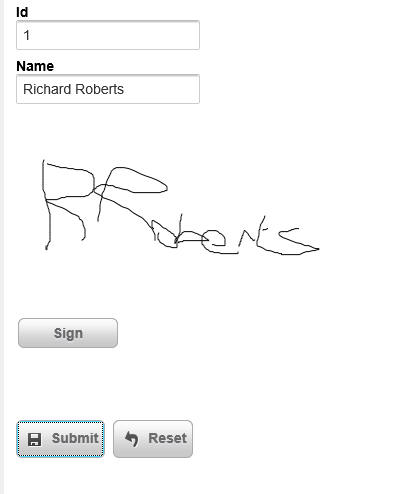
When the user clicks the 'Sign' button, the 'Image' element that displays the signature is hidden and the 'Canvas' element (where the user can sign) is displayed, as shown in the image below:
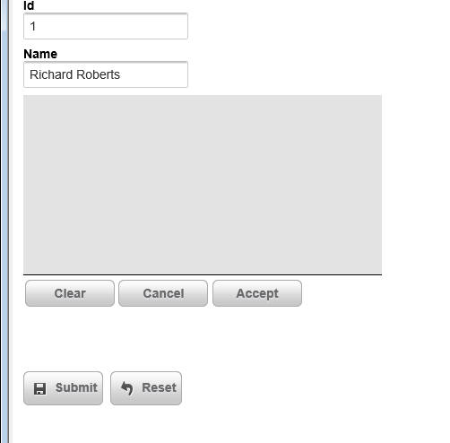
The 'Clear', 'Cancel' and 'Accept' buttons (like the 'Sign' button in the previous image) are automatically generated by the Signature Capture Control. Like the 'Sign' button, you can optionally turn off these buttons and add your own buttons to control the Signature Capture Control. The buttons perform the following actions:
The image and canvas elements that make up the Signature Capture control are contained within an outer container. When you define the properties of the Signature Capture control you specify the dimensions of the outer container separately from the dimensions of the signature capture area.
The dimensions of the signature capture area must be smaller than the dimensions of the outer container (because the signature capture area has to fit within the outer container) and must not use percentage sizes. For example you can't set the width of the signature capture area to (say) '80%'. The reason for this is that you never want the signature capture area to resize (for example, when the orientation of a mobile device changes), or else a signature captured when the device was using (say) portrait mode would look distorted when you were in landscape mode.
Storing Signatures in a Database
When the user submits the UX component, you can store the signature that the user entered in a field in a table. The signature control must be bound to a binary field. When the UX component is submitted, the value in the signature capture control is submitted as a base64 encoded PNG image. The value is converted to a binary value before it is stored in the table field.
NOTE: In the case where you are storing data in a .dbf table, you must store the data in a PNG image field.
Defining Your Own Buttons to Control the Signature Capture Control
The property sheet for the Signature Capture control allows you to turn off the system generated buttons. If you do this, then you must add your own buttons. Here is the Javascript code that each button must call:
Sign Button
{dialog.object}._functions._toggleCanvas(signatureControlId,'canvas');
{dialog.object}._functions._clearCanvas(signatureControlId);
Clear Button
{dialog.object}._functions._clearCanvas(signatureControlId);
Cancel Button
{dialog.object}._functions._toggleCanvas(signatureControlId,'image');
Accept Button
{dialog.object}._functions._saveCanvas(signatureControlId);
{dialog.object}._functions._toggleCanvas(signatureControlId,'image');
Where 'signatureControlId' is the id of the control.
In order to hide the 'Sign' button when the 'Clear', 'Capture' and 'Accept' buttons are shown, and vice versa, you can hook into the 'onSignatureCaptureToggle' client-side event.
Validating Signature
A common requirement in a UX component is to validate that the user has signed the form when the UX is submitted. You can check that there is data in a signature capture control by adding code to the server-side dialogValidate event. When the UX is submitted, the signature (in base64 encoded form) will be submitted in a special hidden field with the same name as the signature control and a '_HIDDENA5FN' suffix.
The following code in the dialogValidate event will check to see that the user has signed the UX (assuming that the signature control was called 'SIG':
function dialogValidate as p (e as p)
dialogValidate.hasError = .f.
dialogValidate.errorText = ""
if e.dataSubmitted.SIG_HIDDENA5FN = "" then
dialogValidate.hasError = .t.
dialogValidate.errorText = "You have not signed the form."
end if
end function
UX Component - List Control - Freeform Layout - 'Fill' Option for List Height or Width - By default, when you define a freeform layout for a List, each item (i.e. row) in the list has a default size (the amount of space taken by the item content), or an explicit size (that you specify - e.g. 200px). A new option has been added when you specify an exlicit size. You can now use the 'fill' keyword (in place of an explicit size).
For example, in a List that is set to scroll horizontally, you can set both the height and width to 'fill'. This will result in each item on the List completely filling the List. You will only be able to see one List item at a time.
The image below shows a List set to scroll horizontally. The item width is set to 150px and the item height has not been set.
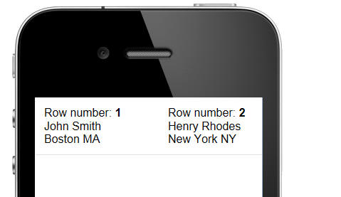
In the next image, the item width has been changed to 'fill'. Notice now that each item has the full width of the 'viewport' (i.e. the List).
When you use the 'fill' keyword for a List item dimension (height or width), you can also specify a modifier - an amount by which the dimension should be less than the viewport dimension. E.g. fill-10px.
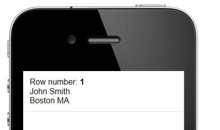
In the next image, the item height has also been changed from 'blank' (ie. not height specified, so base the height on the item content) to 'fill'. Notice now that the item completely fills the 'viewport'.
When you set a width or height dimension to 'fill' you might want to turn on custom scroll settings, to prevent a situation like the one shown below from happening.
In the image below (for a List set to scroll horizontally), the item width has been set to 'fill' and the user has scrolled the List so that some of row 1 and some of row 2 are shown.
You can set the List so that it scrolls in discrete amounts to prevent this from happening. See the topic 'UX Component - List Control - Custom Scroll Settings' for details.
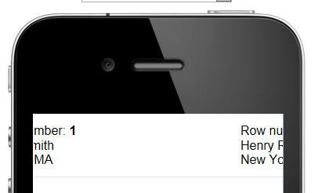
In the image below, custom scroll settings have been defined so that the List scrolls in discrete amounts (in this case, the width of the viewport). As a result, when you stop drag scrolling, the List animates a complete item into view. A partial item (as in the above image) will never be shown.

UX Component - List Control - Custom Scroll Settings - Normally drag-scrolling on a List is continuous. In other word, when you drag-scroll the List, you can stop dragging at any time and the List will remain scrolled in the position where you stopped dragging. However, you might want the List to scroll in discrete amounts, rather than continuously.
You can define custom scroll settings for a List, or for an individual Layout in a List (if the List has more than one Layout).
When you define custom scroll settings, you can define these properties:
The 'Scroll step size' and 'Offset' can be defined for both the x and y axes.
UX Component - Adding Controls - Watermark - Shortcut - A common pattern when building mobile applications is to set control label position to 'None' and then turn on the watermark property. This saves valuable screen real estate.
For example:

Now, a new shortcut when adding controls makes this even easier to do. When you add new controls, the component, the dialog allows you to set the label position to 'watermark'

Grid Component - SQL Tables - GUID as Primary Key - If you had a Grid based on a table that used a GUID as the primary key, you had to previously add code to the CanInsertRecord event to set the value in the GUID field.
For example:
function CanInsertRecord as v (DataSubmitted as P, Args as p, PageVariables as p, Result as p)
with PageVariables
Result.Cancel = .f.
Result.ErrorHTML = ""
DataSubmitted.MYGUIDFIELD = *guid_create()
end with
end function
This is now no longer necessary. If no value was supplied for the GUID field, an GUID value will be automatically generated (only if the GUID field is the primary key).
UX Component - Populating Controls with Data in a Data Bound UX - Ajax Callback - In a data bound UX component, you can make call this method of the UX component to do an Ajax callback and populate the UX component with data for the specified primary key value:
{dialog.object}.populateControlsFromTable
However, if you have your own, user defined Ajax callback, you might want to generate the Javascript to populate the controls with table data in your own callback, rather than triggering a second Ajax callback. A new option in the a5_UX_Action() server-side function allows you to do this. In the example below we show the Xbasic function to handle a custom Ajax callback. Assume the Xbasic function is called myXB.
function myXB as c (e as p)
dim ops as p
ops.primaryKey = primaryKeyValue
ops.showDebugInfo = flagValue
dim javascriptCode as c
javascriptCode = a5_UX_Action(e.ops,"populateControlsFromTable")
dim jsOther as c
jsOther = "any other javascript you want your callback to return"
myXB = javascriptCode + jsOther
end function
{kind=link}